import warnings
import time
import math
import os
from pathlib import Path
from concurrent.futures import ThreadPoolExecutor, as_completed
import numpy as np
import pandas as pd
import matplotlib.pyplot as plt
from scipy import optimize
from scipy.stats import norm
from numba import njit, prange
from IPython.display import display
from quantfinlab.dataio import load_par_yield_curve, load_spx_option_pairs
from quantfinlab.fixed_income.bootstrap import build_zero_curve_panel_from_par_yields
from quantfinlab.fixed_income.discounting import discount_factor_from_rate, map_curve_rates_to_dates_and_taus
from quantfinlab.options.bsm import black76_price
from quantfinlab.options.greeks import compute_greeks_numpy
from quantfinlab.options.iv import compute_iv_table, implied_vol_newton_bisection_python
from quantfinlab.options.parity import infer_forwards_from_paired_quotes
from quantfinlab.options.quote_cleaning import surface_ready_quotes
from quantfinlab.options.quote_cleaning import surface_support_by_date as quote_support_by_date
from quantfinlab.plotting import set_plot_style
warnings.filterwarnings("ignore")
pd.set_option("display.float_format", lambda x: f"{x:,.6f}")
set_plot_style()
plt.rcParams.update({"figure.figsize": (8.2, 4.6), "axes.grid": True})
from quantfinlab.backtest.options import run_scheduled_option_hedging_backtest, summarize_hedging_backtest11. Stochastic Volatility Models
times = []
def tic():
return time.perf_counter()
def toc(label, t0, n=np.nan):
seconds = time.perf_counter() - t0
times.append({"label": label, "seconds": seconds, "n": n})
return secondsroot = Path.cwd()
if root.name.lower() == "notebooks":
root = root.parent
data_dir = root / "data"
spx_chain_path = data_dir / "spx_options_chain_202201_202312.parquet"
rates_path = data_dir / "par-yield-curve-rates-1990-2026.csv"ann_days = 365.25
t0 = tic()
q_pair = load_spx_option_pairs(
spx_chain_path,
annualization_days=ann_days,
max_rel_spread=0.65,
tau_min_days=7.0,
tau_max_days=180.0,
k_over_s_range=(0.62, 1.62),
top_n_per_expiry=200,
min_pairs_per_expiry=5,
)
q_pair["dte_days"] = q_pair["tau"] * ann_days
toc("load paired spx quotes", t0, len(q_pair))
display(q_pair[["date", "expiry", "spot", "strike", "dte_days", "c_mid", "p_mid", "c_rel_spread", "p_rel_spread"]].head(8))| date | expiry | spot | strike | dte_days | c_mid | p_mid | c_rel_spread | p_rel_spread | |
|---|---|---|---|---|---|---|---|---|---|
| 0 | 2022-01-03 | 2022-01-12 | 4,795.570000 | 3,800.000000 | 8.333333 | 994.100000 | 0.225000 | 0.006639 | 0.222222 |
| 1 | 2022-01-03 | 2022-01-12 | 4,795.570000 | 3,825.000000 | 8.333333 | 968.000000 | 0.200000 | 0.006818 | 0.500000 |
| 2 | 2022-01-03 | 2022-01-12 | 4,795.570000 | 3,850.000000 | 8.333333 | 943.000000 | 0.200000 | 0.006999 | 0.500000 |
| 3 | 2022-01-03 | 2022-01-12 | 4,795.570000 | 3,875.000000 | 8.333333 | 918.000000 | 0.200000 | 0.007190 | 0.500000 |
| 4 | 2022-01-03 | 2022-01-12 | 4,795.570000 | 3,900.000000 | 8.333333 | 894.200000 | 0.250000 | 0.007381 | 0.400000 |
| 5 | 2022-01-03 | 2022-01-12 | 4,795.570000 | 3,925.000000 | 8.333333 | 869.200000 | 0.250000 | 0.007593 | 0.400000 |
| 6 | 2022-01-03 | 2022-01-12 | 4,795.570000 | 3,950.000000 | 8.333333 | 843.100000 | 0.250000 | 0.007828 | 0.400000 |
| 7 | 2022-01-03 | 2022-01-12 | 4,795.570000 | 3,975.000000 | 8.333333 | 819.300000 | 0.300000 | 0.008056 | 0.333333 |
t0 = tic()
par_yields = load_par_yield_curve(rates_path, source="us_treasury")
rate_curve = build_zero_curve_panel_from_par_yields(par_yields, method="pchip", as_continuous=True)
q_pair["rate"], q_pair["rate_source_date"] = map_curve_rates_to_dates_and_taus(
rate_curve,
dates=q_pair["date"],
taus=q_pair["tau"],
method="previous",
interpolation="linear",
return_source_dates=True,
)
q_pair["discount_factor"] = discount_factor_from_rate(q_pair["rate"], q_pair["tau"])
toc("attach zero rates", t0, len(q_pair))137.80376760000217t0 = tic()
fwd = infer_forwards_from_paired_quotes(q_pair).rename(columns={"n_pairs": "fwd_pairs"})
fwd["fwd_ok"] = np.isfinite(fwd["forward"]) & (fwd["forward"] > 0) & (fwd["fwd_pairs"] >= 5)
cols = ["date", "expiry", "forward", "implied_carry", "fwd_pairs", "parity_error_iqr", "fwd_ok"]
q_pair = q_pair.merge(fwd[cols], on=["date", "expiry"], how="inner")
q_pair = q_pair[q_pair["fwd_ok"].fillna(False) & (q_pair["forward"] > 0) & (q_pair["discount_factor"] > 0)].copy()
q_pair["k_pair"] = np.log(q_pair["strike"] / q_pair["forward"])
toc("infer parity forwards", t0, len(q_pair))
display(fwd[["date", "expiry", "tau", "spot", "rate", "forward", "implied_carry", "fwd_pairs", "parity_error_iqr"]].head(8))| date | expiry | tau | spot | rate | forward | implied_carry | fwd_pairs | parity_error_iqr | |
|---|---|---|---|---|---|---|---|---|---|
| 0 | 2022-01-03 | 2022-01-12 | 0.022815 | 4,795.570000 | 0.000500 | 4,793.982689 | -0.014510 | 176 | 1.625322 |
| 1 | 2022-01-03 | 2022-01-14 | 0.028291 | 4,795.570000 | 0.000500 | 4,793.769909 | -0.013270 | 200 | 1.404643 |
| 2 | 2022-01-03 | 2022-01-18 | 0.039243 | 4,795.570000 | 0.000500 | 4,793.807433 | -0.009368 | 183 | 0.987667 |
| 3 | 2022-01-03 | 2022-01-19 | 0.041980 | 4,795.570000 | 0.000500 | 4,793.786005 | -0.008863 | 172 | 0.700403 |
| 4 | 2022-01-03 | 2022-01-21 | 0.047456 | 4,795.570000 | 0.000500 | 4,793.998137 | -0.006908 | 200 | 0.282888 |
| 5 | 2022-01-03 | 2022-01-24 | 0.055670 | 4,795.570000 | 0.000500 | 4,793.696345 | -0.007020 | 157 | 1.086809 |
| 6 | 2022-01-03 | 2022-01-26 | 0.061145 | 4,795.570000 | 0.000500 | 4,793.699655 | -0.006380 | 159 | 1.105120 |
| 7 | 2022-01-03 | 2022-01-28 | 0.066621 | 4,795.570000 | 0.000500 | 4,793.345032 | -0.006966 | 200 | 0.536278 |
base = [
"date", "timestamp", "expiry", "underlying", "spot", "strike", "tau", "dte_days",
"rate", "rate_source_date", "discount_factor", "forward", "implied_carry",
"fwd_pairs", "parity_error_iqr", "k_pair",
]
q_call = q_pair[base + ["c_bid", "c_ask", "c_mid", "c_spread", "c_rel_spread", "c_volume"]].copy()
q_call = q_call.rename(columns={"c_bid": "bid", "c_ask": "ask", "c_mid": "mid", "c_spread": "spread", "c_rel_spread": "relative_spread", "c_volume": "volume"})
q_call["option_type"] = "call"
q_put = q_pair[base + ["p_bid", "p_ask", "p_mid", "p_spread", "p_rel_spread", "p_volume"]].copy()
q_put = q_put.rename(columns={"p_bid": "bid", "p_ask": "ask", "p_mid": "mid", "p_spread": "spread", "p_rel_spread": "relative_spread", "p_volume": "volume"})
q_put["option_type"] = "put"
q_long = pd.concat([q_call, q_put], ignore_index=True).sort_values(["date", "expiry", "strike", "option_type"]).reset_index(drop=True)
q_long["contract_id"] = q_long["option_type"].astype(str) + "_" + pd.to_datetime(q_long["expiry"]).dt.strftime("%Y-%m-%d") + "_" + q_long["strike"].round(6).astype(str)
display(q_long[["date", "expiry", "option_type", "spot", "forward", "strike", "dte_days", "mid", "bid", "ask"]].head(10))| date | expiry | option_type | spot | forward | strike | dte_days | mid | bid | ask | |
|---|---|---|---|---|---|---|---|---|---|---|
| 0 | 2022-01-03 | 2022-01-12 | call | 4,795.570000 | 4,793.982689 | 3,800.000000 | 8.333333 | 994.100000 | 990.800000 | 997.400000 |
| 1 | 2022-01-03 | 2022-01-12 | put | 4,795.570000 | 4,793.982689 | 3,800.000000 | 8.333333 | 0.225000 | 0.200000 | 0.250000 |
| 2 | 2022-01-03 | 2022-01-12 | call | 4,795.570000 | 4,793.982689 | 3,825.000000 | 8.333333 | 968.000000 | 964.700000 | 971.300000 |
| 3 | 2022-01-03 | 2022-01-12 | put | 4,795.570000 | 4,793.982689 | 3,825.000000 | 8.333333 | 0.200000 | 0.150000 | 0.250000 |
| 4 | 2022-01-03 | 2022-01-12 | call | 4,795.570000 | 4,793.982689 | 3,850.000000 | 8.333333 | 943.000000 | 939.700000 | 946.300000 |
| 5 | 2022-01-03 | 2022-01-12 | put | 4,795.570000 | 4,793.982689 | 3,850.000000 | 8.333333 | 0.200000 | 0.150000 | 0.250000 |
| 6 | 2022-01-03 | 2022-01-12 | call | 4,795.570000 | 4,793.982689 | 3,875.000000 | 8.333333 | 918.000000 | 914.700000 | 921.300000 |
| 7 | 2022-01-03 | 2022-01-12 | put | 4,795.570000 | 4,793.982689 | 3,875.000000 | 8.333333 | 0.200000 | 0.150000 | 0.250000 |
| 8 | 2022-01-03 | 2022-01-12 | call | 4,795.570000 | 4,793.982689 | 3,900.000000 | 8.333333 | 894.200000 | 890.900000 | 897.500000 |
| 9 | 2022-01-03 | 2022-01-12 | put | 4,795.570000 | 4,793.982689 | 3,900.000000 | 8.333333 | 0.250000 | 0.200000 | 0.300000 |
t0 = tic()
q_iv = compute_iv_table(q_long, price_cols=("bid", "mid", "ask"), solver="lbr_lite", engine="auto")
q_iv["date"] = pd.to_datetime(q_iv["date"], errors="coerce").dt.normalize()
q_iv["expiry"] = pd.to_datetime(q_iv["expiry"], errors="coerce").dt.normalize()
q_iv["dte_days"] = q_iv["tau"] * ann_days
q_iv["k"] = np.log(q_iv["strike"] / q_iv["forward"])
q_iv["log_moneyness"] = q_iv["k"]
q_iv["iv_ok"] = q_iv.get("iv_mid_success", pd.Series(False, index=q_iv.index)).astype(bool)
seconds_iv = toc("solve bid mid ask iv", t0, len(q_iv))
print(f"iv rows: {len(q_iv):,}; engine={q_iv.attrs.get('engine_used', 'unknown')}; seconds={seconds_iv:,.1f}")
display(q_iv[["date", "expiry", "option_type", "strike", "dte_days", "mid", "k", "iv_mid", "iv_bid", "iv_ask", "iv_ok"]].head(10))iv rows: 4,029,782; engine=numba; seconds=50.8| date | expiry | option_type | strike | dte_days | mid | k | iv_mid | iv_bid | iv_ask | iv_ok | |
|---|---|---|---|---|---|---|---|---|---|---|---|
| 0 | 2022-01-03 | 2022-01-12 | call | 3,800.000000 | 8.333333 | 994.100000 | -0.232360 | 0.513609 | NaN | 0.745375 | True |
| 1 | 2022-01-03 | 2022-01-12 | put | 3,800.000000 | 8.333333 | 0.225000 | -0.232360 | 0.540098 | 0.534225 | 0.545494 | True |
| 2 | 2022-01-03 | 2022-01-12 | call | 3,825.000000 | 8.333333 | 968.000000 | -0.225803 | NaN | NaN | 0.687265 | False |
| 3 | 2022-01-03 | 2022-01-12 | put | 3,825.000000 | 8.333333 | 0.200000 | -0.225803 | 0.520362 | 0.506991 | 0.531380 | True |
| 4 | 2022-01-03 | 2022-01-12 | call | 3,850.000000 | 8.333333 | 943.000000 | -0.219288 | NaN | NaN | 0.669862 | False |
| 5 | 2022-01-03 | 2022-01-12 | put | 3,850.000000 | 8.333333 | 0.200000 | -0.219288 | 0.506565 | 0.493501 | 0.517333 | True |
| 6 | 2022-01-03 | 2022-01-12 | call | 3,875.000000 | 8.333333 | 918.000000 | -0.212816 | NaN | NaN | 0.652530 | False |
| 7 | 2022-01-03 | 2022-01-12 | put | 3,875.000000 | 8.333333 | 0.200000 | -0.212816 | 0.492834 | 0.480076 | 0.503351 | True |
| 8 | 2022-01-03 | 2022-01-12 | call | 3,900.000000 | 8.333333 | 894.200000 | -0.206385 | 0.485028 | NaN | 0.675717 | True |
| 9 | 2022-01-03 | 2022-01-12 | put | 3,900.000000 | 8.333333 | 0.250000 | -0.206385 | 0.489433 | 0.479166 | 0.498253 | True |
t0 = tic()
quote_panel = compute_greeks_numpy(q_iv, iv_col="iv_mid")
quote_panel["relative_spread"] = pd.to_numeric(quote_panel["relative_spread"], errors="coerce")
quote_panel["spread"] = pd.to_numeric(quote_panel["ask"], errors="coerce") - pd.to_numeric(quote_panel["bid"], errors="coerce")
quote_panel["total_var"] = quote_panel["iv_mid"] ** 2 * quote_panel["tau"]
quote_panel["total_variance"] = quote_panel["total_var"]
def make_contract_key(df):
expiry_key = pd.to_datetime(df["expiry"]).dt.strftime("%Y-%m-%d")
strike_key = df["strike"].astype(float).map(lambda x: f"{x:.8g}")
return df["option_type"].astype(str) + "_" + expiry_key + "_" + strike_key
quote_panel["contract_key"] = make_contract_key(quote_panel)
quote_panel["contract_id"] = quote_panel["contract_key"]
toc("compute greeks", t0, len(quote_panel))40.36531639999885data_quality_summary = pd.DataFrame([{
"number_of_dates": int(quote_panel["date"].nunique()),
"number_of_expiries": int(quote_panel["expiry"].nunique()),
"number_of_raw_quotes": int(len(q_long)),
"number_of_valid_iv_quotes": int(quote_panel["iv_ok"].sum()),
"median_relative_spread": float(np.nanmedian(quote_panel["relative_spread"])),
"median_dte": float(np.nanmedian(quote_panel["dte_days"])),
"median_vega": float(np.nanmedian(np.abs(quote_panel["vega"]))),
}])
display(data_quality_summary)
by_date_iv = quote_panel[quote_panel["iv_ok"]].groupby("date").size().rename("valid_quotes").reset_index()
fig, ax = plt.subplots(figsize=(9.2, 4.2))
ax.plot(by_date_iv["date"], by_date_iv["valid_quotes"], lw=1.4)
ax.set_title("valid option quotes by date")
ax.set_xlabel("date")
ax.set_ylabel("valid quotes")
plt.tight_layout()
plt.show()| number_of_dates | number_of_expiries | number_of_raw_quotes | number_of_valid_iv_quotes | median_relative_spread | median_dte | median_vega | |
|---|---|---|---|---|---|---|---|
| 0 | 505 | 502 | 4029782 | 3989267 | 0.016252 | 35.333333 | 344.827091 |
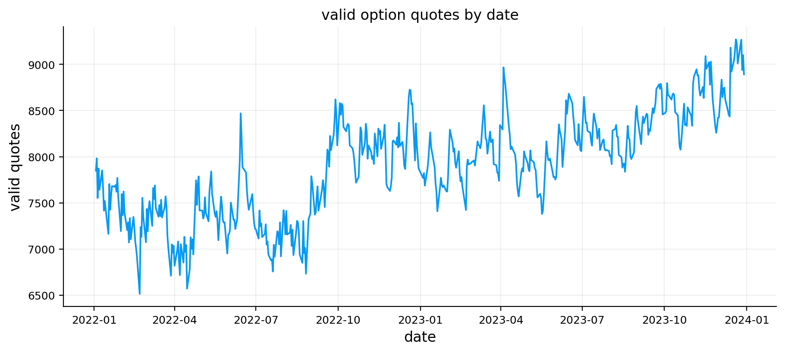
q_surface = surface_ready_quotes(
quote_panel,
min_iv=0.03,
max_iv=2.50,
min_tau=7.0 / ann_days,
max_tau=180.0 / ann_days,
)
q_surface["total_var"] = q_surface["total_variance"]
q_surface["log_moneyness"] = q_surface["k"]min_dte, max_dte, min_vega, max_rel_spread = 14.0, 150.0, 8.0, 0.45
max_abs_k, min_quotes_per_expiry, min_expiries_per_date = 0.32, 8, 5
def make_otm_quotes(q, min_vega_use=None, max_rel_spread_use=None, min_quotes_use=None):
x = q.copy()
rows = []
vega_floor = min_vega if min_vega_use is None else float(min_vega_use)
spread_cap = max_rel_spread if max_rel_spread_use is None else float(max_rel_spread_use)
strike_floor = min_quotes_per_expiry if min_quotes_use is None else int(min_quotes_use)
def cut(name, mask):
nonlocal x
before = len(x)
x = x.loc[mask].copy()
rows.append({"step": name, "rows": len(x), "removed": before - len(x)})
rows.append({"step": "surface ready", "rows": len(x), "removed": 0})
cut("positive quotes", (x["bid"] > 0) & (x["ask"] >= x["bid"]) & (x["mid"] > 0))
cut("valid iv inputs", x["iv_ok"].fillna(False) & np.isfinite(x["forward"]) & np.isfinite(x["discount_factor"]) & (x["forward"] > 0) & (x["discount_factor"] > 0))
cut("dte window", x["dte_days"].between(min_dte, max_dte))
cut("k window", x["k"].between(-max_abs_k, max_abs_k))
cut("vega and spread", (np.abs(x["vega"]) >= vega_floor) & x["relative_spread"].between(0.0, spread_cap))
atm = 0.0125
x["otm_type"] = np.where(x["k"] < -atm, "put", np.where(x["k"] > atm, "call", "either"))
med_spread = float(np.nanmedian(x["relative_spread"])) if x["relative_spread"].notna().any() else 0.25
x["q_score"] = x["relative_spread"].fillna(med_spread) + 0.02 * x["k"].abs()
x["type_penalty"] = np.where((x["otm_type"] == "either") | (x["option_type"] == x["otm_type"]), 0.0, 1.0)
before = len(x)
x = x.sort_values(["date", "expiry", "strike", "type_penalty", "q_score"]).drop_duplicates(["date", "expiry", "strike"], keep="first").copy()
rows.append({"step": "one otm leg per strike", "rows": len(x), "removed": before - len(x)})
n = x.groupby(["date", "expiry"]).size().rename("n")
keep = n[n >= strike_floor].index
before = len(x)
x = x.loc[x.set_index(["date", "expiry"]).index.isin(keep)].copy()
rows.append({"step": "enough strikes", "rows": len(x), "removed": before - len(x)})
m = x.groupby("date")["expiry"].nunique().rename("m")
keep_dates = m[m >= min_expiries_per_date].index
before = len(x)
x = x[x["date"].isin(keep_dates)].copy()
rows.append({"step": "enough expiries", "rows": len(x), "removed": before - len(x)})
x = x.sort_values(["date", "expiry", "strike"]).reset_index(drop=True)
x["quote_id"] = np.arange(len(x), dtype=int)
x["contract_id"] = x["option_type"].astype(str) + "_" + pd.to_datetime(x["expiry"]).dt.strftime("%Y-%m-%d") + "_" + x["strike"].round(6).astype(str)
return x, pd.DataFrame(rows)min_vega_model, max_rel_spread_model, n_model_dates = 2.0, 0.65, 6
calibration_panel, rejection_summary = make_otm_quotes(q_surface)
model_panel, model_rejection_summary = make_otm_quotes(q_surface, min_vega_use=min_vega_model, max_rel_spread_use=max_rel_spread_model, min_quotes_use=7)
calibration_panel["contract_key"] = make_contract_key(calibration_panel)
model_panel["contract_key"] = make_contract_key(model_panel)
calibration_panel["contract_id"] = calibration_panel["contract_key"]
model_panel["contract_id"] = model_panel["contract_key"]
support0 = quote_support_by_date(calibration_panel, k_col="k", tau_col="tau")
by_date = calibration_panel.groupby("date").agg(
quotes=("quote_id", "size"),
expiries=("expiry", "nunique"),
median_relative_spread=("relative_spread", "median"),
median_iv=("iv_mid", "median"),
k_min=("k", "min"),
k_max=("k", "max"),
near_atm_quotes=("k", lambda z: int(np.sum(np.abs(z) <= 0.035))),
wing_quotes=("k", lambda z: int(np.sum(np.abs(z) >= 0.15))),
).reset_index()
model_by_date = model_panel.groupby("date").agg(
model_quotes=("quote_id", "size"),
model_expiries=("expiry", "nunique"),
model_k_min=("k", "min"),
model_k_max=("k", "max"),
model_left_tail=("k", lambda z: int(np.sum(z <= -0.14))),
model_right_tail=("k", lambda z: int(np.sum(z >= 0.10))),
model_tail_count=("k", lambda z: int(np.sum(np.abs(z) >= 0.14))),
).reset_index()
surface_support_by_date = support0.merge(by_date, on="date", how="left", suffixes=("", "_detail"))
surface_support_by_date = surface_support_by_date.merge(model_by_date, on="date", how="left")
surface_support_by_date["k_width"] = surface_support_by_date["k_max_detail"] - surface_support_by_date["k_min_detail"]
surface_support_by_date["model_k_width"] = surface_support_by_date["model_k_max"] - surface_support_by_date["model_k_min"]
surface_support_by_date["score"] = (
surface_support_by_date["quotes"].fillna(0)
+ 25.0 * surface_support_by_date["expiries"].fillna(0)
+ 1.5 * surface_support_by_date["near_atm_quotes"].fillna(0)
+ surface_support_by_date["wing_quotes"].fillna(0)
+ 0.6 * surface_support_by_date["model_tail_count"].fillna(0)
+ 150.0 * surface_support_by_date["model_k_width"].fillna(0)
+ 120.0 * surface_support_by_date["k_width"].fillna(0)
- 80.0 * surface_support_by_date["median_relative_spread"].fillna(0.50)
)
good_dates = surface_support_by_date[
(surface_support_by_date["quotes"] >= 120)
& (surface_support_by_date["expiries"] >= min_expiries_per_date)
& (surface_support_by_date["near_atm_quotes"] >= 18)
].copy()
if good_dates.empty:
good_dates = surface_support_by_date.sort_values("score", ascending=False).head(20).copy()
tail_dates = good_dates[
(good_dates["model_left_tail"].fillna(0) >= 8)
& (good_dates["model_tail_count"].fillna(0) >= 16)
].copy()
main_pool = tail_dates if not tail_dates.empty else good_dates
recent_cut = main_pool["date"].quantile(0.65)
main_date = pd.Timestamp(main_pool[main_pool["date"] >= recent_cut].sort_values("score", ascending=False).iloc[0]["date"]).normalize()
date_panel_dates = good_dates.sort_values("score", ascending=False).head(n_model_dates)["date"].sort_values().to_numpy()
q0 = calibration_panel[calibration_panel["date"].eq(main_date)].copy()
q_model0 = model_panel[model_panel["date"].eq(main_date)].copy()
date_panel = calibration_panel[calibration_panel["date"].isin(date_panel_dates)].copy()
date_model_panel = model_panel[model_panel["date"].isin(date_panel_dates)].copy()
display(rejection_summary)
display(model_rejection_summary)
display(surface_support_by_date.sort_values("score", ascending=False).head(8)[["date", "quotes", "expiries", "near_atm_quotes", "wing_quotes", "model_left_tail", "model_right_tail", "model_tail_count", "model_k_min", "model_k_max", "median_relative_spread", "score"]])
print(f"main_date: {main_date.date()}; clean quotes: {len(q0):,}; model quotes: {len(q_model0):,}; expiries: {q0['expiry'].nunique():,}")| step | rows | removed | |
|---|---|---|---|
| 0 | surface ready | 3989266 | 0 |
| 1 | positive quotes | 3989266 | 0 |
| 2 | valid iv inputs | 3989266 | 0 |
| 3 | dte window | 3060367 | 928899 |
| 4 | k window | 3019732 | 40635 |
| 5 | vega and spread | 3005563 | 14169 |
| 6 | one otm leg per strike | 1515066 | 1490497 |
| 7 | enough strikes | 1515066 | 0 |
| 8 | enough expiries | 1515066 | 0 |
| step | rows | removed | |
|---|---|---|---|
| 0 | surface ready | 3989266 | 0 |
| 1 | positive quotes | 3989266 | 0 |
| 2 | valid iv inputs | 3989266 | 0 |
| 3 | dte window | 3060367 | 928899 |
| 4 | k window | 3019732 | 40635 |
| 5 | vega and spread | 3018842 | 890 |
| 6 | one otm leg per strike | 1519842 | 1499000 |
| 7 | enough strikes | 1519842 | 0 |
| 8 | enough expiries | 1519842 | 0 |
| date | quotes | expiries | near_atm_quotes | wing_quotes | model_left_tail | model_right_tail | model_tail_count | model_k_min | model_k_max | median_relative_spread | score | |
|---|---|---|---|---|---|---|---|---|---|---|---|---|
| 498 | 2023-12-20 | 3873 | 29 | 1563 | 381 | 415 | 70 | 432 | -0.319768 | 0.259187 | 0.031088 | 7,734.766086 |
| 499 | 2023-12-21 | 3867 | 29 | 1467 | 412 | 442 | 79 | 458 | -0.315042 | 0.249627 | 0.025157 | 7,629.748012 |
| 497 | 2023-12-19 | 3835 | 29 | 1380 | 424 | 490 | 85 | 511 | -0.318249 | 0.244649 | 0.019048 | 7,511.058495 |
| 500 | 2023-12-22 | 3756 | 28 | 1442 | 394 | 427 | 63 | 444 | -0.316721 | 0.247947 | 0.022326 | 7,428.315973 |
| 494 | 2023-12-14 | 3633 | 27 | 1305 | 402 | 456 | 45 | 468 | -0.319200 | 0.224761 | 0.032787 | 7,092.546581 |
| 496 | 2023-12-18 | 3582 | 28 | 1286 | 425 | 484 | 67 | 503 | -0.319879 | 0.236780 | 0.022892 | 7,086.266515 |
| 501 | 2023-12-26 | 3600 | 27 | 1334 | 380 | 435 | 50 | 454 | -0.319388 | 0.275328 | 0.021978 | 7,083.405063 |
| 495 | 2023-12-15 | 3534 | 27 | 1311 | 409 | 464 | 57 | 478 | -0.319863 | 0.241519 | 0.033898 | 7,018.177775 |
main_date: 2023-12-20; clean quotes: 3,873; model quotes: 3,885; expiries: 29expiry_support = q0.groupby("expiry").agg(n=("quote_id", "size"), dte=("dte_days", "median")).sort_values("dte")
fig, ax = plt.subplots(figsize=(9.0, 4.2))
ax.bar(expiry_support["dte"], expiry_support["n"], width=3.5, alpha=0.82)
ax.set_title(f"main-date quote support by expiry ({main_date.date()})")
ax.set_xlabel("days to expiry")
ax.set_ylabel("otm quotes")
plt.tight_layout()
plt.show()
fig, ax = plt.subplots(figsize=(8.4, 4.8))
sc = ax.scatter(q0["k"], q0["iv_mid"], c=q0["dte_days"], s=20, alpha=0.82, cmap="viridis")
ax.set_title("main-date implied volatility by k and maturity")
ax.set_xlabel("k = log strike / forward")
ax.set_ylabel("implied volatility")
fig.colorbar(sc, ax=ax, pad=0.01, label="days to expiry")
plt.tight_layout()
plt.show()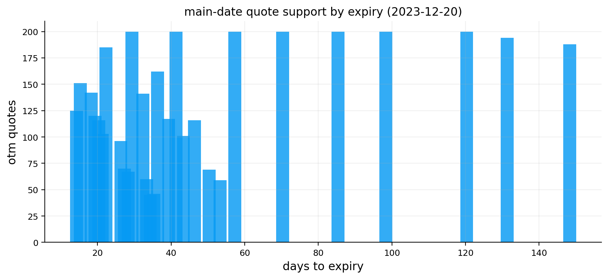
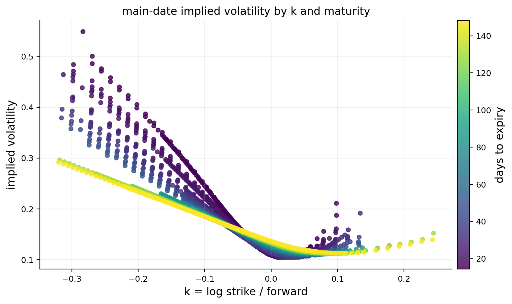
z = q0.copy()
z["k_bin"] = pd.cut(z["k"], np.linspace(-max_abs_k, max_abs_k, 15))
z["dte_bin"] = pd.cut(z["dte_days"], np.linspace(min_dte, max_dte, 11))
h = z.pivot_table(index="dte_bin", columns="k_bin", values="quote_id", aggfunc="count", observed=False)
fig, ax = plt.subplots(figsize=(9.8, 4.8))
im = ax.imshow(h.fillna(0).to_numpy(), aspect="auto", origin="lower", cmap="magma")
ax.set_title("quote count by maturity and k bucket")
ax.set_xlabel("k bucket")
ax.set_ylabel("maturity bucket")
ax.set_xticks(np.arange(h.shape[1]))
ax.set_xticklabels([f"{b.mid:.2f}" for b in h.columns], rotation=45, ha="right")
ax.set_yticks(np.arange(h.shape[0]))
ax.set_yticklabels([f"{b.mid:.0f}" for b in h.index])
fig.colorbar(im, ax=ax, pad=0.01, label="quotes")
plt.tight_layout()
plt.show()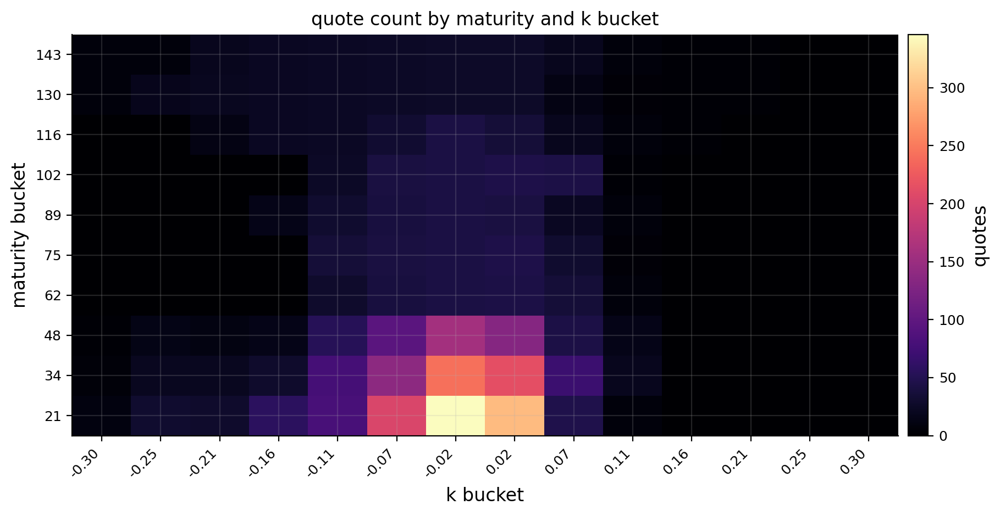
def add_quote_sigma(q):
x = q.copy()
x["half_spread"] = 0.5 * (pd.to_numeric(x["ask"], errors="coerce") - pd.to_numeric(x["bid"], errors="coerce")).clip(lower=0.0)
vega = np.abs(pd.to_numeric(x["vega"], errors="coerce"))
x["iv_width"] = (pd.to_numeric(x["iv_ask"], errors="coerce") - pd.to_numeric(x["iv_bid"], errors="coerce")).where(lambda s: np.isfinite(s) & (s > 0))
x["sigma_iv_direct"] = 0.5 * x["iv_width"]
x["sigma_iv_px"] = x["half_spread"] / vega.replace(0, np.nan)
eps_iv = pd.concat([x["sigma_iv_direct"], x["sigma_iv_px"]], axis=1).max(axis=1)
med = float(np.nanmedian(eps_iv)) if np.isfinite(eps_iv).any() else 0.020
x["eps_iv"] = eps_iv.fillna(med).clip(lower=0.0025, upper=0.40)
x["total_var"] = x["iv_mid"] ** 2 * x["tau"]
x["eps_w"] = (2.0 * x["iv_mid"].abs() * x["tau"] * x["eps_iv"]).clip(lower=1e-5)
x["calib_scale_px"] = np.maximum(x["half_spread"], 0.25 * vega * x["eps_iv"]).clip(lower=0.02)
x["eps_px"] = np.maximum(x["half_spread"], vega * x["eps_iv"]).clip(lower=0.02)
x["expected_exit_half_spread"] = x.groupby(["date", "expiry"])["half_spread"].transform("median").fillna(x["half_spread"].median())
x["trade_cost_px"] = x["half_spread"] + 0.5 * x["expected_exit_half_spread"]
spread = x["relative_spread"].replace([np.inf, -np.inf], np.nan)
spread_med = float(np.nanmedian(spread[(spread > 0) & np.isfinite(spread)])) if spread.notna().any() else 0.10
spread = spread.fillna(spread_med).clip(lower=0.003, upper=1.0)
w_spread = 1.0 / (spread.to_numpy(dtype=float) ** 2 + 0.03 ** 2)
w_spread = w_spread / max(float(np.nanmedian(w_spread)), 1e-12)
vega_med = float(np.nanmedian(vega[(vega > 0) & np.isfinite(vega)])) if np.isfinite(vega).any() else 1.0
w_vega = np.clip((vega.to_numpy(dtype=float) / max(vega_med, 1e-12)) ** 0.40, 0.20, 3.0)
eps = x["eps_iv"].to_numpy(dtype=float)
eps_med = float(np.nanmedian(eps[np.isfinite(eps) & (eps > 0)])) if np.isfinite(eps).any() else 0.02
w_eps = np.clip(eps / max(eps_med, 1e-12), 0.45, 4.0) ** -0.70
w_k = np.exp(-np.maximum(np.abs(x["k"].to_numpy(dtype=float)) - 0.12, 0.0) / 0.35)
n_exp = x.groupby(["date", "expiry"])["quote_id"].transform("count").to_numpy(dtype=float)
w_tau = 1.0 / np.sqrt(np.maximum(n_exp, 1.0))
w_tau = w_tau / max(float(np.nanmedian(w_tau)), 1e-12)
wt = w_spread * w_vega * w_eps * w_k * w_tau
wt = wt / max(float(np.nanmedian(wt[np.isfinite(wt)])), 1e-12)
x["w_spread"] = w_spread
x["w_vega"] = w_vega
x["w_eps"] = w_eps
x["w_k"] = w_k
x["w_tau"] = w_tau
x["weight"] = np.clip(wt, 0.05, 20.0)
return xcalibration_panel = add_quote_sigma(calibration_panel)
model_panel = add_quote_sigma(model_panel)
q0 = calibration_panel[calibration_panel["date"].eq(main_date)].copy()
q_model0 = model_panel[model_panel["date"].eq(main_date)].copy()
date_panel = calibration_panel[calibration_panel["date"].isin(date_panel_dates)].copy()
date_model_panel = model_panel[model_panel["date"].isin(date_panel_dates)].copy()
uncertainty_by_maturity = q0.assign(dte_bucket=pd.cut(q0["dte_days"], bins=[0, 21, 45, 75, 110, 180])).groupby("dte_bucket", observed=False).agg(
quotes=("quote_id", "size"),
median_eps_iv=("eps_iv", "median"),
median_eps_px=("eps_px", "median"),
median_weight=("weight", "median"),
).reset_index()
display(uncertainty_by_maturity)| dte_bucket | quotes | median_eps_iv | median_eps_px | median_weight | |
|---|---|---|---|---|---|
| 0 | (0, 21] | 654 | 0.002500 | 0.439562 | 0.265759 |
| 1 | (21, 45] | 1593 | 0.002500 | 0.786292 | 0.486536 |
| 2 | (45, 75] | 644 | 0.002500 | 1.314566 | 0.755503 |
| 3 | (75, 110] | 400 | 0.002500 | 1.737149 | 0.984168 |
| 4 | (110, 180] | 582 | 0.002500 | 1.919746 | 0.980406 |
fig, axes = plt.subplots(1, 3, figsize=(14.4, 4.4))
axes[0].scatter(q0["k"], q0["eps_iv"], c=q0["dte_days"], cmap="viridis", s=18, alpha=0.78)
axes[0].set_title("iv uncertainty by k")
axes[0].set_xlabel("k")
axes[0].set_ylabel("iv uncertainty")
axes[1].scatter(q0["k"], q0["weight"], c=q0["dte_days"], cmap="viridis", s=18, alpha=0.78)
axes[1].set_title("observation weights by k")
axes[1].set_xlabel("k")
axes[1].set_ylabel("weight")
axes[2].scatter(q0["relative_spread"], q0["weight"], c=np.abs(q0["vega"]), cmap="magma", s=18, alpha=0.78)
axes[2].set_title("spread, vega, and weight")
axes[2].set_xlabel("relative spread")
axes[2].set_ylabel("weight")
plt.tight_layout()
plt.show()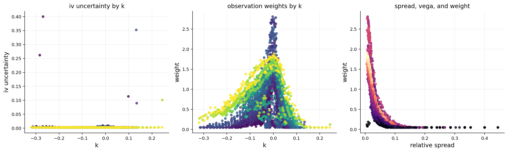
targets = pd.DataFrame([
{"model": "svi", "target": "total variance", "scale": "eps_w"},
{"model": "ssvi", "target": "total variance", "scale": "eps_w"},
{"model": "sabr", "target": "implied volatility", "scale": "eps_iv"},
{"model": "merton", "target": "otm price", "scale": "eps_px"},
{"model": "heston", "target": "otm price", "scale": "eps_px"},
{"model": "bates", "target": "otm price", "scale": "eps_px"},
])
display(targets)| model | target | scale | |
|---|---|---|---|
| 0 | svi | total variance | eps_w |
| 1 | ssvi | total variance | eps_w |
| 2 | sabr | implied volatility | eps_iv |
| 3 | merton | otm price | eps_px |
| 4 | heston | otm price | eps_px |
| 5 | bates | otm price | eps_px |
def svi_w_demo(k, a, b, rho, m, sigma):
return a + b * (rho * (k - m) + np.sqrt((k - m) ** 2 + sigma ** 2))
k_line = np.linspace(-0.35, 0.35, 240)
tau_demo = 60.0 / ann_days
p_demo = [
(0.010, 0.030, -0.60, 0.000, 0.120, "balanced skew"),
(0.008, 0.045, -0.85, -0.030, 0.080, "strong downside wing"),
(0.012, 0.025, 0.20, 0.020, 0.160, "gentler curvature"),
]
fig, ax = plt.subplots(figsize=(8.4, 4.4))
for a, b, rho, m, sigma, label in p_demo:
ax.plot(k_line, np.sqrt(np.maximum(svi_w_demo(k_line, a, b, rho, m, sigma), 1e-8) / tau_demo), lw=2.0, label=label)
ax.set_title("raw svi total-variance smiles")
ax.set_xlabel("k")
ax.set_ylabel("implied volatility")
ax.legend()
plt.tight_layout()
plt.show()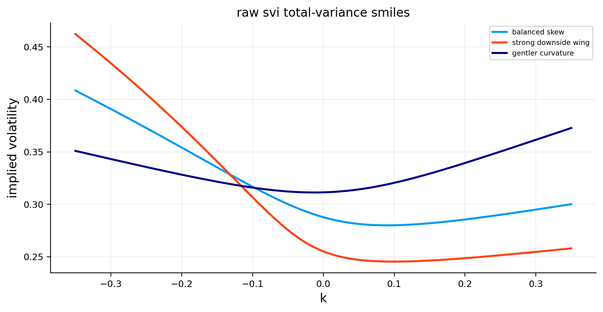
@njit
def svi_w(k, a, b, rho, m, sigma):
out = np.empty(k.size, dtype=np.float64)
for i in range(k.size):
x = k[i] - m
out[i] = a + b * (rho * x + math.sqrt(x * x + sigma * sigma))
return out
@njit
def svi_iv(k, tau, a, b, rho, m, sigma):
w = svi_w(k, a, b, rho, m, sigma)
out = np.empty(k.size, dtype=np.float64)
for i in range(k.size):
out[i] = math.sqrt(max(w[i], 1e-12) / max(tau[i], 1e-12))
return out
t0 = tic()
_ = svi_w(np.array([0.0, 0.1]), 0.01, 0.04, -0.4, 0.0, 0.12)
svi_compile_time = toc("compile svi", t0, 2)def wrmse(x, wt):
x = np.asarray(x, dtype=float)
wt = np.asarray(wt, dtype=float)
ok = np.isfinite(x) & np.isfinite(wt) & (wt > 0)
if ok.sum() == 0:
return np.nan
return float(np.sqrt(np.average(x[ok] ** 2, weights=wt[ok])))
def near_bound(p, lo, hi, tol=2e-3):
p = np.asarray(p, dtype=float)
lo = np.asarray(lo, dtype=float)
hi = np.asarray(hi, dtype=float)
scale = np.maximum(hi - lo, 1e-12)
return bool(np.any((p - lo) / scale < tol) or np.any((hi - p) / scale < tol))def svi_starts(q, p_prev=None):
k = q["k"].to_numpy(dtype=float)
w = q["total_var"].to_numpy(dtype=float)
iv = q["iv_mid"].to_numpy(dtype=float)
i0 = int(np.nanargmin(np.abs(k)))
w0 = float(np.clip(w[i0], 1e-5, 2.0))
slope = float(np.polyfit(k, w, 1)[0]) if len(q) >= 5 else 0.0
starts = [
np.array([0.35 * w0, max(0.02, 1.2 * abs(slope)), -0.50, 0.0, 0.10]),
np.array([0.20 * w0, max(0.03, 0.8 * np.nanmedian(iv) ** 2), -0.75, float(k[i0]), 0.08]),
np.array([0.55 * w0, max(0.01, 0.5 * abs(slope) + 0.015), -0.25, float(np.nanmedian(k)), 0.18]),
]
if p_prev is not None and np.all(np.isfinite(p_prev)):
starts.insert(0, np.asarray(p_prev, dtype=float))
return starts
def fit_svi_slice(q, p_prev=None):
z = q.sort_values("k").copy()
k = z["k"].to_numpy(dtype=float)
y = z["total_var"].to_numpy(dtype=float)
eps = z["eps_w"].to_numpy(dtype=float)
eps_med = float(np.nanmedian(eps[np.isfinite(eps) & (eps > 0)])) if np.isfinite(eps).any() else 1e-4
eps = np.clip(eps, max(1e-5, 0.25 * eps_med), 0.25)
root_wt = np.sqrt(z["weight"].to_numpy(dtype=float))
lo = np.array([-0.20, 1e-5, -0.999, -0.80, 1e-4])
hi = np.array([2.00, 5.00, 0.999, 0.80, 2.00])
def err(p):
w = np.asarray(svi_w(k, p[0], p[1], p[2], p[3], p[4]), dtype=float)
r = root_wt * (w - y) / eps
r = np.where((~np.isfinite(w)) | (w <= 1e-8), 1e3, r)
k_grid = np.linspace(np.nanmin(k), np.nanmax(k), 25)
w_grid = np.asarray(svi_w(k_grid, p[0], p[1], p[2], p[3], p[4]), dtype=float)
pen = max(0.0, 1e-7 - float(np.nanmin(w_grid))) * 1e5
return np.r_[r, pen]
best = None
for p0 in svi_starts(z, p_prev):
t0 = tic()
res = optimize.least_squares(
err,
np.clip(p0, lo + 1e-8, hi - 1e-8),
bounds=(lo, hi),
loss="soft_l1",
f_scale=1.0,
max_nfev=180,
xtol=1e-8,
ftol=1e-8,
)
item = {"res": res, "cost": float(res.cost), "seconds": time.perf_counter() - t0}
if best is None or item["cost"] < best["cost"]:
best = item
return best["res"].x, best["res"].success, best["seconds"], best["res"].nfev, lo, hidef fit_svi(q):
p_rows = []
f_rows = []
d_rows = []
p_prev = None
for expiry, g in q.groupby("expiry", sort=True):
g = g.sort_values("k").copy()
tau = float(g["tau"].median())
dte = float(g["dte_days"].median())
if len(g) < min_quotes_per_expiry:
d_rows.append({"expiry": expiry, "tau": tau, "dte_days": dte, "success": False, "n_quotes": len(g), "reason": "too few quotes"})
continue
p, ok, seconds, nfev, lo, hi = fit_svi_slice(g, p_prev)
p_prev = p if ok else p_prev
w_hat = np.asarray(svi_w(g["k"].to_numpy(dtype=float), *p), dtype=float)
iv_hat = np.sqrt(np.maximum(w_hat, 1e-12) / g["tau"].to_numpy(dtype=float))
px_hat = black76_price(g["option_type"].to_numpy(), g["forward"], g["strike"], g["tau"], iv_hat, g["discount_factor"])
e_iv = iv_hat - g["iv_mid"].to_numpy(dtype=float)
e_w = w_hat - g["total_var"].to_numpy(dtype=float)
wt = g["weight"].to_numpy(dtype=float)
d_rows.append({
"expiry": expiry,
"tau": tau,
"dte_days": dte,
"success": bool(ok),
"n_quotes": int(len(g)),
"calibration_time": float(seconds),
"objective_evaluations": int(nfev),
"weighted_rmse_total_var": wrmse(e_w, wt),
"weighted_rmse_iv": wrmse(e_iv, wt),
"median_abs_iv_error": float(np.nanmedian(np.abs(e_iv))),
"p90_abs_iv_error": float(np.nanquantile(np.abs(e_iv), 0.90)),
"min_fitted_total_var": float(np.nanmin(w_hat)),
"parameter_at_bound": near_bound(p, lo, hi),
"wing_warning": bool(np.nanmin(w_hat) <= 1e-6),
"reason": "ok" if ok else "optimizer failed",
})
p_rows.append({"expiry": expiry, "tau": tau, "dte_days": dte, "a": p[0], "b": p[1], "rho": p[2], "m": p[3], "sigma": p[4], "success": bool(ok)})
z = g.copy()
z["model"] = "svi"
z["model_total_var"] = w_hat
z["model_iv"] = iv_hat
z["model_price"] = np.asarray(px_hat, dtype=float)
z["iv_residual"] = z["model_iv"] - z["iv_mid"]
z["price_residual"] = z["model_price"] - z["mid"]
f_rows.append(z)
fit = pd.concat(f_rows, ignore_index=True) if f_rows else pd.DataFrame()
return pd.DataFrame(p_rows), fit, pd.DataFrame(d_rows)t0 = tic()
svi_params, svi_fit, svi_diag = fit_svi(q0)
toc("calibrate raw svi", t0, len(q0))
display(svi_diag[["dte_days", "success", "n_quotes", "weighted_rmse_iv", "median_abs_iv_error", "p90_abs_iv_error", "parameter_at_bound"]].head(12))| dte_days | success | n_quotes | weighted_rmse_iv | median_abs_iv_error | p90_abs_iv_error | parameter_at_bound | |
|---|---|---|---|---|---|---|---|
| 0 | 14.333333 | True | 125 | 0.001079 | 0.000591 | 0.002606 | False |
| 1 | 15.333333 | True | 151 | 0.003927 | 0.000319 | 0.001101 | False |
| 2 | 18.333333 | True | 142 | 0.000596 | 0.000377 | 0.001410 | False |
| 3 | 19.333333 | True | 120 | 0.000562 | 0.000390 | 0.001849 | False |
| 4 | 20.333333 | True | 116 | 0.000504 | 0.000356 | 0.001367 | False |
| 5 | 21.333333 | True | 103 | 0.000477 | 0.000404 | 0.001593 | False |
| 6 | 22.333333 | True | 185 | 0.000687 | 0.000453 | 0.001372 | False |
| 7 | 26.333333 | True | 96 | 0.000478 | 0.000394 | 0.001310 | False |
| 8 | 27.333333 | True | 70 | 0.000389 | 0.000364 | 0.000939 | False |
| 9 | 28.333333 | True | 67 | 0.000541 | 0.000480 | 0.001047 | False |
| 10 | 29.333333 | True | 200 | 0.000457 | 0.000414 | 0.000768 | False |
| 11 | 32.333333 | False | 141 | 0.001081 | 0.000447 | 0.000965 | False |
selected_expiries = svi_diag.sort_values("n_quotes", ascending=False).head(5)["expiry"].tolist()
fig, ax = plt.subplots(figsize=(8.8, 5.0))
for expiry in selected_expiries:
g = svi_fit[svi_fit["expiry"].eq(expiry)].sort_values("k")
if g.empty:
continue
ax.scatter(g["k"], g["iv_mid"], s=18, alpha=0.55)
ax.plot(g["k"], g["model_iv"], lw=2.0, label=f"{g['dte_days'].median():.0f}d")
ax.set_title("raw svi fitted smiles versus market iv")
ax.set_xlabel("k")
ax.set_ylabel("implied volatility")
ax.legend(title="maturity")
plt.tight_layout()
plt.show()
fig, ax = plt.subplots(figsize=(8.4, 4.4))
ax.scatter(svi_fit["k"], svi_fit["iv_residual"], c=svi_fit["dte_days"], cmap="viridis", s=18, alpha=0.80)
ax.axhline(0.0, lw=0.9, alpha=0.70)
ax.set_title("raw svi iv residuals by k")
ax.set_xlabel("k")
ax.set_ylabel("model iv - market iv")
plt.tight_layout()
plt.show()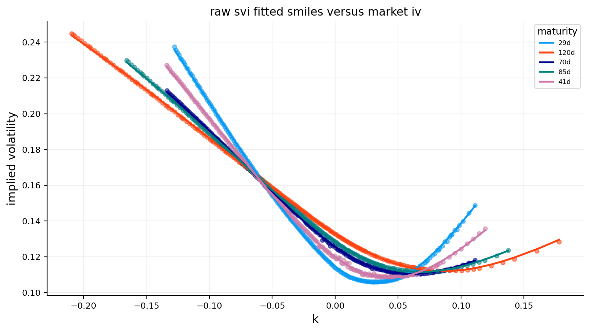
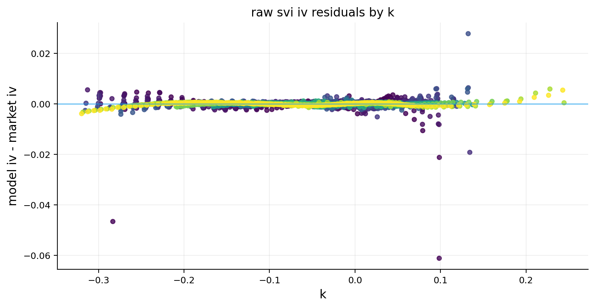
fig, axes = plt.subplots(2, 3, figsize=(13.4, 6.2), sharex=True)
for ax, col in zip(axes.ravel(), ["a", "b", "rho", "m", "sigma"]):
ax.plot(svi_params["dte_days"], svi_params[col], marker="o", lw=1.6)
ax.set_title(col)
ax.set_xlabel("days to expiry")
axes.ravel()[-1].axis("off")
plt.tight_layout()
plt.show()
fig, ax = plt.subplots(figsize=(8.6, 4.2))
ax.bar(svi_diag["dte_days"], svi_diag["weighted_rmse_iv"], width=3.0, alpha=0.82)
ax.set_title("raw svi weighted iv rmse by expiry")
ax.set_xlabel("days to expiry")
ax.set_ylabel("weighted iv rmse")
plt.tight_layout()
plt.show()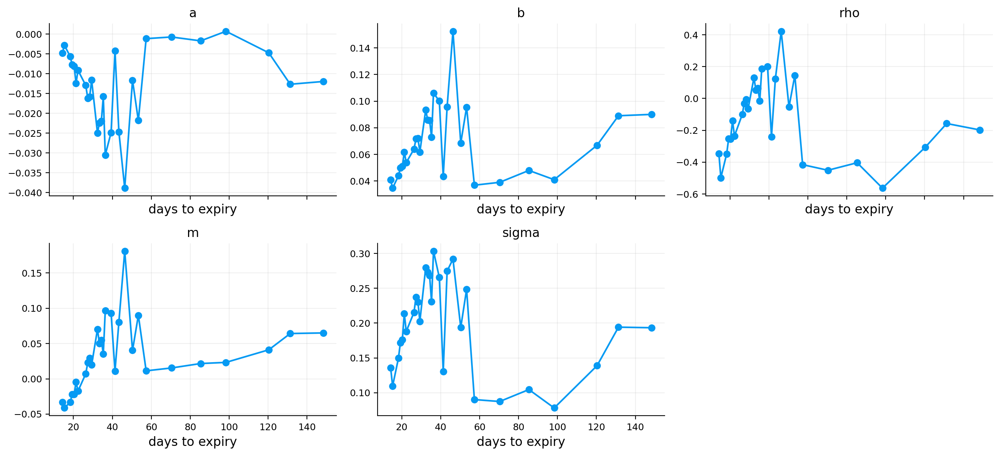
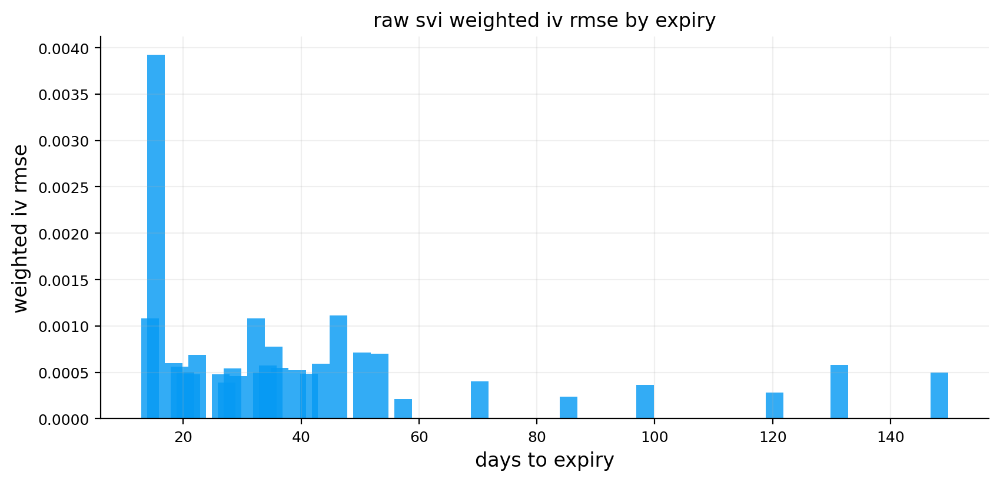
def theta_from_atm(q):
rows = []
for expiry, g in q.groupby("expiry", sort=True):
near = g[np.abs(g["k"]) <= 0.045].copy()
use = near if len(near) >= 3 else g.iloc[np.argsort(np.abs(g["k"].to_numpy(dtype=float)))[: min(5, len(g))]].copy()
wt = np.maximum(use["weight"].to_numpy(dtype=float), 1e-8)
theta = float(np.average(use["total_var"].to_numpy(dtype=float), weights=wt))
rows.append({"expiry": expiry, "tau": float(g["tau"].median()), "dte_days": float(g["dte_days"].median()), "theta_ssvi": max(theta, 1e-8)})
return pd.DataFrame(rows).sort_values("tau").reset_index(drop=True)
@njit
def ssvi_w(k, theta, rho, eta, gamma):
out = np.empty(k.size, dtype=np.float64)
for i in range(k.size):
th = max(theta[i], 1e-12)
phi = eta / (th ** gamma * (1.0 + th) ** (1.0 - gamma))
x = phi * k[i]
inside = (x + rho) * (x + rho) + 1.0 - rho * rho
out[i] = 0.5 * th * (1.0 + rho * x + math.sqrt(max(inside, 1e-12)))
return out
t0 = tic()
_ = ssvi_w(np.array([0.0, 0.1]), np.array([0.02, 0.03]), -0.5, 1.0, 0.5)
ssvi_compile_time = toc("compile ssvi", t0, 2)def fit_ssvi(q):
theta_curve = theta_from_atm(q)
z = q.merge(theta_curve[["expiry", "theta_ssvi"]], on="expiry", how="left").copy()
k = z["k"].to_numpy(dtype=float)
theta = z["theta_ssvi"].to_numpy(dtype=float)
y = z["total_var"].to_numpy(dtype=float)
eps = z["eps_w"].to_numpy(dtype=float)
eps_med = float(np.nanmedian(eps[np.isfinite(eps) & (eps > 0)])) if np.isfinite(eps).any() else 1e-4
eps = np.clip(eps, max(1e-5, 0.25 * eps_med), 0.25)
root_wt = np.sqrt(z["weight"].to_numpy(dtype=float))
lo = np.array([-0.999, 0.001, 0.00])
hi = np.array([0.999, 25.000, 1.00])
def err(p):
w = np.asarray(ssvi_w(k, theta, p[0], p[1], p[2]), dtype=float)
r = root_wt * (w - y) / eps
r = np.where((~np.isfinite(w)) | (w <= 1e-8), 1e3, r)
return np.r_[r, max(0.0, 1e-8 - float(np.nanmin(w))) * 1e5]
starts = [np.array([-0.55, 1.2, 0.50]), np.array([-0.75, 2.0, 0.35]), np.array([-0.35, 0.8, 0.70]), np.array([0.05, 1.0, 0.50])]
best = None
for p0 in starts:
t0 = tic()
res = optimize.least_squares(
err,
np.clip(p0, lo + 1e-8, hi - 1e-8),
bounds=(lo, hi),
loss="soft_l1",
f_scale=1.0,
max_nfev=160,
xtol=1e-8,
ftol=1e-8,
)
item = {"res": res, "cost": float(res.cost), "seconds": time.perf_counter() - t0}
if best is None or item["cost"] < best["cost"]:
best = item
return best["res"].x, theta_curve, best["res"].success, best["seconds"], best["res"].nfev, lo, hit0 = tic()
p_ssvi, theta_curve, ok_ssvi, seconds_ssvi, nfev_ssvi, lo_ssvi, hi_ssvi = fit_ssvi(q0)
toc("calibrate ssvi", t0, len(q0))
ssvi_params = pd.DataFrame([{"rho": p_ssvi[0], "eta": p_ssvi[1], "gamma": p_ssvi[2], "success": bool(ok_ssvi), "calibration_time": seconds_ssvi, "objective_evaluations": int(nfev_ssvi), "parameter_at_bound": near_bound(p_ssvi, lo_ssvi, hi_ssvi)}])
ssvi_fit = q0.merge(theta_curve[["expiry", "theta_ssvi"]], on="expiry", how="left").copy()
ssvi_fit["model"] = "ssvi"
ssvi_fit["model_total_var"] = ssvi_w(ssvi_fit["k"].to_numpy(dtype=float), ssvi_fit["theta_ssvi"].to_numpy(dtype=float), *p_ssvi)
ssvi_fit["model_iv"] = np.sqrt(np.maximum(ssvi_fit["model_total_var"], 1e-12) / ssvi_fit["tau"])
ssvi_fit["model_price"] = black76_price(ssvi_fit["option_type"].to_numpy(), ssvi_fit["forward"], ssvi_fit["strike"], ssvi_fit["tau"], ssvi_fit["model_iv"], ssvi_fit["discount_factor"])
ssvi_fit["iv_residual"] = ssvi_fit["model_iv"] - ssvi_fit["iv_mid"]
ssvi_fit["price_residual"] = ssvi_fit["model_price"] - ssvi_fit["mid"]
ssvi_by_expiry = ssvi_fit.groupby("expiry").apply(lambda g: pd.Series({"dte_days": float(g["dte_days"].median()), "n_quotes": int(len(g)), "weighted_rmse_iv": wrmse(g["iv_residual"], g["weight"]), "median_abs_iv_error": float(np.nanmedian(np.abs(g["iv_residual"])))})).reset_index()
ssvi_diag = pd.DataFrame([{
"success": bool(ok_ssvi),
"n_quotes": int(len(ssvi_fit)),
"weighted_rmse_total_var": wrmse(ssvi_fit["model_total_var"] - ssvi_fit["total_var"], ssvi_fit["weight"]),
"weighted_rmse_iv": wrmse(ssvi_fit["iv_residual"], ssvi_fit["weight"]),
"median_abs_iv_error": float(np.nanmedian(np.abs(ssvi_fit["iv_residual"]))),
"p90_abs_iv_error": float(np.nanquantile(np.abs(ssvi_fit["iv_residual"]), 0.90)),
"smoothness_score": float(np.nanstd(np.diff(theta_curve["theta_ssvi"], n=2))) if len(theta_curve) >= 3 else np.nan,
"calibration_time": float(seconds_ssvi),
"objective_evaluations": int(nfev_ssvi),
"parameter_at_bound": bool(ssvi_params.loc[0, "parameter_at_bound"]),
}])
display(ssvi_params)
display(ssvi_diag)| rho | eta | gamma | success | calibration_time | objective_evaluations | parameter_at_bound | |
|---|---|---|---|---|---|---|---|
| 0 | -0.497158 | 2.980003 | 0.309909 | True | 0.056061 | 9 | False |
| success | n_quotes | weighted_rmse_total_var | weighted_rmse_iv | median_abs_iv_error | p90_abs_iv_error | smoothness_score | calibration_time | objective_evaluations | parameter_at_bound | |
|---|---|---|---|---|---|---|---|---|---|---|
| 0 | True | 3873 | 0.000383 | 0.008318 | 0.003846 | 0.016519 | 0.000249 | 0.056061 | 9 | False |
fig, ax = plt.subplots(figsize=(8.8, 5.0))
for expiry in selected_expiries:
g = ssvi_fit[ssvi_fit["expiry"].eq(expiry)].sort_values("k")
if g.empty:
continue
ax.scatter(g["k"], g["iv_mid"], s=18, alpha=0.50)
ax.plot(g["k"], g["model_iv"], lw=2.0, label=f"{g['dte_days'].median():.0f}d")
ax.set_title("ssvi fitted smiles across expiries")
ax.set_xlabel("k")
ax.set_ylabel("implied volatility")
ax.legend(title="maturity")
plt.tight_layout()
plt.show()
z = ssvi_fit.copy()
z["k_bin"] = pd.cut(z["k"], np.linspace(-max_abs_k, max_abs_k, 15))
z["dte_bin"] = pd.cut(z["dte_days"], np.linspace(min_dte, max_dte, 11))
h = z.pivot_table(index="dte_bin", columns="k_bin", values="iv_residual", aggfunc="median", observed=False)
lim = float(np.nanquantile(np.abs(h.to_numpy(dtype=float)), 0.95)) if np.isfinite(h.to_numpy(dtype=float)).any() else 0.02
fig, ax = plt.subplots(figsize=(9.8, 4.8))
im = ax.imshow(h.to_numpy(dtype=float), aspect="auto", origin="lower", cmap="coolwarm", vmin=-lim, vmax=lim)
ax.set_title("ssvi median iv residual heatmap")
ax.set_xlabel("k bucket")
ax.set_ylabel("maturity bucket")
ax.set_xticks(np.arange(h.shape[1]))
ax.set_xticklabels([f"{b.mid:.2f}" for b in h.columns], rotation=45, ha="right")
ax.set_yticks(np.arange(h.shape[0]))
ax.set_yticklabels([f"{b.mid:.0f}" for b in h.index])
fig.colorbar(im, ax=ax, pad=0.01, label="model iv - market iv")
plt.tight_layout()
plt.show()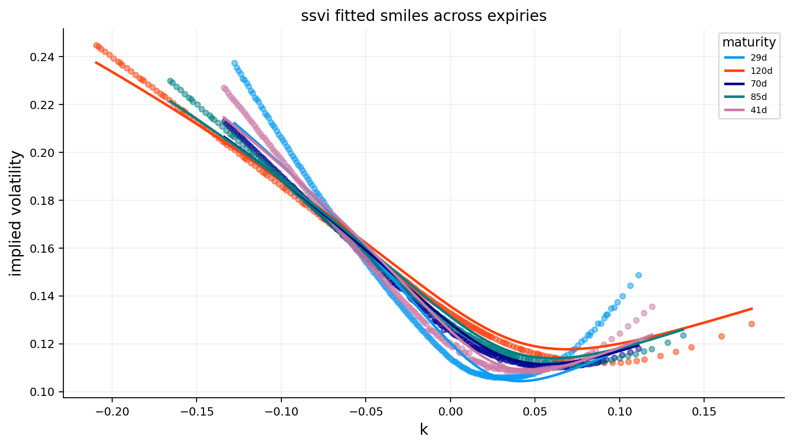
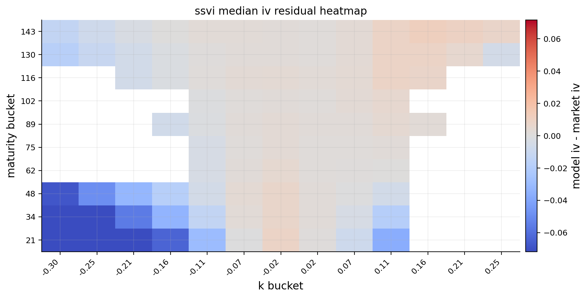
svi_ssvi = svi_diag[["expiry", "dte_days", "weighted_rmse_iv"]].rename(columns={"weighted_rmse_iv": "svi"}).merge(ssvi_by_expiry[["expiry", "weighted_rmse_iv"]].rename(columns={"weighted_rmse_iv": "ssvi"}), on="expiry", how="inner")
fig, ax = plt.subplots(figsize=(8.4, 4.4))
ax.plot(svi_ssvi["dte_days"], svi_ssvi["svi"], marker="o", lw=1.8, label="raw svi")
ax.plot(svi_ssvi["dte_days"], svi_ssvi["ssvi"], marker="o", lw=1.8, label="ssvi")
ax.set_title("raw svi versus ssvi error by expiry")
ax.set_xlabel("days to expiry")
ax.set_ylabel("weighted iv rmse")
ax.legend()
plt.tight_layout()
plt.show()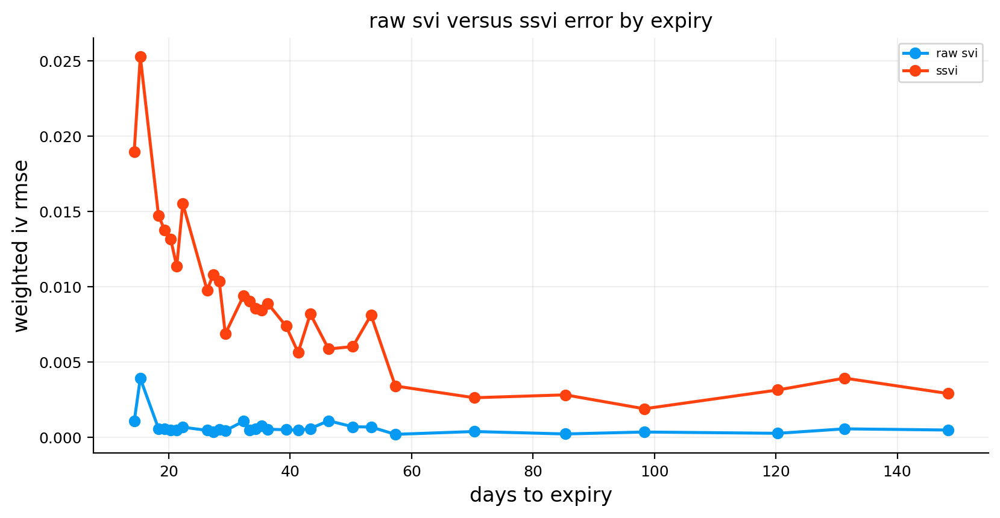
def sabr_iv_demo(f, k_strike, tau, alpha, beta, rho, nu):
k_strike = np.asarray(k_strike, dtype=float)
log_fk = np.log(np.clip(f / k_strike, 1e-12, None))
fk_beta = (f * k_strike) ** ((1.0 - beta) / 2.0)
z = (nu / max(alpha, 1e-12)) * fk_beta * log_fk
xz = np.log((np.sqrt(1.0 - 2.0 * rho * z + z * z) + z - rho) / (1.0 - rho))
z_xz = np.where(np.abs(z) < 1e-8, 1.0, z / xz)
log_adj = 1.0 + ((1.0 - beta) ** 2 / 24.0) * log_fk ** 2 + ((1.0 - beta) ** 4 / 1920.0) * log_fk ** 4
term = ((1.0 - beta) ** 2 / 24.0) * alpha ** 2 / np.maximum(fk_beta ** 2, 1e-12)
term += 0.25 * rho * beta * nu * alpha / np.maximum(fk_beta, 1e-12)
term += (2.0 - 3.0 * rho * rho) * nu * nu / 24.0
return np.maximum(alpha / np.maximum(fk_beta * log_adj, 1e-12) * z_xz * (1.0 + term * tau), 1e-5)
f_demo = 100.0
strike_demo = f_demo * np.exp(k_line)
fig, axes = plt.subplots(1, 3, figsize=(14.2, 4.2), sharey=True)
for rho_value in [-0.85, -0.40, 0.10]:
axes[0].plot(k_line, sabr_iv_demo(f_demo, strike_demo, tau_demo, 0.24, 1.0, rho_value, 0.75), lw=2.0, label=f"rho={rho_value:+.2f}")
for nu_value in [0.25, 0.75, 1.35]:
axes[1].plot(k_line, sabr_iv_demo(f_demo, strike_demo, tau_demo, 0.24, 1.0, -0.55, nu_value), lw=2.0, label=f"nu={nu_value:.2f}")
for beta_value in [1.0, 0.7, 0.5]:
axes[2].plot(k_line, sabr_iv_demo(f_demo, strike_demo, tau_demo, 0.24 * f_demo ** (1.0 - beta_value), beta_value, -0.55, 0.75), lw=2.0, label=f"beta={beta_value:.1f}")
axes[0].set_title("sabr rho and skew")
axes[1].set_title("sabr nu and curvature")
axes[2].set_title("fixed beta scenarios")
for ax in axes:
ax.set_xlabel("k")
ax.legend(fontsize=8)
axes[0].set_ylabel("implied volatility")
plt.tight_layout()
plt.show()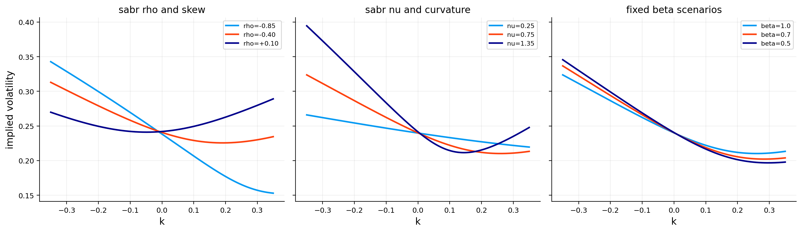
@njit
def sabr_iv_hagan(fwd, strike, tau, alpha, beta, rho, nu):
n = strike.size
out = np.empty(n, dtype=np.float64)
for i in range(n):
f = max(fwd[i], 1e-12)
k = max(strike[i], 1e-12)
t = max(tau[i], 1e-12)
a = max(alpha, 1e-12)
b = beta
r = min(max(rho, -0.999999), 0.999999)
v = max(nu, 1e-12)
log_fk = math.log(f / k)
if abs(log_fk) < 1e-7:
f_beta = f ** (1.0 - b)
term = ((1.0 - b) ** 2 / 24.0) * a * a / max(f_beta * f_beta, 1e-12)
term += 0.25 * r * b * v * a / max(f_beta, 1e-12)
term += (2.0 - 3.0 * r * r) * v * v / 24.0
out[i] = max(a / max(f_beta, 1e-12) * (1.0 + term * t), 1e-8)
else:
fk_beta = (f * k) ** ((1.0 - b) / 2.0)
z = (v / a) * fk_beta * log_fk
root = math.sqrt(max(1.0 - 2.0 * r * z + z * z, 1e-12))
xz = math.log(max((root + z - r) / (1.0 - r), 1e-12))
z_xz = 1.0 if abs(z) < 1e-8 or abs(xz) < 1e-10 else z / xz
log_adj = 1.0 + ((1.0 - b) ** 2 / 24.0) * log_fk * log_fk + ((1.0 - b) ** 4 / 1920.0) * log_fk ** 4
term = ((1.0 - b) ** 2 / 24.0) * a * a / max(fk_beta * fk_beta, 1e-12)
term += 0.25 * r * b * v * a / max(fk_beta, 1e-12)
term += (2.0 - 3.0 * r * r) * v * v / 24.0
out[i] = max((a / max(fk_beta * log_adj, 1e-12)) * z_xz * (1.0 + term * t), 1e-8)
return out
t0 = tic()
_ = sabr_iv_hagan(np.array([100.0, 100.0]), np.array([95.0, 105.0]), np.array([0.2, 0.2]), 0.22, 1.0, -0.5, 0.8)
sabr_compile_time = toc("compile sabr", t0, 2)def fit_sabr_slice(q, beta):
z = q.sort_values("strike").copy()
f = z["forward"].to_numpy(dtype=float)
k_strike = z["strike"].to_numpy(dtype=float)
tau = z["tau"].to_numpy(dtype=float)
y = z["iv_mid"].to_numpy(dtype=float)
eps = z["eps_iv"].to_numpy(dtype=float)
eps_med = float(np.nanmedian(eps[np.isfinite(eps) & (eps > 0)])) if np.isfinite(eps).any() else 0.02
eps = np.clip(eps, max(0.003, 0.25 * eps_med), 0.50)
root_wt = np.sqrt(z["weight"].to_numpy(dtype=float))
i0 = int(np.nanargmin(np.abs(z["k"].to_numpy(dtype=float))))
atm_iv = float(y[i0])
f_med = float(np.nanmedian(f))
alpha0 = max(atm_iv * f_med ** (1.0 - beta), 1e-4)
lo = np.array([1e-5, -0.999, 1e-4])
hi = np.array([max(1.0, 8.0 * alpha0), 0.999, 6.0])
def err(p):
iv = np.asarray(sabr_iv_hagan(f, k_strike, tau, p[0], beta, p[1], p[2]), dtype=float)
r = root_wt * (iv - y) / eps
return np.where(np.isfinite(r), r, 1e3)
starts = [np.array([alpha0, -0.55, 0.65]), np.array([0.80 * alpha0, -0.80, 1.20]), np.array([1.25 * alpha0, -0.25, 0.35]), np.array([alpha0, 0.05, 0.80])]
best = None
for p0 in starts:
t0 = tic()
res = optimize.least_squares(
err,
np.clip(p0, lo + 1e-8, hi - 1e-8),
bounds=(lo, hi),
loss="soft_l1",
f_scale=1.0,
max_nfev=160,
xtol=1e-8,
ftol=1e-8,
)
item = {"res": res, "cost": float(res.cost), "seconds": time.perf_counter() - t0}
if best is None or item["cost"] < best["cost"]:
best = item
return best["res"].x, best["res"].success, best["seconds"], best["res"].nfev, lo, hi
def fit_sabr(q, beta):
p_rows = []
f_rows = []
d_rows = []
for expiry, g in q.groupby("expiry", sort=True):
if len(g) < min_quotes_per_expiry:
continue
p, ok, seconds, nfev, lo, hi = fit_sabr_slice(g, beta)
iv_hat = sabr_iv_hagan(g["forward"].to_numpy(dtype=float), g["strike"].to_numpy(dtype=float), g["tau"].to_numpy(dtype=float), p[0], beta, p[1], p[2])
px_hat = black76_price(g["option_type"].to_numpy(), g["forward"], g["strike"], g["tau"], iv_hat, g["discount_factor"])
e_iv = iv_hat - g["iv_mid"].to_numpy(dtype=float)
wt = g["weight"].to_numpy(dtype=float)
d_rows.append({"beta": float(beta), "expiry": expiry, "dte_days": float(g["dte_days"].median()), "success": bool(ok), "n_quotes": int(len(g)), "weighted_rmse_iv": wrmse(e_iv, wt), "median_abs_iv_error": float(np.nanmedian(np.abs(e_iv))), "p90_abs_iv_error": float(np.nanquantile(np.abs(e_iv), 0.90)), "rho_bound_flag": bool(abs(p[1]) > 0.985), "nu_bound_flag": bool((p[2] - lo[2]) / (hi[2] - lo[2]) < 0.005 or (hi[2] - p[2]) / (hi[2] - lo[2]) < 0.005), "calibration_time": float(seconds), "objective_evaluations": int(nfev)})
p_rows.append({"beta": float(beta), "expiry": expiry, "dte_days": float(g["dte_days"].median()), "alpha": p[0], "rho": p[1], "nu": p[2], "success": bool(ok)})
z = g.copy()
z["model"] = "sabr"
z["beta"] = float(beta)
z["model_iv"] = iv_hat
z["model_price"] = np.asarray(px_hat, dtype=float)
z["iv_residual"] = z["model_iv"] - z["iv_mid"]
z["price_residual"] = z["model_price"] - z["mid"]
f_rows.append(z)
if not f_rows:
return pd.DataFrame(p_rows), q.head(0).copy(), pd.DataFrame(d_rows)
return pd.DataFrame(p_rows), pd.concat(f_rows, ignore_index=True), pd.DataFrame(d_rows)t0 = tic()
sabr_runs = []
for beta in [1.0, 0.7, 0.5]:
sabr_runs.append(fit_sabr(q0, beta))
sabr_params = pd.concat([x[0] for x in sabr_runs], ignore_index=True)
sabr_fit = pd.concat([x[1] for x in sabr_runs], ignore_index=True)
sabr_diag = pd.concat([x[2] for x in sabr_runs], ignore_index=True)
toc("calibrate sabr beta scenarios", t0, len(sabr_fit))
sabr_beta_compare = sabr_diag.groupby("beta").agg(
success_rate=("success", "mean"),
median_weighted_iv_rmse=("weighted_rmse_iv", "median"),
median_abs_iv_error=("median_abs_iv_error", "median"),
rho_bound_share=("rho_bound_flag", "mean"),
nu_bound_share=("nu_bound_flag", "mean"),
calibration_time=("calibration_time", "sum"),
).reset_index()
best_beta = float(sabr_beta_compare.sort_values(["median_weighted_iv_rmse", "rho_bound_share", "nu_bound_share"]).iloc[0]["beta"])
rmse_best = float(sabr_beta_compare["median_weighted_iv_rmse"].min())
rmse_beta_one = float(sabr_beta_compare.loc[sabr_beta_compare["beta"].eq(1.0), "median_weighted_iv_rmse"].iloc[0])
primary_beta = 1.0 if rmse_beta_one <= 1.08 * rmse_best else best_beta
sabr_fit_main = sabr_fit[sabr_fit["beta"].eq(primary_beta)].copy()
sabr_params_main = sabr_params[sabr_params["beta"].eq(primary_beta)].copy()
display(sabr_beta_compare)
print(f"primary_beta: {primary_beta:.1f}")| beta | success_rate | median_weighted_iv_rmse | median_abs_iv_error | rho_bound_share | nu_bound_share | calibration_time | |
|---|---|---|---|---|---|---|---|
| 0 | 0.500000 | 1.000000 | 0.002032 | 0.001344 | 0.000000 | 0.000000 | 0.468387 |
| 1 | 0.700000 | 1.000000 | 0.002160 | 0.001381 | 0.000000 | 0.000000 | 0.450547 |
| 2 | 1.000000 | 1.000000 | 0.002356 | 0.001437 | 0.000000 | 0.000000 | 0.873524 |
primary_beta: 0.5fig, ax = plt.subplots(figsize=(8.8, 5.0))
for expiry in selected_expiries:
g = sabr_fit_main[sabr_fit_main["expiry"].eq(expiry)].sort_values("k")
if g.empty:
continue
ax.scatter(g["k"], g["iv_mid"], s=18, alpha=0.50)
ax.plot(g["k"], g["model_iv"], lw=2.0, label=f"{g['dte_days'].median():.0f}d")
ax.set_title(f"sabr fitted smiles, beta={primary_beta:.1f}")
ax.set_xlabel("k")
ax.set_ylabel("implied volatility")
ax.legend(title="maturity")
plt.tight_layout()
plt.show()
rep_expiry = selected_expiries[0]
fig, ax = plt.subplots(figsize=(8.4, 4.4))
for beta in [1.0, 0.7, 0.5]:
g = sabr_fit[(sabr_fit["expiry"].eq(rep_expiry)) & (sabr_fit["beta"].eq(beta))].sort_values("k")
ax.plot(g["k"], g["model_iv"], lw=2.0, label=f"beta={beta:.1f}")
market = q0[q0["expiry"].eq(rep_expiry)].sort_values("k")
ax.scatter(market["k"], market["iv_mid"], s=18, alpha=0.55, label="market")
ax.set_title("sabr beta sensitivity for one expiry")
ax.set_xlabel("k")
ax.set_ylabel("implied volatility")
ax.legend()
plt.tight_layout()
plt.show()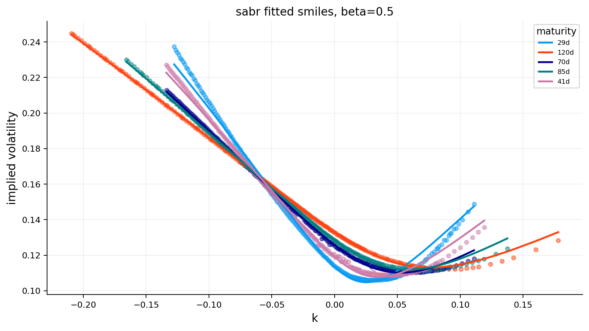
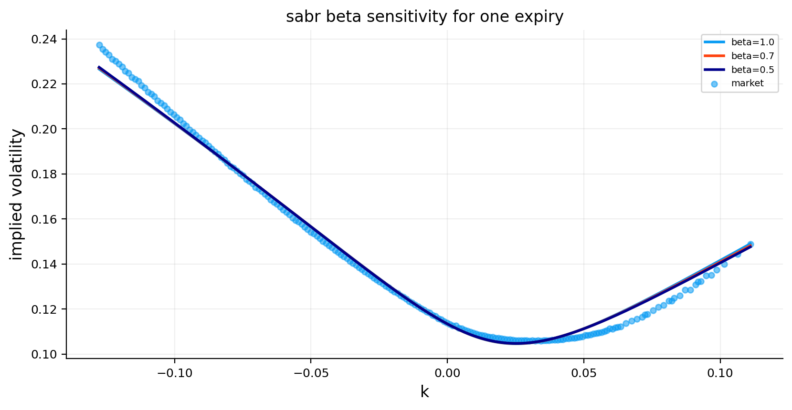
res_xy = svi_fit[["quote_id", "iv_residual"]].rename(columns={"iv_residual": "svi"}).merge(sabr_fit_main[["quote_id", "iv_residual"]].rename(columns={"iv_residual": "sabr"}), on="quote_id", how="inner")
fig, ax = plt.subplots(figsize=(7.2, 5.0))
ax.scatter(res_xy["svi"], res_xy["sabr"], s=18, alpha=0.72)
lim = float(np.nanquantile(np.abs(res_xy[["svi", "sabr"]].to_numpy()), 0.98))
ax.plot([-lim, lim], [-lim, lim], lw=1.0, alpha=0.70)
ax.axhline(0.0, lw=0.8, alpha=0.65)
ax.axvline(0.0, lw=0.8, alpha=0.65)
ax.set_title("sabr versus raw svi iv residuals")
ax.set_xlabel("svi residual")
ax.set_ylabel("sabr residual")
plt.tight_layout()
plt.show()
fig, axes = plt.subplots(1, 3, figsize=(13.2, 4.1), sharex=True)
for ax, col in zip(axes, ["alpha", "rho", "nu"]):
ax.plot(sabr_params_main["dte_days"], sabr_params_main[col], marker="o", lw=1.7)
ax.set_title(col)
ax.set_xlabel("days to expiry")
axes[0].set_ylabel("parameter value")
plt.tight_layout()
plt.show()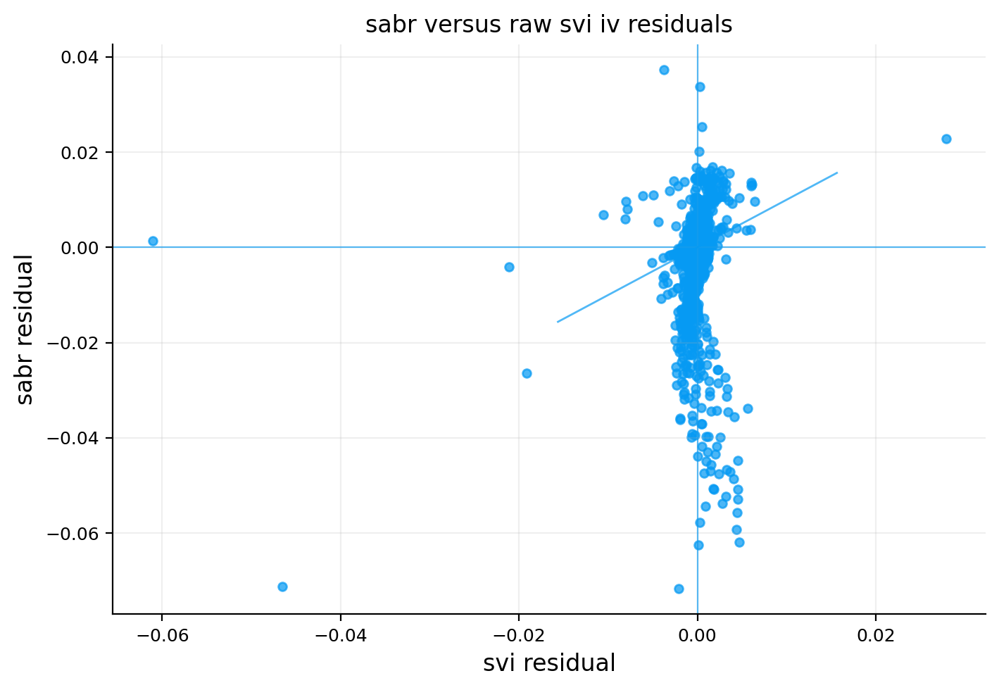
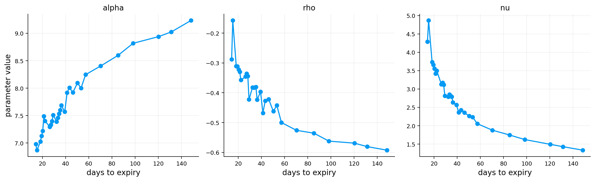
target_dtes_px = np.array([21.0, 30.0, 45.0, 60.0, 90.0, 120.0])
target_dtes_mc = np.array([21.0, 30.0, 45.0, 60.0, 90.0])
k_targets_px = np.array([-0.22, -0.17, -0.12, -0.08, -0.04, 0.00, 0.04, 0.08, 0.12])
k_targets_trade = np.array([-0.18, -0.13, -0.09, -0.05, -0.02, 0.02, 0.05, 0.09, 0.13, 0.18])
k_targets_anchor = np.array([-0.20, -0.12, -0.06, 0.00, 0.06, 0.12, 0.20])
def nearest_expiry_table(q, dte_targets, max_expiries):
base = q.groupby("expiry").agg(dte=("dte_days", "median"), n=("quote_id", "size")).reset_index()
base = base[base["n"] >= 7].copy()
chosen = []
used = set()
for target in dte_targets:
z = base[~base["expiry"].isin(used)].copy()
if z.empty:
break
z["dist"] = (z["dte"] - float(target)).abs()
row = z.sort_values(["dist", "n"], ascending=[True, False]).iloc[0]
chosen.append(row["expiry"])
used.add(row["expiry"])
if len(chosen) >= max_expiries:
break
return chosen
def bucket_ok(g, need_left=2, need_atm=2, need_right=2):
left = int((g["k"] <= -0.12).sum())
atm = int((g["k"].abs() <= 0.05).sum())
right = int((g["k"] >= 0.08).sum())
return left >= need_left and atm >= need_atm and right >= need_right
def choose_k_grid_quotes(q, dte_targets, k_targets, *, max_expiries=6, min_strikes=7, require_buckets=False, need_left=2, need_atm=2, need_right=2, min_vega_use=None, max_rel_spread_use=None, label="panel"):
pieces = []
vega_floor = min_vega if min_vega_use is None else float(min_vega_use)
spread_cap = max_rel_spread if max_rel_spread_use is None else float(max_rel_spread_use)
for expiry in nearest_expiry_table(q, dte_targets, max_expiries):
g0 = q[q["expiry"].eq(expiry)].copy().sort_values("k")
chosen = []
used = set()
for kt in k_targets:
g = g0[~g0["quote_id"].isin(used)].copy()
if g.empty:
continue
j = (g["k"] - float(kt)).abs().idxmin()
chosen.append(g.loc[j])
used.add(g.loc[j, "quote_id"])
if not chosen:
continue
s = pd.DataFrame(chosen).drop_duplicates("quote_id")
s = s[(s["relative_spread"] <= spread_cap) & (np.abs(s["vega"]) >= vega_floor) & (s["mid"] > 0)].copy()
if require_buckets and not bucket_ok(s, need_left, need_atm, need_right):
extras = []
for mask, need in [
(g0["k"] <= -0.12, need_left),
(g0["k"].abs() <= 0.05, need_atm),
(g0["k"] >= 0.08, need_right),
]:
pool = g0[mask & ~g0["quote_id"].isin(s["quote_id"])].copy()
pool = pool[(pool["relative_spread"] <= spread_cap) & (np.abs(pool["vega"]) >= vega_floor) & (pool["mid"] > 0)]
pool = pool.sort_values(["relative_spread", "k"])
extras.append(pool.head(max(0, need)))
add = pd.concat(extras, ignore_index=False) if extras else g0.head(0)
s = pd.concat([s, add], ignore_index=False).drop_duplicates("quote_id")
if len(s) >= min_strikes and ((not require_buckets) or bucket_ok(s, need_left, need_atm, need_right)):
pieces.append(s.sort_values("k"))
out = pd.concat(pieces, ignore_index=True) if pieces else q.head(0).copy()
out = out.sort_values(["expiry", "k"]).reset_index(drop=True)
out.attrs["label"] = label
return out
def panel_bucket_table(q, label):
rows = []
for expiry, g in q.groupby("expiry", sort=True):
rows.append({
"panel": label,
"expiry": expiry,
"dte_days": float(g["dte_days"].median()),
"quotes": int(len(g)),
"left_wing": int((g["k"] <= -0.12).sum()),
"near_atm": int((g["k"].abs() <= 0.05).sum()),
"right_wing": int((g["k"] >= 0.08).sum()),
"tail_count": int((g["k"].abs() >= 0.14).sum()),
"k_min": float(g["k"].min()),
"k_max": float(g["k"].max()),
})
return pd.DataFrame(rows)
q_px = choose_k_grid_quotes(q_model0, target_dtes_px, k_targets_px, max_expiries=6, min_strikes=7, require_buckets=True, need_left=1, need_atm=2, need_right=1, min_vega_use=min_vega_model, max_rel_spread_use=max_rel_spread_model, label="q_px")
if q_px.empty:
q_px = choose_k_grid_quotes(q_model0, target_dtes_px, k_targets_px, max_expiries=6, min_strikes=7, require_buckets=False, min_vega_use=min_vega_model, max_rel_spread_use=max_rel_spread_model, label="q_px")
q_mc = choose_k_grid_quotes(q_model0, target_dtes_mc, k_targets_px, max_expiries=5, min_strikes=7, require_buckets=True, need_left=1, need_atm=2, need_right=1, min_vega_use=min_vega_model, max_rel_spread_use=max_rel_spread_model, label="q_mc")
if q_mc.empty or q_mc.groupby("expiry").size().ge(7).sum() < 4:
q_mc = choose_k_grid_quotes(q_model0, target_dtes_mc, k_targets_px, max_expiries=5, min_strikes=7, require_buckets=False, min_vega_use=min_vega_model, max_rel_spread_use=max_rel_spread_model, label="q_mc")
if q_mc.empty:
q_mc = q_px.groupby("expiry", sort=True).head(9).reset_index(drop=True).copy()
q_benchmark = choose_k_grid_quotes(q_model0, target_dtes_px, k_targets_px, max_expiries=6, min_strikes=7, require_buckets=True, need_left=1, need_atm=2, need_right=1, min_vega_use=min_vega_model, max_rel_spread_use=max_rel_spread_model, label="q_benchmark")
if q_benchmark.empty:
q_benchmark = q_px.copy()
if len(q_mc) > 34:
q_mc = choose_k_grid_quotes(q_mc, target_dtes_mc, k_targets_px, max_expiries=5, min_strikes=7, require_buckets=False, min_vega_use=min_vega_model, max_rel_spread_use=max_rel_spread_model, label="q_mc").head(34).copy()
panel_summary = pd.concat([panel_bucket_table(q_px, "q_px"), panel_bucket_table(q_mc, "q_mc"), panel_bucket_table(q_benchmark, "q_benchmark")], ignore_index=True)
display(panel_summary)| panel | expiry | dte_days | quotes | left_wing | near_atm | right_wing | tail_count | k_min | k_max | |
|---|---|---|---|---|---|---|---|---|---|---|
| 0 | q_px | 2024-01-11 | 21.333333 | 9 | 2 | 3 | 1 | 2 | -0.216131 | 0.097527 |
| 1 | q_px | 2024-01-19 | 29.333333 | 9 | 3 | 3 | 1 | 0 | -0.127620 | 0.111046 |
| 2 | q_px | 2024-02-05 | 46.333333 | 9 | 2 | 3 | 1 | 2 | -0.219068 | 0.132330 |
| 3 | q_px | 2024-02-16 | 57.333333 | 9 | 3 | 3 | 1 | 0 | -0.124996 | 0.107672 |
| 4 | q_px | 2024-03-15 | 85.333333 | 9 | 3 | 3 | 2 | 2 | -0.165652 | 0.118920 |
| 5 | q_px | 2024-04-19 | 120.333333 | 9 | 3 | 3 | 2 | 2 | -0.209262 | 0.123882 |
| 6 | q_mc | 2024-01-11 | 21.333333 | 9 | 2 | 3 | 1 | 2 | -0.216131 | 0.097527 |
| 7 | q_mc | 2024-01-19 | 29.333333 | 9 | 3 | 3 | 1 | 0 | -0.127620 | 0.111046 |
| 8 | q_mc | 2024-02-05 | 46.333333 | 9 | 2 | 3 | 1 | 2 | -0.219068 | 0.132330 |
| 9 | q_mc | 2024-02-16 | 57.333333 | 7 | 3 | 3 | 0 | 0 | -0.124996 | 0.040032 |
| 10 | q_benchmark | 2024-01-11 | 21.333333 | 9 | 2 | 3 | 1 | 2 | -0.216131 | 0.097527 |
| 11 | q_benchmark | 2024-01-19 | 29.333333 | 9 | 3 | 3 | 1 | 0 | -0.127620 | 0.111046 |
| 12 | q_benchmark | 2024-02-05 | 46.333333 | 9 | 2 | 3 | 1 | 2 | -0.219068 | 0.132330 |
| 13 | q_benchmark | 2024-02-16 | 57.333333 | 9 | 3 | 3 | 1 | 0 | -0.124996 | 0.107672 |
| 14 | q_benchmark | 2024-03-15 | 85.333333 | 9 | 3 | 3 | 2 | 2 | -0.165652 | 0.118920 |
| 15 | q_benchmark | 2024-04-19 | 120.333333 | 9 | 3 | 3 | 2 | 2 | -0.209262 | 0.123882 |
seed = 1107
rng = np.random.default_rng(seed)
n_demo = 120_000
sigma_demo = 0.20
lam_demo = 1.2
mu_j_demo = -0.055
sig_j_demo = 0.12
tau_j_demo = 30.0 / ann_days
r_no_jump = (-0.5 * sigma_demo ** 2 * tau_j_demo) + sigma_demo * np.sqrt(tau_j_demo) * rng.normal(size=n_demo)
n_jump = rng.poisson(lam_demo * tau_j_demo, size=n_demo)
r_jump = r_no_jump + n_jump * mu_j_demo + np.sqrt(n_jump) * sig_j_demo * rng.normal(size=n_demo)
z_path = rng.normal(size=90)
jump_flags = rng.uniform(size=90) < (lam_demo / 252.0)
jump_sizes = np.where(jump_flags, mu_j_demo + sig_j_demo * rng.normal(size=90), 0.0)
diff_path = np.r_[0.0, np.cumsum((-0.5 * sigma_demo ** 2 / 252.0) + sigma_demo / np.sqrt(252.0) * z_path)]
jump_path = np.r_[0.0, np.cumsum((-0.5 * sigma_demo ** 2 / 252.0) + sigma_demo / np.sqrt(252.0) * z_path + jump_sizes)]
fig, axes = plt.subplots(1, 2, figsize=(12.4, 4.4))
axes[0].hist(r_no_jump, bins=120, density=True, alpha=0.55, label="diffusion only")
axes[0].hist(r_jump, bins=120, density=True, alpha=0.45, label="jump diffusion")
axes[0].set_title("terminal log-return distribution with jump risk")
axes[0].set_xlabel("one-month log return")
axes[0].set_ylabel("density")
axes[0].legend()
axes[1].plot(np.exp(diff_path), lw=2.0, label="same diffusion shocks")
axes[1].plot(np.exp(jump_path), lw=2.0, label="with jumps")
axes[1].scatter(np.where(jump_flags)[0] + 1, np.exp(jump_path[1:][jump_flags]), s=24, alpha=0.8)
axes[1].set_title("sample diffusion path versus jump path")
axes[1].set_xlabel("trading days")
axes[1].set_ylabel("relative level")
axes[1].legend()
plt.tight_layout()
plt.show()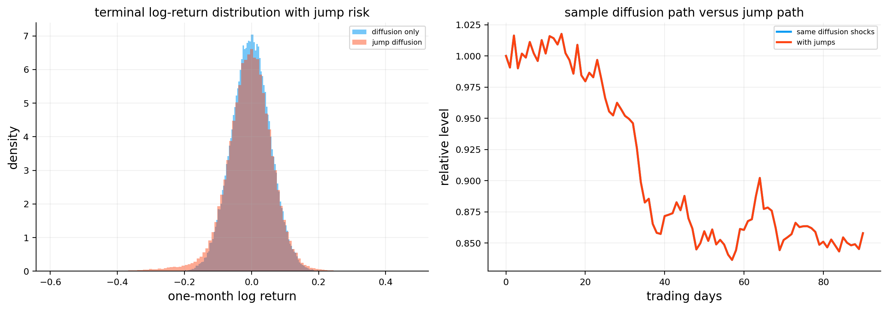
@njit
def n_cdf(x):
return 0.5 * (1.0 + math.erf(x / math.sqrt(2.0)))
@njit
def black_px_nb(is_call, df, f_mean, strike, var):
if var <= 1e-12:
payoff = max(f_mean - strike, 0.0) if is_call else max(strike - f_mean, 0.0)
return df * payoff
sig = math.sqrt(var)
d1 = (math.log(max(f_mean, 1e-300) / max(strike, 1e-300)) + 0.5 * var) / sig
d2 = d1 - sig
if is_call:
return df * (f_mean * n_cdf(d1) - strike * n_cdf(d2))
return df * (strike * n_cdf(-d2) - f_mean * n_cdf(-d1))
@njit
def merton_one(is_call, fwd, strike, tau, df, sigma, lam, mu_j, sig_j, max_jumps):
jump_var = sig_j * sig_j
kappa_j = math.exp(mu_j + 0.5 * jump_var) - 1.0
mean_n = max(lam * tau, 0.0)
wt = math.exp(-mean_n)
px = 0.0
for n in range(max_jumps + 1):
var = sigma * sigma * tau + n * jump_var
f_n = fwd * math.exp(-lam * kappa_j * tau + n * mu_j + 0.5 * n * jump_var)
px += wt * black_px_nb(is_call, df, f_n, strike, var)
if n < max_jumps:
wt *= mean_n / (n + 1.0)
return px
@njit(parallel=True)
def merton_px(is_call, fwd, strike, tau, df, sigma, lam, mu_j, sig_j, max_jumps):
n = strike.size
out = np.empty(n, dtype=np.float64)
for i in prange(n):
out[i] = merton_one(is_call[i], fwd[i], strike[i], tau[i], df[i], sigma, lam, mu_j, sig_j, max_jumps)
return out
t0 = tic()
_ = merton_px(np.array([True, False]), np.array([100.0, 100.0]), np.array([105.0, 95.0]), np.array([0.2, 0.2]), np.array([0.99, 0.99]), 0.2, 0.8, -0.05, 0.12, 30)
merton_compile_time = toc("compile merton", t0, 2)def iv_from_px(q, col):
sigma = implied_vol_newton_bisection_python(
q["option_type"].to_numpy(),
q[col].to_numpy(dtype=float),
q["forward"].to_numpy(dtype=float),
q["strike"].to_numpy(dtype=float),
q["tau"].to_numpy(dtype=float),
q["discount_factor"].to_numpy(dtype=float),
solver="lbr_lite",
return_status=False,
)
return np.asarray(sigma, dtype=float)
def fit_merton(q):
is_call = q["option_type"].eq("call").to_numpy(dtype=np.bool_)
f = q["forward"].to_numpy(dtype=float)
k_strike = q["strike"].to_numpy(dtype=float)
tau = q["tau"].to_numpy(dtype=float)
df = q["discount_factor"].to_numpy(dtype=float)
y = q["mid"].to_numpy(dtype=float)
eps = np.maximum(q["calib_scale_px"].to_numpy(dtype=float), 0.02)
root_wt = np.sqrt(q["weight"].to_numpy(dtype=float))
near_iv = pd.to_numeric(q.loc[q["k"].abs() <= 0.05, "iv_mid"], errors="coerce").replace([np.inf, -np.inf], np.nan).dropna()
all_iv = pd.to_numeric(q["iv_mid"], errors="coerce").replace([np.inf, -np.inf], np.nan).dropna()
atm_sigma = float(near_iv.median()) if len(near_iv) else float(all_iv.median()) if len(all_iv) else 0.20
lo = np.array([0.03, 0.00, -0.50, 0.01])
hi = np.array([1.20, 6.00, 0.25, 0.85])
def err(p):
px = merton_px(is_call, f, k_strike, tau, df, p[0], p[1], p[2], p[3], 45)
r = root_wt * (px - y) / eps
return np.where(np.isfinite(r), r, 1e3)
starts = [np.array([atm_sigma, 0.40, -0.04, 0.10]), np.array([0.85 * atm_sigma, 1.25, -0.08, 0.16]), np.array([1.10 * atm_sigma, 0.15, -0.02, 0.06]), np.array([0.70 * atm_sigma, 2.50, -0.12, 0.22])]
best = None
for p0 in starts:
t0 = tic()
res = optimize.least_squares(
err,
np.minimum(np.maximum(np.nan_to_num(p0, nan=0.5 * (lo + hi), posinf=hi - 1e-5, neginf=lo + 1e-5), lo + 1e-6), hi - 1e-6),
bounds=(lo, hi),
loss="soft_l1",
f_scale=1.0,
max_nfev=160,
xtol=1e-7,
ftol=1e-7,
)
item = {"res": res, "cost": float(res.cost), "seconds": time.perf_counter() - t0}
if best is None or item["cost"] < best["cost"]:
best = item
return best["res"].x, best["res"].success, best["seconds"], best["res"].nfev, lo, hi
t0 = tic()
p_merton, ok_merton, seconds_merton, nfev_merton, lo_merton, hi_merton = fit_merton(q_px)
toc("calibrate merton", t0, len(q_px))
merton_fit = q_px.copy()
merton_fit["model"] = "merton"
merton_fit["model_price"] = merton_px(
merton_fit["option_type"].eq("call").to_numpy(dtype=np.bool_),
merton_fit["forward"].to_numpy(dtype=float),
merton_fit["strike"].to_numpy(dtype=float),
merton_fit["tau"].to_numpy(dtype=float),
merton_fit["discount_factor"].to_numpy(dtype=float),
p_merton[0], p_merton[1], p_merton[2], p_merton[3], 60,
)
merton_fit["model_iv"] = iv_from_px(merton_fit, "model_price")
merton_fit["iv_residual"] = merton_fit["model_iv"] - merton_fit["iv_mid"]
merton_fit["price_residual"] = merton_fit["model_price"] - merton_fit["mid"]
merton_tail_count = int((merton_fit["k"].abs() >= 0.14).sum())
merton_tail_ok = merton_tail_count >= 8
merton_params = pd.DataFrame([{"sigma": p_merton[0], "lambda_jump": p_merton[1], "mu_jump": p_merton[2], "sigma_jump": p_merton[3], "success": bool(ok_merton), "calibration_time": float(seconds_merton), "objective_evaluations": int(nfev_merton), "parameter_at_bound": near_bound(p_merton, lo_merton, hi_merton)}])
tail_merton = merton_fit["k"].abs() >= 0.14
merton_diag = pd.DataFrame([{
"success": bool(ok_merton),
"n_quotes": int(len(merton_fit)),
"weighted_price_rmse": wrmse(merton_fit["price_residual"], merton_fit["weight"]),
"weighted_iv_rmse": wrmse(merton_fit["iv_residual"], merton_fit["weight"]),
"median_abs_iv_error": float(np.nanmedian(np.abs(merton_fit["iv_residual"]))),
"p90_abs_iv_error": float(np.nanquantile(np.abs(merton_fit["iv_residual"]), 0.90)),
"tail_count": merton_tail_count,
"tail_diagnostic_valid": bool(merton_tail_ok),
"tail_error": wrmse(merton_fit.loc[tail_merton, "iv_residual"], merton_fit.loc[tail_merton, "weight"]) if merton_tail_ok else np.nan,
"jump_intensity": p_merton[1],
"jump_mean": p_merton[2],
"jump_volatility": p_merton[3],
"parameter_at_bound": bool(merton_params.loc[0, "parameter_at_bound"]),
"calibration_time": float(seconds_merton),
"objective_evaluations": int(nfev_merton),
}])
display(merton_params)
display(merton_diag)| sigma | lambda_jump | mu_jump | sigma_jump | success | calibration_time | objective_evaluations | parameter_at_bound | |
|---|---|---|---|---|---|---|---|---|
| 0 | 0.099075 | 0.386026 | -0.146093 | 0.126411 | True | 0.051038 | 23 | False |
| success | n_quotes | weighted_price_rmse | weighted_iv_rmse | median_abs_iv_error | p90_abs_iv_error | tail_count | tail_diagnostic_valid | tail_error | jump_intensity | jump_mean | jump_volatility | parameter_at_bound | calibration_time | objective_evaluations | |
|---|---|---|---|---|---|---|---|---|---|---|---|---|---|---|---|
| 0 | True | 54 | 3.326638 | 0.009212 | 0.004419 | 0.032250 | 8 | True | 0.013282 | 0.386026 | -0.146093 | 0.126411 | False | 0.051038 | 23 |
atm_by_expiry = q0[np.abs(q0["k"]) <= 0.05].groupby("expiry")["iv_mid"].median()
black0 = merton_fit.copy()
black0["atm_iv"] = black0["expiry"].map(atm_by_expiry).fillna(q0["iv_mid"].median())
black0["black_price"] = black76_price(black0["option_type"].to_numpy(), black0["forward"], black0["strike"], black0["tau"], black0["atm_iv"], black0["discount_factor"])
black0["black_residual"] = black0["black_price"] - black0["mid"]
if merton_tail_ok:
tail_compare = pd.DataFrame([
{"model": "expiry atm black", "tail_weighted_price_rmse": wrmse(black0.loc[tail_merton, "black_residual"], black0.loc[tail_merton, "weight"])},
{"model": "merton", "tail_weighted_price_rmse": wrmse(merton_fit.loc[tail_merton, "price_residual"], merton_fit.loc[tail_merton, "weight"])},
])
else:
tail_compare = pd.DataFrame([{"model": "merton", "tail_count": merton_tail_count, "tail_diagnostic_valid": False}])
display(tail_compare)
plot_expiries_merton = merton_fit.groupby("expiry").size().loc[lambda s: s >= 5].index
fig, ax = plt.subplots(figsize=(8.6, 4.6))
for expiry in plot_expiries_merton[:4]:
g = merton_fit[merton_fit["expiry"].eq(expiry)].sort_values("k")
ax.scatter(g["k"], g["iv_mid"], s=18, alpha=0.50)
ax.plot(g["k"], g["model_iv"], lw=2.0, label=f"{g['dte_days'].median():.0f}d")
ax.set_title("merton jump-diffusion model iv")
ax.set_xlabel("k")
ax.set_ylabel("implied volatility")
ax.legend(title="maturity")
plt.tight_layout()
plt.show()| model | tail_weighted_price_rmse | |
|---|---|---|
| 0 | expiry atm black | 16.581337 |
| 1 | merton | 3.252410 |
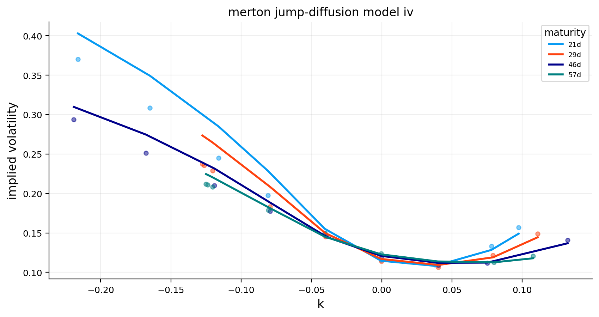
fig, axes = plt.subplots(1, 2, figsize=(12.2, 4.4))
if merton_tail_ok:
axes[0].scatter(black0["k"], black0["black_residual"], s=20, alpha=0.62, label="expiry atm black")
axes[0].scatter(merton_fit["k"], merton_fit["price_residual"], s=20, alpha=0.62, label="merton")
axes[0].axhline(0.0, lw=0.9, alpha=0.65)
axes[0].set_title("tail price residual comparison")
axes[0].set_xlabel("k")
axes[0].set_ylabel("model price - market mid")
axes[0].legend()
else:
axes[0].axis("off")
axes[0].table(cellText=tail_compare.fillna("").values, colLabels=tail_compare.columns, loc="center")
axes[0].set_title("jump tail diagnostic skipped")
x_jump = np.linspace(-0.45, 0.25, 300)
y_jump = norm.pdf(x_jump, loc=p_merton[2], scale=p_merton[3])
axes[1].plot(x_jump, y_jump, lw=2.0)
axes[1].axvline(p_merton[2], lw=1.0, alpha=0.70)
axes[1].set_title("calibrated jump-size distribution")
axes[1].set_xlabel("jump log return")
axes[1].set_ylabel("density")
plt.tight_layout()
plt.show()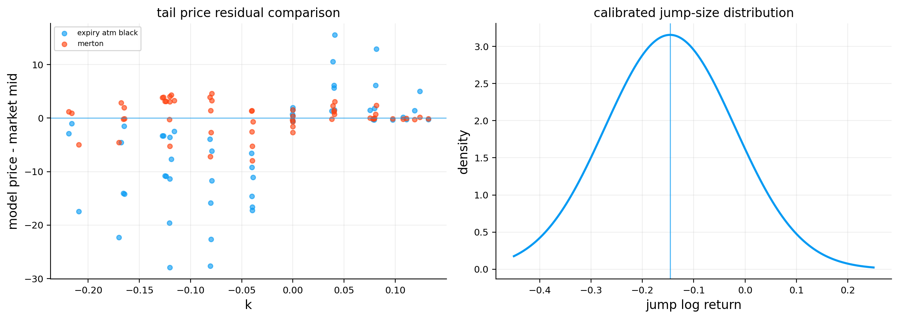
n_step_demo = 120
n_v_demo = 14
dt_demo = 1.0 / 252.0
t_demo = np.arange(n_step_demo + 1) * dt_demo
v_path = np.empty((n_step_demo + 1, n_v_demo))
v_path[0] = 0.20 ** 2
for i in range(n_step_demo):
v_prev = np.maximum(v_path[i], 0.0)
z_v = rng.normal(size=n_v_demo)
v_path[i + 1] = v_path[i] + 3.0 * (0.18 ** 2 - v_prev) * dt_demo + 0.55 * np.sqrt(v_prev * dt_demo) * z_v
rho_demo = -0.70
z1 = rng.normal(size=n_step_demo)
z2 = rho_demo * z1 + np.sqrt(1.0 - rho_demo ** 2) * rng.normal(size=n_step_demo)
v_single = np.empty(n_step_demo + 1)
log_f_single = np.empty(n_step_demo + 1)
v_single[0] = 0.20 ** 2
log_f_single[0] = 0.0
for i in range(n_step_demo):
vp = max(v_single[i], 0.0)
log_f_single[i + 1] = log_f_single[i] - 0.5 * vp * dt_demo + np.sqrt(vp * dt_demo) * z1[i]
v_single[i + 1] = v_single[i] + 3.0 * (0.18 ** 2 - vp) * dt_demo + 0.55 * np.sqrt(vp * dt_demo) * z2[i]
fig, axes = plt.subplots(1, 2, figsize=(12.2, 4.4))
axes[0].plot(t_demo * ann_days, np.sqrt(np.maximum(v_path, 0.0)), lw=1.4)
axes[0].axhline(0.18, lw=1.0, alpha=0.65)
axes[0].set_title("heston variance paths with mean reversion")
axes[0].set_xlabel("days")
axes[0].set_ylabel("instantaneous volatility")
axes[1].plot(t_demo * ann_days, np.exp(log_f_single), lw=2.0, label="forward path")
axes[1].plot(t_demo * ann_days, np.sqrt(np.maximum(v_single, 0.0)), lw=2.0, label="instantaneous vol")
axes[1].set_title("one correlated forward/variance path")
axes[1].set_xlabel("days")
axes[1].legend()
plt.tight_layout()
plt.show()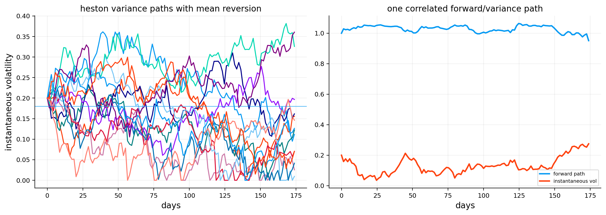
mc_paths_opt, mc_paths_final, mc_steps_per_year = 1024, 8192, 52
def shocks(n_path, n_step, salt):
n_half = max(int(n_path) // 2, 2)
r = np.random.default_rng(seed + salt)
z1 = r.normal(size=(n_half, n_step))
z2 = r.normal(size=(n_half, n_step))
return np.vstack([z1, -z1]).astype(np.float64), np.vstack([z2, -z2]).astype(np.float64)
n_step_mc = int(np.ceil(float(q_mc["tau"].max()) * mc_steps_per_year)) + 2
z_s_opt, z_v_opt = shocks(mc_paths_opt, n_step_mc, 31)
z_s_final, z_v_final = shocks(mc_paths_final, n_step_mc, 41)@njit(parallel=True)
def heston_px_mc(is_call, fwd, strike, tau, df, v0, kappa, theta, xi, rho, steps_per_year, z_s, z_v):
n_quote = strike.size
n_path = z_s.shape[0]
px = np.empty(n_quote, dtype=np.float64)
se = np.empty(n_quote, dtype=np.float64)
rho2 = math.sqrt(max(1.0 - rho * rho, 1e-12))
for i in prange(n_quote):
n_step = max(1, int(math.ceil(tau[i] * steps_per_year)))
dt = tau[i] / n_step
sqrt_dt = math.sqrt(dt)
s1 = 0.0
s2 = 0.0
for p in range(n_path):
log_f = math.log(max(fwd[i], 1e-300))
v = max(v0, 1e-12)
for j in range(n_step):
vp = max(v, 0.0)
dw_s = z_s[p, j]
dw_v = rho * z_s[p, j] + rho2 * z_v[p, j]
log_f += -0.5 * vp * dt + math.sqrt(vp) * sqrt_dt * dw_s
v = v + kappa * (theta - vp) * dt + xi * math.sqrt(vp) * sqrt_dt * dw_v
ft = math.exp(log_f)
payoff = max(ft - strike[i], 0.0) if is_call[i] else max(strike[i] - ft, 0.0)
s1 += payoff
s2 += payoff * payoff
mean = s1 / n_path
var = max(s2 / n_path - mean * mean, 0.0)
px[i] = df[i] * mean
se[i] = df[i] * math.sqrt(var / n_path)
return px, se
t0 = tic()
_ = heston_px_mc(np.array([True]), np.array([100.0]), np.array([100.0]), np.array([0.10]), np.array([0.99]), 0.04, 2.0, 0.04, 0.5, -0.6, mc_steps_per_year, z_s_opt[:8], z_v_opt[:8])
heston_compile_time = toc("compile heston mc", t0, 1)def fit_heston(q):
is_call = q["option_type"].eq("call").to_numpy(dtype=np.bool_)
f = q["forward"].to_numpy(dtype=float)
k_strike = q["strike"].to_numpy(dtype=float)
tau = q["tau"].to_numpy(dtype=float)
df = q["discount_factor"].to_numpy(dtype=float)
y = q["mid"].to_numpy(dtype=float)
eps = np.maximum(q["calib_scale_px"].to_numpy(dtype=float), 0.02)
root_wt = np.sqrt(q["weight"].to_numpy(dtype=float))
atm_vol = float(np.nanmedian(q.loc[q["k"].abs() <= 0.05, "iv_mid"]))
if not np.isfinite(atm_vol):
atm_vol = float(np.nanmedian(q["iv_mid"]))
atm_var = float(np.clip(atm_vol ** 2, 0.005, 0.25))
lo = np.array([0.0025, 0.15, 0.0025, 0.05, -0.95])
hi = np.array([0.2500, 8.00, 0.2500, 2.50, 0.30])
count = {"n": 0}
def err(p):
count["n"] += 1
px, _ = heston_px_mc(is_call, f, k_strike, tau, df, p[0], p[1], p[2], p[3], p[4], mc_steps_per_year, z_s_opt, z_v_opt)
r = root_wt * (px - y) / eps
return np.where(np.isfinite(r), r, 1e3)
starts = [np.array([atm_var, 2.0, atm_var, 0.55, -0.65])]
best = None
for p0 in starts:
t0 = tic()
res = optimize.least_squares(
err,
np.minimum(np.maximum(np.nan_to_num(p0, nan=0.5 * (lo + hi), posinf=hi - 1e-5, neginf=lo + 1e-5), lo + 1e-6), hi - 1e-6),
bounds=(lo, hi),
loss="soft_l1",
f_scale=1.0,
max_nfev=70,
xtol=2e-6,
ftol=2e-6,
)
item = {"res": res, "cost": float(res.cost), "seconds": time.perf_counter() - t0}
if best is None or item["cost"] < best["cost"]:
best = item
return best["res"].x, best["res"].success, best["seconds"], count["n"], lo, hit0 = tic()
p_heston, ok_heston, seconds_heston, evals_heston, lo_heston, hi_heston = fit_heston(q_mc)
toc("calibrate heston mc", t0, len(q_mc))
px_heston, se_heston = heston_px_mc(
q_mc["option_type"].eq("call").to_numpy(dtype=np.bool_),
q_mc["forward"].to_numpy(dtype=float),
q_mc["strike"].to_numpy(dtype=float),
q_mc["tau"].to_numpy(dtype=float),
q_mc["discount_factor"].to_numpy(dtype=float),
p_heston[0], p_heston[1], p_heston[2], p_heston[3], p_heston[4],
mc_steps_per_year, z_s_final, z_v_final,
)
heston_fit = q_mc.copy()
heston_fit["model"] = "heston"
heston_fit["model_price"] = px_heston
heston_fit["mc_standard_error"] = se_heston
heston_fit["model_iv"] = iv_from_px(heston_fit, "model_price")
heston_fit["iv_residual"] = heston_fit["model_iv"] - heston_fit["iv_mid"]
heston_fit["price_residual"] = heston_fit["model_price"] - heston_fit["mid"]
heston_params = pd.DataFrame([{"v0": p_heston[0], "kappa": p_heston[1], "theta": p_heston[2], "xi": p_heston[3], "rho": p_heston[4], "success": bool(ok_heston), "feller_ratio": float(2.0 * p_heston[1] * p_heston[2] / max(p_heston[3] ** 2, 1e-12)), "calibration_time": float(seconds_heston), "objective_evaluations": int(evals_heston), "parameter_at_bound": near_bound(p_heston, lo_heston, hi_heston)}])
heston_diag = pd.DataFrame([{
"success": bool(ok_heston),
"n_quotes": int(len(heston_fit)),
"weighted_price_rmse": wrmse(heston_fit["price_residual"], heston_fit["weight"]),
"weighted_iv_rmse": wrmse(heston_fit["iv_residual"], heston_fit["weight"]),
"median_abs_iv_error": float(np.nanmedian(np.abs(heston_fit["iv_residual"]))),
"p90_abs_iv_error": float(np.nanquantile(np.abs(heston_fit["iv_residual"]), 0.90)),
"median_mc_standard_error": float(np.nanmedian(heston_fit["mc_standard_error"])),
"feller_ratio": float(heston_params.loc[0, "feller_ratio"]),
"feller_warning": bool(heston_params.loc[0, "feller_ratio"] < 1.0),
"parameter_at_bound": bool(heston_params.loc[0, "parameter_at_bound"]),
"calibration_time": float(seconds_heston),
"objective_evaluations": int(evals_heston),
"pricing_time": np.nan,
}])
heston_mc_error = heston_fit[["quote_id", "expiry", "strike", "k", "dte_days", "model_price", "mc_standard_error", "price_residual"]].copy()
display(heston_params)
display(heston_diag)| v0 | kappa | theta | xi | rho | success | feller_ratio | calibration_time | objective_evaluations | parameter_at_bound | |
|---|---|---|---|---|---|---|---|---|---|---|
| 0 | 0.011693 | 1.980971 | 0.083590 | 1.249512 | -0.628617 | True | 0.212121 | 3.417353 | 177 | False |
| success | n_quotes | weighted_price_rmse | weighted_iv_rmse | median_abs_iv_error | p90_abs_iv_error | median_mc_standard_error | feller_ratio | feller_warning | parameter_at_bound | calibration_time | objective_evaluations | pricing_time | |
|---|---|---|---|---|---|---|---|---|---|---|---|---|---|
| 0 | True | 34 | 3.863250 | 0.014869 | 0.009626 | 0.039230 | 0.454690 | 0.212121 | True | False | 3.417353 | 177 | NaN |
paths_grid = np.array([512, 1024, 2048, 4096, 8192])
q_conv = heston_fit.iloc[[int(np.argmin(np.abs(heston_fit["k"].to_numpy(dtype=float))) )]].copy()
heston_conv = []
for n_path in paths_grid:
zc_s, zc_v = shocks(int(n_path), n_step_mc, int(500 + n_path))
px_c, se_c = heston_px_mc(
q_conv["option_type"].eq("call").to_numpy(dtype=np.bool_),
q_conv["forward"].to_numpy(dtype=float),
q_conv["strike"].to_numpy(dtype=float),
q_conv["tau"].to_numpy(dtype=float),
q_conv["discount_factor"].to_numpy(dtype=float),
p_heston[0], p_heston[1], p_heston[2], p_heston[3], p_heston[4],
mc_steps_per_year, zc_s, zc_v,
)
heston_conv.append({"paths": int(n_path), "price": float(px_c[0]), "mc_standard_error": float(se_c[0])})
heston_convergence = pd.DataFrame(heston_conv)
fig, ax1 = plt.subplots(figsize=(8.6, 4.4))
ax1.plot(heston_convergence["paths"], heston_convergence["price"], marker="o", lw=2.0)
ax1.set_xscale("log", base=2)
ax1.set_title("heston mc convergence on one benchmark quote")
ax1.set_xlabel("paths")
ax1.set_ylabel("model price")
ax2 = ax1.twinx()
ax2.plot(heston_convergence["paths"], heston_convergence["mc_standard_error"], marker="o", lw=1.7, alpha=0.75)
ax2.set_ylabel("mc standard error")
plt.tight_layout()
plt.show()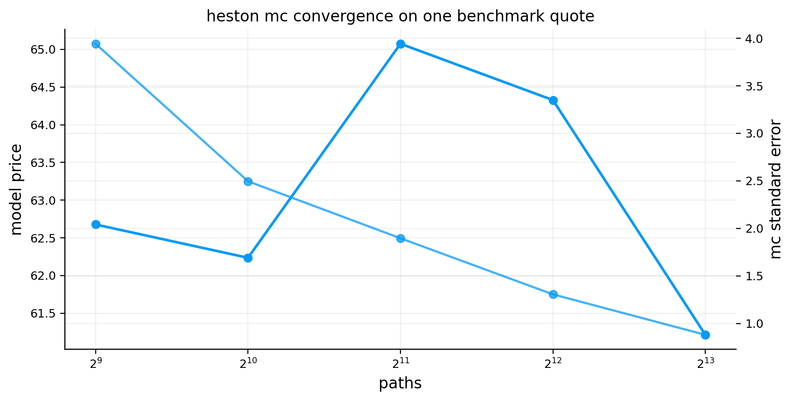
fig, ax = plt.subplots(figsize=(8.8, 4.8))
for expiry in heston_fit["expiry"].drop_duplicates().head(5):
g = heston_fit[heston_fit["expiry"].eq(expiry)].sort_values("k")
if len(g) < 3:
continue
ax.scatter(g["k"], g["iv_mid"], s=22, alpha=0.52)
ax.plot(g["k"], g["model_iv"], marker="o", lw=1.6, label=f"{g['dte_days'].median():.0f}d")
ax.set_title("heston simulation model iv")
ax.set_xlabel("k")
ax.set_ylabel("implied volatility")
ax.legend(title="maturity", fontsize=8)
plt.tight_layout()
plt.show()
z = heston_fit.copy()
z["k_bin"] = pd.cut(z["k"], np.linspace(-0.26, 0.26, 11))
z["dte_bin"] = pd.cut(z["dte_days"], np.linspace(21.0, 135.0, 8))
h = z.pivot_table(index="dte_bin", columns="k_bin", values="iv_residual", aggfunc="median", observed=False)
lim = float(np.nanquantile(np.abs(h.to_numpy(dtype=float)), 0.90)) if np.isfinite(h.to_numpy(dtype=float)).any() else 0.03
fig, ax = plt.subplots(figsize=(8.8, 4.6))
im = ax.imshow(h.to_numpy(dtype=float), origin="lower", aspect="auto", cmap="coolwarm", vmin=-lim, vmax=lim)
ax.set_title("heston residual heatmap")
ax.set_xlabel("k bucket")
ax.set_ylabel("maturity bucket")
ax.set_xticks(np.arange(h.shape[1]))
ax.set_xticklabels([f"{b.mid:.2f}" for b in h.columns], rotation=45, ha="right")
ax.set_yticks(np.arange(h.shape[0]))
ax.set_yticklabels([f"{b.mid:.0f}" for b in h.index])
fig.colorbar(im, ax=ax, pad=0.01, label="model iv - market iv")
plt.tight_layout()
plt.show()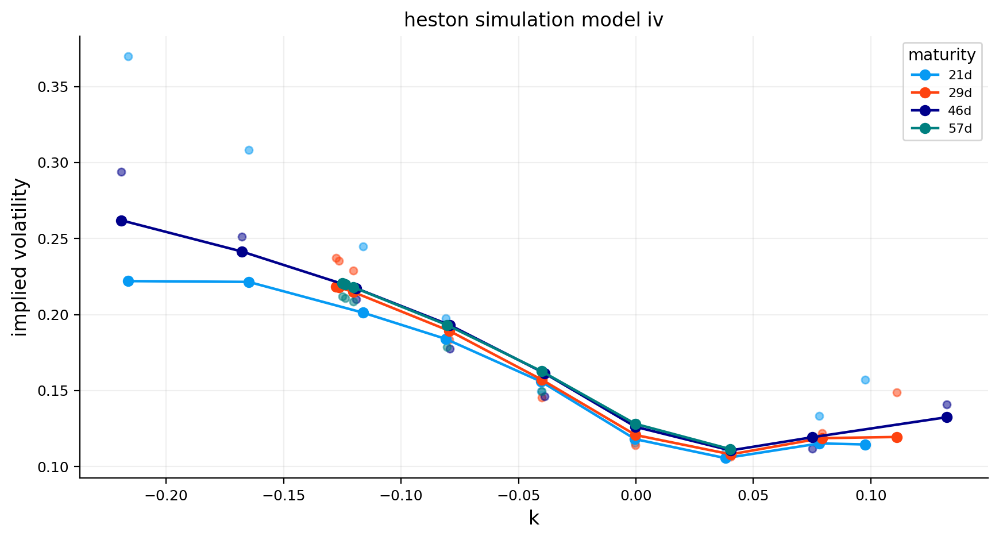
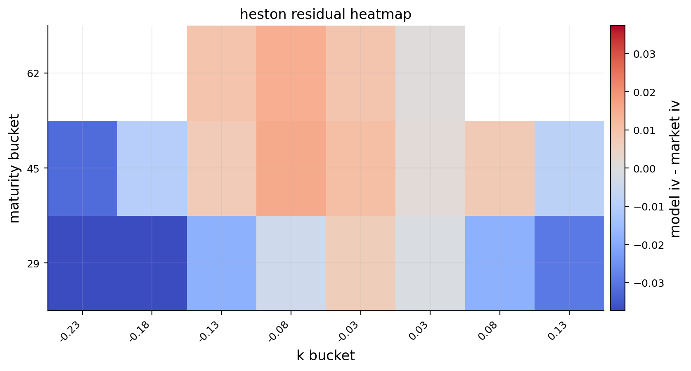
fig, axes = plt.subplots(1, 2, figsize=(11.6, 4.3))
axes[0].scatter(np.abs(heston_fit["price_residual"]), heston_fit["mc_standard_error"], s=24, alpha=0.75)
axes[0].set_title("heston mc error versus residual size")
axes[0].set_xlabel("absolute price residual")
axes[0].set_ylabel("mc standard error")
p_plot = heston_params[["v0", "kappa", "theta", "xi", "rho"]].iloc[0]
axes[1].bar(p_plot.index, p_plot.values, alpha=0.82)
axes[1].set_title("heston parameter diagnostic")
axes[1].tick_params(axis="x", rotation=45)
plt.tight_layout()
plt.show()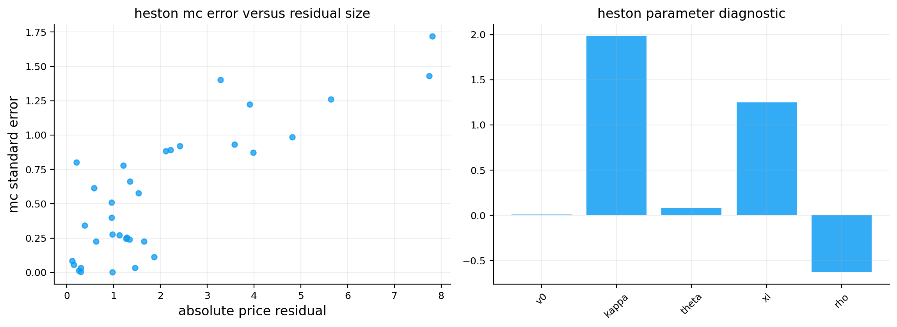
def bates_shocks(n_path, n_step, salt):
n_half = max(int(n_path) // 2, 2)
r = np.random.default_rng(seed + salt)
z1 = r.normal(size=(n_half, n_step))
z2 = r.normal(size=(n_half, n_step))
zj = r.normal(size=(n_half, n_step))
uj = r.uniform(size=(n_half, n_step))
return np.vstack([z1, -z1]).astype(np.float64), np.vstack([z2, -z2]).astype(np.float64), np.vstack([zj, -zj]).astype(np.float64), np.vstack([uj, uj]).astype(np.float64)
zb_s_opt, zb_v_opt, zb_j_opt, ub_j_opt = bates_shocks(mc_paths_opt, n_step_mc, 51)
zb_s_final, zb_v_final, zb_j_final, ub_j_final = bates_shocks(mc_paths_final, n_step_mc, 61)@njit(parallel=True)
def bates_px_mc(is_call, fwd, strike, tau, df, v0, kappa, theta, xi, rho, lam, mu_j, sig_j, steps_per_year, z_s, z_v, z_j, u_j):
n_quote = strike.size
n_path = z_s.shape[0]
px = np.empty(n_quote, dtype=np.float64)
se = np.empty(n_quote, dtype=np.float64)
rho2 = math.sqrt(max(1.0 - rho * rho, 1e-12))
kappa_j = math.exp(mu_j + 0.5 * sig_j * sig_j) - 1.0
for i in prange(n_quote):
n_step = max(1, int(math.ceil(tau[i] * steps_per_year)))
dt = tau[i] / n_step
sqrt_dt = math.sqrt(dt)
jump_prob = min(max(lam * dt, 0.0), 0.35)
s1 = 0.0
s2 = 0.0
for p in range(n_path):
log_f = math.log(max(fwd[i], 1e-300))
v = max(v0, 1e-12)
for j in range(n_step):
vp = max(v, 0.0)
dw_s = z_s[p, j]
dw_v = rho * z_s[p, j] + rho2 * z_v[p, j]
jump = 0.0
if u_j[p, j] < jump_prob:
jump = mu_j + sig_j * z_j[p, j]
log_f += (-0.5 * vp - lam * kappa_j) * dt + math.sqrt(vp) * sqrt_dt * dw_s + jump
v = v + kappa * (theta - vp) * dt + xi * math.sqrt(vp) * sqrt_dt * dw_v
ft = math.exp(log_f)
payoff = max(ft - strike[i], 0.0) if is_call[i] else max(strike[i] - ft, 0.0)
s1 += payoff
s2 += payoff * payoff
mean = s1 / n_path
var = max(s2 / n_path - mean * mean, 0.0)
px[i] = df[i] * mean
se[i] = df[i] * math.sqrt(var / n_path)
return px, se
t0 = tic()
_ = bates_px_mc(np.array([True]), np.array([100.0]), np.array([100.0]), np.array([0.10]), np.array([0.99]), 0.04, 2.0, 0.04, 0.5, -0.6, 0.5, -0.04, 0.10, mc_steps_per_year, zb_s_opt[:8], zb_v_opt[:8], zb_j_opt[:8], ub_j_opt[:8])
bates_compile_time = toc("compile bates mc", t0, 1)def fit_bates(q):
is_call = q["option_type"].eq("call").to_numpy(dtype=np.bool_)
f = q["forward"].to_numpy(dtype=float)
k_strike = q["strike"].to_numpy(dtype=float)
tau = q["tau"].to_numpy(dtype=float)
df = q["discount_factor"].to_numpy(dtype=float)
y = q["mid"].to_numpy(dtype=float)
eps = np.maximum(q["calib_scale_px"].to_numpy(dtype=float), 0.02)
root_wt = np.sqrt(q["weight"].to_numpy(dtype=float))
h0 = p_heston.copy()
m0 = p_merton.copy()
lo = np.array([0.0025, 0.15, 0.0025, 0.05, -0.95, 0.00, -0.50, 0.01])
hi = np.array([0.2500, 8.00, 0.2500, 2.50, 0.30, 6.00, 0.25, 0.85])
count = {"n": 0}
def err(p):
count["n"] += 1
px, _ = bates_px_mc(is_call, f, k_strike, tau, df, p[0], p[1], p[2], p[3], p[4], p[5], p[6], p[7], mc_steps_per_year, zb_s_opt, zb_v_opt, zb_j_opt, ub_j_opt)
r = root_wt * (px - y) / eps
reg = np.array([
0.15 * (p[0] - h0[0]) / max(h0[0], 0.02),
0.10 * (p[3] - h0[3]) / max(h0[3], 0.20),
0.12 * (p[5] - m0[1]) / max(abs(m0[1]) + 0.50, 0.50),
0.12 * (p[6] - m0[2]) / 0.25,
0.12 * (p[7] - m0[3]) / 0.25,
])
return np.r_[np.where(np.isfinite(r), r, 1e3), reg]
starts = [
np.r_[h0, m0[1], m0[2], m0[3]],
]
best = None
for p0 in starts:
t0 = tic()
res = optimize.least_squares(
err,
np.minimum(np.maximum(np.nan_to_num(p0, nan=0.5 * (lo + hi), posinf=hi - 1e-5, neginf=lo + 1e-5), lo + 1e-6), hi - 1e-6),
bounds=(lo, hi),
loss="soft_l1",
f_scale=1.0,
max_nfev=70,
xtol=2e-6,
ftol=2e-6,
)
item = {"res": res, "cost": float(res.cost), "seconds": time.perf_counter() - t0}
if best is None or item["cost"] < best["cost"]:
best = item
return best["res"].x, best["res"].success, best["seconds"], count["n"], lo, hit0 = tic()
p_bates, ok_bates, seconds_bates, evals_bates, lo_bates, hi_bates = fit_bates(q_mc)
toc("calibrate bates mc", t0, len(q_mc))
px_bates, se_bates = bates_px_mc(
q_mc["option_type"].eq("call").to_numpy(dtype=np.bool_),
q_mc["forward"].to_numpy(dtype=float),
q_mc["strike"].to_numpy(dtype=float),
q_mc["tau"].to_numpy(dtype=float),
q_mc["discount_factor"].to_numpy(dtype=float),
p_bates[0], p_bates[1], p_bates[2], p_bates[3], p_bates[4], p_bates[5], p_bates[6], p_bates[7],
mc_steps_per_year, zb_s_final, zb_v_final, zb_j_final, ub_j_final,
)
bates_fit = q_mc.copy()
bates_fit["model"] = "bates"
bates_fit["model_price"] = px_bates
bates_fit["mc_standard_error"] = se_bates
bates_fit["model_iv"] = iv_from_px(bates_fit, "model_price")
bates_fit["iv_residual"] = bates_fit["model_iv"] - bates_fit["iv_mid"]
bates_fit["price_residual"] = bates_fit["model_price"] - bates_fit["mid"]
bates_params = pd.DataFrame([{"v0": p_bates[0], "kappa": p_bates[1], "theta": p_bates[2], "xi": p_bates[3], "rho": p_bates[4], "lambda_jump": p_bates[5], "mu_jump": p_bates[6], "sigma_jump": p_bates[7], "success": bool(ok_bates), "calibration_time": float(seconds_bates), "objective_evaluations": int(evals_bates), "parameter_at_bound": near_bound(p_bates, lo_bates, hi_bates)}])
bates_diag = pd.DataFrame([{
"success": bool(ok_bates),
"n_quotes": int(len(bates_fit)),
"weighted_price_rmse": wrmse(bates_fit["price_residual"], bates_fit["weight"]),
"weighted_iv_rmse": wrmse(bates_fit["iv_residual"], bates_fit["weight"]),
"median_abs_iv_error": float(np.nanmedian(np.abs(bates_fit["iv_residual"]))),
"p90_abs_iv_error": float(np.nanquantile(np.abs(bates_fit["iv_residual"]), 0.90)),
"tail_count": int((bates_fit["k"].abs() >= 0.14).sum()),
"tail_diagnostic_valid": bool(int((bates_fit["k"].abs() >= 0.14).sum()) >= 8),
"tail_error": wrmse(bates_fit.loc[bates_fit["k"].abs() >= 0.14, "iv_residual"], bates_fit.loc[bates_fit["k"].abs() >= 0.14, "weight"]) if int((bates_fit["k"].abs() >= 0.14).sum()) >= 8 else np.nan,
"short_maturity_error": wrmse(bates_fit.loc[bates_fit["dte_days"] <= 45.0, "iv_residual"], bates_fit.loc[bates_fit["dte_days"] <= 45.0, "weight"]),
"median_mc_standard_error": float(np.nanmedian(bates_fit["mc_standard_error"])),
"parameter_at_bound": bool(bates_params.loc[0, "parameter_at_bound"]),
"calibration_time": float(seconds_bates),
"objective_evaluations": int(evals_bates),
}])
display(bates_params)
display(bates_diag)| v0 | kappa | theta | xi | rho | lambda_jump | mu_jump | sigma_jump | success | calibration_time | objective_evaluations | parameter_at_bound | |
|---|---|---|---|---|---|---|---|---|---|---|---|---|
| 0 | 0.010759 | 1.919762 | 0.055528 | 1.187255 | -0.570674 | 0.459225 | -0.039620 | 0.059029 | True | 3.707852 | 174 | False |
| success | n_quotes | weighted_price_rmse | weighted_iv_rmse | median_abs_iv_error | p90_abs_iv_error | tail_count | tail_diagnostic_valid | tail_error | short_maturity_error | median_mc_standard_error | parameter_at_bound | calibration_time | objective_evaluations | |
|---|---|---|---|---|---|---|---|---|---|---|---|---|---|---|
| 0 | True | 34 | 2.093534 | 0.009049 | 0.005343 | 0.021700 | 4 | False | NaN | 0.012655 | 0.474161 | False | 3.707852 | 174 |
paths_grid = np.array([512, 1024, 2048, 4096, 8192])
q_conv = bates_fit.iloc[[int(np.argmin(np.abs(bates_fit["k"].to_numpy(dtype=float))) )]].copy()
bates_conv = []
for n_path in paths_grid:
zc_s, zc_v, zc_j, uc_j = bates_shocks(int(n_path), n_step_mc, int(800 + n_path))
px_c, se_c = bates_px_mc(
q_conv["option_type"].eq("call").to_numpy(dtype=np.bool_),
q_conv["forward"].to_numpy(dtype=float),
q_conv["strike"].to_numpy(dtype=float),
q_conv["tau"].to_numpy(dtype=float),
q_conv["discount_factor"].to_numpy(dtype=float),
p_bates[0], p_bates[1], p_bates[2], p_bates[3], p_bates[4], p_bates[5], p_bates[6], p_bates[7],
mc_steps_per_year, zc_s, zc_v, zc_j, uc_j,
)
bates_conv.append({"paths": int(n_path), "price": float(px_c[0]), "mc_standard_error": float(se_c[0])})
bates_convergence = pd.DataFrame(bates_conv)
fig, ax1 = plt.subplots(figsize=(8.6, 4.4))
ax1.plot(bates_convergence["paths"], bates_convergence["price"], marker="o", lw=2.0)
ax1.set_xscale("log", base=2)
ax1.set_title("bates mc convergence on one benchmark quote")
ax1.set_xlabel("paths")
ax1.set_ylabel("model price")
ax2 = ax1.twinx()
ax2.plot(bates_convergence["paths"], bates_convergence["mc_standard_error"], marker="o", lw=1.7, alpha=0.75)
ax2.set_ylabel("mc standard error")
plt.tight_layout()
plt.show()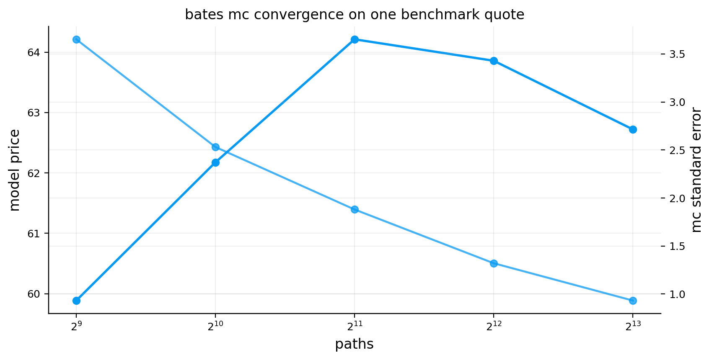
hb = heston_fit[["quote_id", "k", "dte_days", "iv_residual"]].rename(columns={"iv_residual": "heston"}).merge(bates_fit[["quote_id", "iv_residual"]].rename(columns={"iv_residual": "bates"}), on="quote_id", how="inner")
fig, axes = plt.subplots(1, 2, figsize=(12.4, 4.4))
axes[0].scatter(hb["k"], hb["heston"], s=24, alpha=0.65, label="heston")
axes[0].scatter(hb["k"], hb["bates"], s=24, alpha=0.65, label="bates")
axes[0].axhline(0.0, lw=0.9, alpha=0.65)
axes[0].set_title("bates versus heston residuals")
axes[0].set_xlabel("k")
axes[0].set_ylabel("model iv - market iv")
axes[0].legend()
improve = np.abs(hb["heston"]) - np.abs(hb["bates"])
axes[1].scatter(hb["k"], improve, c=hb["dte_days"], cmap="viridis", s=28, alpha=0.78)
axes[1].axhline(0.0, lw=0.9, alpha=0.65)
axes[1].set_title("bates tail improvement versus heston")
axes[1].set_xlabel("k")
axes[1].set_ylabel("absolute residual improvement")
plt.tight_layout()
plt.show()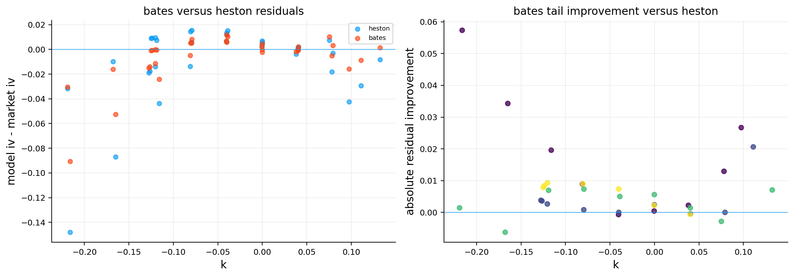
z = bates_fit.copy()
z["k_bin"] = pd.cut(z["k"], np.linspace(-0.26, 0.26, 11))
z["dte_bin"] = pd.cut(z["dte_days"], np.linspace(21.0, 135.0, 8))
h = z.pivot_table(index="dte_bin", columns="k_bin", values="iv_residual", aggfunc="median", observed=False)
lim = float(np.nanquantile(np.abs(h.to_numpy(dtype=float)), 0.90)) if np.isfinite(h.to_numpy(dtype=float)).any() else 0.03
fig, axes = plt.subplots(1, 2, figsize=(12.6, 4.5))
im = axes[0].imshow(h.to_numpy(dtype=float), origin="lower", aspect="auto", cmap="coolwarm", vmin=-lim, vmax=lim)
axes[0].set_title("bates residual heatmap")
axes[0].set_xlabel("k bucket")
axes[0].set_ylabel("maturity bucket")
axes[0].set_xticks(np.arange(h.shape[1]))
axes[0].set_xticklabels([f"{b.mid:.2f}" for b in h.columns], rotation=45, ha="right")
axes[0].set_yticks(np.arange(h.shape[0]))
axes[0].set_yticklabels([f"{b.mid:.0f}" for b in h.index])
fig.colorbar(im, ax=axes[0], pad=0.01)
p_jump = bates_params[["lambda_jump", "mu_jump", "sigma_jump"]].iloc[0]
axes[1].bar(p_jump.index, p_jump.values, alpha=0.82)
axes[1].set_title("bates jump parameter diagnostic")
axes[1].tick_params(axis="x", rotation=45)
plt.tight_layout()
plt.show()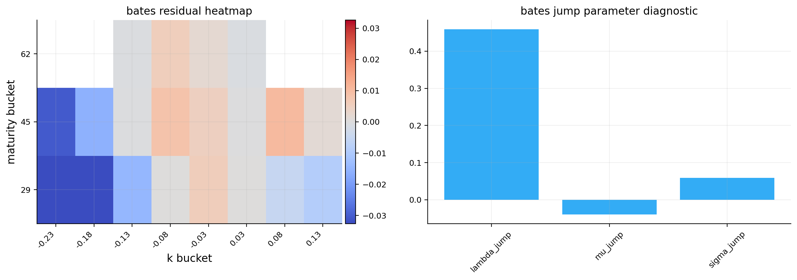
def svi_iv_at(q, p_table):
vals = []
for _, row in q.iterrows():
p = p_table[p_table["expiry"].eq(row["expiry"])]
if p.empty:
vals.append(np.nan)
else:
pp = p.iloc[0]
vals.append(float(svi_w(np.array([row["k"]], dtype=float), pp["a"], pp["b"], pp["rho"], pp["m"], pp["sigma"])[0]))
return np.sqrt(np.maximum(np.asarray(vals, dtype=float), 1e-12) / q["tau"].to_numpy(dtype=float))
def ssvi_iv_at(q, p_frame, theta_table):
x = q.merge(theta_table[["expiry", "theta_ssvi"]], on="expiry", how="left")
p = p_frame.iloc[0]
w = ssvi_w(x["k"].to_numpy(dtype=float), x["theta_ssvi"].to_numpy(dtype=float), p["rho"], p["eta"], p["gamma"])
return np.sqrt(np.maximum(w, 1e-12) / x["tau"].to_numpy(dtype=float))
def sabr_iv_at(q, p_table, beta):
vals = np.full(len(q), np.nan, dtype=float)
for expiry, g in q.groupby("expiry"):
p = p_table[p_table["expiry"].eq(expiry)]
if p.empty:
continue
pp = p.iloc[0]
loc = q.index.get_indexer(g.index)
vals[loc] = sabr_iv_hagan(g["forward"].to_numpy(dtype=float), g["strike"].to_numpy(dtype=float), g["tau"].to_numpy(dtype=float), pp["alpha"], beta, pp["rho"], pp["nu"])
return vals
def fit_row(model, q, target):
wt = q["weight"] if "weight" in q.columns else pd.Series(1.0, index=q.index)
e_px = q["model_price"] - q["mid"] if "model_price" in q.columns else pd.Series(np.nan, index=q.index)
e_iv = q["model_iv"] - q["iv_mid"] if "model_iv" in q.columns else pd.Series(np.nan, index=q.index)
tail = q["k"].abs() >= 0.14
tail_count = int(tail.sum())
return {
"model": model,
"target_type": target,
"n_quotes": int(len(q)),
"weighted_price_rmse": wrmse(e_px, wt),
"weighted_iv_rmse": wrmse(e_iv, wt),
"median_abs_iv_error": float(np.nanmedian(np.abs(e_iv))),
"p90_abs_iv_error": float(np.nanquantile(np.abs(e_iv), 0.90)),
"tail_count": tail_count,
"tail_error": wrmse(e_iv[tail], wt[tail]) if tail_count >= 8 else np.nan,
}
def eval_all_models(q):
out = []
z = q.copy()
z["model_iv"] = svi_iv_at(z, svi_params)
z["model_price"] = black76_price(z["option_type"].to_numpy(), z["forward"], z["strike"], z["tau"], z["model_iv"], z["discount_factor"])
out.append(("svi", z.copy(), "total variance"))
z = q.copy()
z["model_iv"] = ssvi_iv_at(z, ssvi_params, theta_curve)
z["model_price"] = black76_price(z["option_type"].to_numpy(), z["forward"], z["strike"], z["tau"], z["model_iv"], z["discount_factor"])
out.append(("ssvi", z.copy(), "total variance"))
z = q.copy()
z["model_iv"] = sabr_iv_at(z, sabr_params_main, primary_beta)
z["model_price"] = black76_price(z["option_type"].to_numpy(), z["forward"], z["strike"], z["tau"], z["model_iv"], z["discount_factor"])
out.append(("sabr", z.copy(), "implied volatility"))
z = q.copy()
z["model_price"] = merton_px(z["option_type"].eq("call").to_numpy(dtype=np.bool_), z["forward"].to_numpy(dtype=float), z["strike"].to_numpy(dtype=float), z["tau"].to_numpy(dtype=float), z["discount_factor"].to_numpy(dtype=float), p_merton[0], p_merton[1], p_merton[2], p_merton[3], 60)
z["model_iv"] = iv_from_px(z, "model_price")
out.append(("merton", z.copy(), "price"))
z = q.copy()
px, se = heston_px_mc(z["option_type"].eq("call").to_numpy(dtype=np.bool_), z["forward"].to_numpy(dtype=float), z["strike"].to_numpy(dtype=float), z["tau"].to_numpy(dtype=float), z["discount_factor"].to_numpy(dtype=float), p_heston[0], p_heston[1], p_heston[2], p_heston[3], p_heston[4], mc_steps_per_year, z_s_final, z_v_final)
z["model_price"] = px
z["mc_standard_error"] = se
z["model_iv"] = iv_from_px(z, "model_price")
out.append(("heston", z.copy(), "simulation price"))
z = q.copy()
px, se = bates_px_mc(z["option_type"].eq("call").to_numpy(dtype=np.bool_), z["forward"].to_numpy(dtype=float), z["strike"].to_numpy(dtype=float), z["tau"].to_numpy(dtype=float), z["discount_factor"].to_numpy(dtype=float), p_bates[0], p_bates[1], p_bates[2], p_bates[3], p_bates[4], p_bates[5], p_bates[6], p_bates[7], mc_steps_per_year, zb_s_final, zb_v_final, zb_j_final, ub_j_final)
z["model_price"] = px
z["mc_standard_error"] = se
z["model_iv"] = iv_from_px(z, "model_price")
out.append(("bates", z.copy(), "simulation price"))
return out
own_panel_fit = pd.DataFrame([
fit_row("svi", svi_fit, "total variance"),
fit_row("ssvi", ssvi_fit, "total variance"),
fit_row("sabr", sabr_fit_main, "implied volatility"),
fit_row("merton", merton_fit, "price"),
fit_row("heston", heston_fit, "simulation price"),
fit_row("bates", bates_fit, "simulation price"),
])
benchmark_fits = eval_all_models(q_benchmark)
benchmark_fit = pd.concat([fit.assign(model=name) for name, fit, target in benchmark_fits], ignore_index=True)
common_benchmark_fit = pd.DataFrame([fit_row(name, fit, target) for name, fit, target in benchmark_fits]).rename(columns={"n_quotes": "benchmark_quotes"})
common_benchmark_fit = common_benchmark_fit.merge(speed_summary[["model", "calibration_time"]] if "speed_summary" in globals() else pd.DataFrame(columns=["model", "calibration_time"]), on="model", how="left")
model_comparison = common_benchmark_fit.copy()
display(own_panel_fit)
display(common_benchmark_fit)| model | target_type | n_quotes | weighted_price_rmse | weighted_iv_rmse | median_abs_iv_error | p90_abs_iv_error | tail_count | tail_error | |
|---|---|---|---|---|---|---|---|---|---|
| 0 | svi | total variance | 3873 | 0.263015 | 0.000763 | 0.000343 | 0.001022 | 428 | 0.001495 |
| 1 | ssvi | total variance | 3873 | 2.433024 | 0.008318 | 0.003846 | 0.016519 | 428 | 0.029566 |
| 2 | sabr | implied volatility | 3873 | 0.490227 | 0.002502 | 0.000990 | 0.007092 | 428 | 0.008707 |
| 3 | merton | price | 54 | 3.326638 | 0.009212 | 0.004419 | 0.032250 | 8 | 0.013282 |
| 4 | heston | simulation price | 34 | 3.863250 | 0.014869 | 0.009626 | 0.039230 | 4 | NaN |
| 5 | bates | simulation price | 34 | 2.093534 | 0.009049 | 0.005343 | 0.021700 | 4 | NaN |
| model | target_type | benchmark_quotes | weighted_price_rmse | weighted_iv_rmse | median_abs_iv_error | p90_abs_iv_error | tail_count | tail_error | calibration_time | |
|---|---|---|---|---|---|---|---|---|---|---|
| 0 | svi | total variance | 54 | 0.185691 | 0.000824 | 0.000542 | 0.001183 | 8 | 0.000860 | NaN |
| 1 | ssvi | total variance | 54 | 2.274493 | 0.008057 | 0.005736 | 0.027053 | 8 | 0.019424 | NaN |
| 2 | sabr | implied volatility | 54 | 0.365040 | 0.002710 | 0.001111 | 0.010382 | 8 | 0.006495 | NaN |
| 3 | merton | price | 54 | 3.326638 | 0.009212 | 0.004419 | 0.032250 | 8 | 0.013282 | NaN |
| 4 | heston | simulation price | 54 | 7.489972 | 0.014368 | 0.013268 | 0.026449 | 8 | 0.028539 | NaN |
| 5 | bates | simulation price | 54 | 2.885128 | 0.007572 | 0.005872 | 0.015908 | 8 | 0.016230 | NaN |
speed_summary = pd.DataFrame([
{"model": "svi", "compile_warmup_time": svi_compile_time, "calibration_time": float(svi_diag["calibration_time"].sum()), "objective_evaluations": int(svi_diag["objective_evaluations"].fillna(0).sum()), "quotes_per_second": len(svi_fit) / max(float(svi_diag["calibration_time"].sum()), 1e-9)},
{"model": "ssvi", "compile_warmup_time": ssvi_compile_time, "calibration_time": float(ssvi_diag.loc[0, "calibration_time"]), "objective_evaluations": int(ssvi_diag.loc[0, "objective_evaluations"]), "quotes_per_second": len(ssvi_fit) / max(float(ssvi_diag.loc[0, "calibration_time"]), 1e-9)},
{"model": "sabr", "compile_warmup_time": sabr_compile_time, "calibration_time": float(sabr_diag[sabr_diag["beta"].eq(primary_beta)]["calibration_time"].sum()), "objective_evaluations": int(sabr_diag[sabr_diag["beta"].eq(primary_beta)]["objective_evaluations"].sum()), "quotes_per_second": len(sabr_fit_main) / max(float(sabr_diag[sabr_diag["beta"].eq(primary_beta)]["calibration_time"].sum()), 1e-9)},
{"model": "merton", "compile_warmup_time": merton_compile_time, "calibration_time": float(merton_diag.loc[0, "calibration_time"]), "objective_evaluations": int(merton_diag.loc[0, "objective_evaluations"]), "quotes_per_second": len(merton_fit) / max(float(merton_diag.loc[0, "calibration_time"]), 1e-9)},
{"model": "heston", "compile_warmup_time": heston_compile_time, "calibration_time": float(heston_diag.loc[0, "calibration_time"]), "objective_evaluations": int(heston_diag.loc[0, "objective_evaluations"]), "quotes_per_second": len(heston_fit) / max(float(heston_diag.loc[0, "calibration_time"]), 1e-9)},
{"model": "bates", "compile_warmup_time": bates_compile_time, "calibration_time": float(bates_diag.loc[0, "calibration_time"]), "objective_evaluations": int(bates_diag.loc[0, "objective_evaluations"]), "quotes_per_second": len(bates_fit) / max(float(bates_diag.loc[0, "calibration_time"]), 1e-9)},
])
display(speed_summary)
model_comparison = common_benchmark_fit.drop(columns=["calibration_time"], errors="ignore").merge(speed_summary[["model", "calibration_time"]], on="model", how="left")| model | compile_warmup_time | calibration_time | objective_evaluations | quotes_per_second | |
|---|---|---|---|---|---|
| 0 | svi | 7.915055 | 7.637519 | 3024 | 507.101815 |
| 1 | ssvi | 0.648623 | 0.056061 | 9 | 69,085.706954 |
| 2 | sabr | 1.633890 | 0.468387 | 339 | 8,268.794535 |
| 3 | merton | 3.336702 | 0.051038 | 23 | 1,058.043482 |
| 4 | heston | 3.486851 | 3.417353 | 177 | 9.949221 |
| 5 | bates | 3.498584 | 3.707852 | 174 | 9.169731 |
model_state = pd.DataFrame([
{"model": "svi", "success": bool(svi_diag["success"].mean() > 0.85), "bound_warning": bool(svi_diag["parameter_at_bound"].mean() > 0.25), "suspicious_parameter_flag": bool(svi_diag["wing_warning"].mean() > 0.10), "mc_warning": False, "reason": "slice fits"},
{"model": "ssvi", "success": bool(ssvi_diag.loc[0, "success"]), "bound_warning": bool(ssvi_diag.loc[0, "parameter_at_bound"]), "suspicious_parameter_flag": bool(ssvi_diag.loc[0, "weighted_rmse_iv"] > 1.75 * model_comparison.loc[model_comparison["model"].eq("svi"), "weighted_iv_rmse"].iloc[0]), "mc_warning": False, "reason": "global surface discipline"},
{"model": "sabr", "success": bool(sabr_diag[sabr_diag["beta"].eq(primary_beta)]["success"].mean() > 0.85), "bound_warning": bool(sabr_diag[sabr_diag["beta"].eq(primary_beta)][["rho_bound_flag", "nu_bound_flag"]].mean().max() > 0.30), "suspicious_parameter_flag": False, "mc_warning": False, "reason": f"beta {primary_beta:.1f}"},
{"model": "merton", "success": bool(merton_diag.loc[0, "success"]), "bound_warning": bool(merton_params.loc[0, "parameter_at_bound"]), "suspicious_parameter_flag": bool(merton_params.loc[0, "lambda_jump"] > 5.0), "mc_warning": False, "reason": "diagnostic only"},
{"model": "heston", "success": bool(heston_diag.loc[0, "success"]), "bound_warning": bool(heston_params.loc[0, "parameter_at_bound"]), "suspicious_parameter_flag": bool(heston_diag.loc[0, "feller_warning"]), "mc_warning": bool(heston_diag.loc[0, "median_mc_standard_error"] > np.nanmedian(heston_fit["eps_px"])), "reason": "simulation price fit"},
{"model": "bates", "success": bool(bates_diag.loc[0, "success"]), "bound_warning": bool(bates_params.loc[0, "parameter_at_bound"]), "suspicious_parameter_flag": bool(bates_params.loc[0, "lambda_jump"] > 5.5), "mc_warning": bool(bates_diag.loc[0, "median_mc_standard_error"] > np.nanmedian(bates_fit["eps_px"])), "reason": "diagnostic only"},
])
display(model_state)| model | success | bound_warning | suspicious_parameter_flag | mc_warning | reason | |
|---|---|---|---|---|---|---|
| 0 | svi | True | False | False | False | slice fits |
| 1 | ssvi | True | False | True | False | global surface discipline |
| 2 | sabr | True | False | False | False | beta 0.5 |
| 3 | merton | True | False | False | False | diagnostic only |
| 4 | heston | True | False | True | True | simulation price fit |
| 5 | bates | True | False | False | True | diagnostic only |
fit_iv = pd.concat([
svi_fit[["quote_id", "k", "dte_days", "model_iv"]].assign(model="svi"),
ssvi_fit[["quote_id", "k", "dte_days", "model_iv"]].assign(model="ssvi"),
sabr_fit_main[["quote_id", "k", "dte_days", "model_iv"]].assign(model="sabr"),
], ignore_index=True)
wide_iv = fit_iv.pivot_table(index="quote_id", columns="model", values="model_iv")
wide_iv["model_iv_std"] = wide_iv.std(axis=1)
uncertainty_summary = pd.DataFrame([{
"median_quote_iv_uncertainty": float(np.nanmedian(q0["eps_iv"])),
"median_quote_price_uncertainty": float(np.nanmedian(q0["eps_px"])),
"median_cross_model_iv_disagreement": float(np.nanmedian(wide_iv["model_iv_std"])),
"median_heston_mc_standard_error": float(np.nanmedian(heston_fit["mc_standard_error"])),
"median_bates_mc_standard_error": float(np.nanmedian(bates_fit["mc_standard_error"])),
"bootstrap_price_uncertainty": np.nan,
}])
display(uncertainty_summary)| median_quote_iv_uncertainty | median_quote_price_uncertainty | median_cross_model_iv_disagreement | median_heston_mc_standard_error | median_bates_mc_standard_error | bootstrap_price_uncertainty | |
|---|---|---|---|---|---|---|
| 0 | 0.002500 | 0.995061 | 0.002620 | 0.454690 | 0.474161 | NaN |
svi_err = float(model_comparison.loc[model_comparison["model"].eq("svi"), "weighted_iv_rmse"].iloc[0])
ssvi_err = float(model_comparison.loc[model_comparison["model"].eq("ssvi"), "weighted_iv_rmse"].iloc[0])
sabr_err = float(model_comparison.loc[model_comparison["model"].eq("sabr"), "weighted_iv_rmse"].iloc[0])
heston_err = float(model_comparison.loc[model_comparison["model"].eq("heston"), "weighted_iv_rmse"].iloc[0])
sabr_diag_main = sabr_diag[sabr_diag["beta"].eq(primary_beta)].copy()
sabr_success_rate = float(sabr_diag_main["success"].mean())
rho_bound_share = float(sabr_diag_main["rho_bound_flag"].mean())
nu_bound_share = float(sabr_diag_main["nu_bound_flag"].mean())
ssvi_ok_for_trade = bool((ssvi_err <= 0.004) or (ssvi_err <= 3.0 * sabr_err))
sabr_ok_for_trade = bool((sabr_err <= 0.0025) and (sabr_success_rate > 0.85) and (rho_bound_share < 0.20) and (nu_bound_share < 0.20))
sabr_in_signal = bool((sabr_success_rate > 0.85) and (rho_bound_share < 0.20) and (nu_bound_share < 0.20))
heston_ok_for_trade = bool(
heston_diag.loc[0, "success"]
and heston_err <= 0.0060
and not bool(heston_params.loc[0, "parameter_at_bound"])
and float(heston_fit["mc_standard_error"].median()) < 0.50 * float(np.nanmedian(np.abs(heston_fit["price_residual"])))
)
model_decision = pd.DataFrame([
{"model": "svi", "signal_decision": "candidate", "reason": "holdout signal core"},
{"model": "ssvi", "signal_decision": "candidate" if ssvi_ok_for_trade else "diagnostic", "reason": "surface discipline model"},
{"model": "sabr", "signal_decision": "candidate" if sabr_ok_for_trade else "diagnostic" if not sabr_in_signal else "candidate with fit warning", "reason": f"abs err={sabr_err:.4f}, success={sabr_success_rate:.2f}"},
{"model": "heston", "signal_decision": "candidate" if heston_ok_for_trade else "diagnostic", "reason": "mc se, bounds, and residual checks"},
{"model": "merton", "signal_decision": "no signal", "reason": "diagnostic jump bridge only"},
{"model": "bates", "signal_decision": "no signal", "reason": "diagnostic stochastic-vol jump model only"},
])
display(model_decision)| model | signal_decision | reason | |
|---|---|---|---|
| 0 | svi | candidate | holdout signal core |
| 1 | ssvi | candidate | surface discipline model |
| 2 | sabr | candidate with fit warning | abs err=0.0027, success=1.00 |
| 3 | heston | diagnostic | mc se, bounds, and residual checks |
| 4 | merton | no signal | diagnostic jump bridge only |
| 5 | bates | no signal | diagnostic stochastic-vol jump model only |
plot_q = model_comparison.copy()
if "calibration_time" not in plot_q.columns:
plot_q = plot_q.merge(speed_summary[["model", "calibration_time"]], on="model", how="left")
else:
time_map = speed_summary.set_index("model")["calibration_time"]
plot_q["calibration_time"] = plot_q["calibration_time"].fillna(plot_q["model"].map(time_map))
fig, axes = plt.subplots(1, 3, figsize=(14.2, 4.2))
axes[0].bar(plot_q["model"], plot_q["weighted_iv_rmse"], alpha=0.82)
axes[0].set_title("weighted iv error by model")
axes[0].set_ylabel("weighted iv rmse")
axes[0].tick_params(axis="x", rotation=45)
axes[1].bar(plot_q["model"], plot_q["calibration_time"], alpha=0.82)
axes[1].set_title("calibration time by model")
axes[1].set_ylabel("seconds")
axes[1].tick_params(axis="x", rotation=45)
axes[2].scatter(plot_q["calibration_time"], plot_q["weighted_iv_rmse"], s=54, alpha=0.82)
for _, row in plot_q.iterrows():
axes[2].annotate(row["model"], (row["calibration_time"], row["weighted_iv_rmse"]), fontsize=8)
axes[2].set_title("error versus runtime")
axes[2].set_xlabel("calibration seconds")
axes[2].set_ylabel("weighted iv rmse")
plt.tight_layout()
plt.show()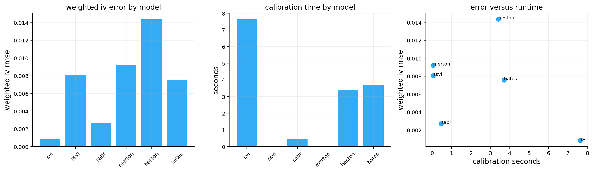
z = fit_iv.merge(wide_iv[["model_iv_std"]], left_on="quote_id", right_index=True, how="left")
z["k_bin"] = pd.cut(z["k"], np.linspace(-max_abs_k, max_abs_k, 15))
z["dte_bin"] = pd.cut(z["dte_days"], np.linspace(min_dte, max_dte, 11))
h = z.drop_duplicates("quote_id").pivot_table(index="dte_bin", columns="k_bin", values="model_iv_std", aggfunc="median", observed=False)
fig, ax = plt.subplots(figsize=(9.8, 4.8))
im = ax.imshow(h.to_numpy(dtype=float), origin="lower", aspect="auto", cmap="magma")
ax.set_title("cross-model iv disagreement heatmap")
ax.set_xlabel("k bucket")
ax.set_ylabel("maturity bucket")
ax.set_xticks(np.arange(h.shape[1]))
ax.set_xticklabels([f"{b.mid:.2f}" for b in h.columns], rotation=45, ha="right")
ax.set_yticks(np.arange(h.shape[0]))
ax.set_yticklabels([f"{b.mid:.0f}" for b in h.index])
fig.colorbar(im, ax=ax, pad=0.01, label="median iv std")
plt.tight_layout()
plt.show()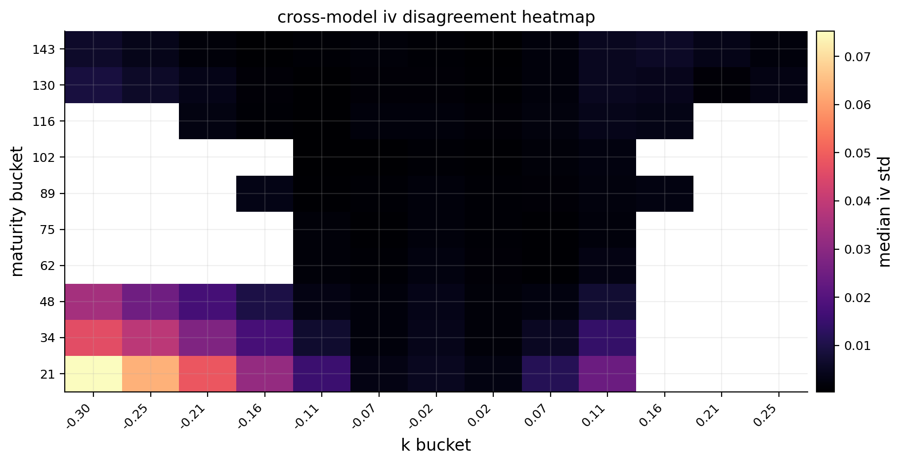
def holdout_split(q):
q_anchor = choose_k_grid_quotes(q, target_dtes_px, k_targets_px, max_expiries=6, min_strikes=8, require_buckets=False, label="anchor")
if q_anchor.empty or q_anchor.groupby("expiry").size().ge(min_quotes_per_expiry).sum() < 3:
q_anchor = choose_k_grid_quotes(q, target_dtes_px, k_targets_anchor, max_expiries=6, min_strikes=6, require_buckets=False, label="anchor")
rest = q[~q["quote_id"].isin(q_anchor["quote_id"])].copy()
q_holdout = choose_k_grid_quotes(rest, target_dtes_px, k_targets_trade, max_expiries=6, min_strikes=5, require_buckets=False, label="holdout")
if q_holdout.empty:
keep = q_anchor["quote_id"].unique()
q_holdout = q[~q["quote_id"].isin(keep)].sort_values(["expiry", "relative_spread", "k"]).groupby("expiry", sort=True).head(6).reset_index(drop=True)
return q_anchor.reset_index(drop=True), q_holdout.reset_index(drop=True)
q_anchor0, q_trade = holdout_split(q0)
signal_svi_params, _, signal_svi_diag = fit_svi(q_anchor0)
p_signal_ssvi, theta_signal, ok_signal_ssvi, _, _, _, _ = fit_ssvi(q_anchor0)
signal_ssvi_params = pd.DataFrame([{"rho": p_signal_ssvi[0], "eta": p_signal_ssvi[1], "gamma": p_signal_ssvi[2]}])
signal_sabr_params, _, signal_sabr_diag = fit_sabr(q_anchor0, primary_beta)
q_trade["trade_id"] = np.arange(len(q_trade), dtype=int)
fair_values = q_trade[["trade_id", "quote_id", "date", "expiry", "option_type", "strike", "k", "dte_days", "forward", "discount_factor", "tau", "mid", "bid", "ask", "iv_mid", "delta", "vega", "half_spread", "expected_exit_half_spread", "eps_px", "eps_iv", "calib_scale_px", "weight", "relative_spread", "contract_id"]].copy()
fair_values["svi_iv"] = svi_iv_at(q_trade, signal_svi_params)
fair_values["svi_price"] = black76_price(fair_values["option_type"].to_numpy(), fair_values["forward"], fair_values["strike"], fair_values["tau"], fair_values["svi_iv"], fair_values["discount_factor"])
if ssvi_ok_for_trade:
fair_values["ssvi_iv"] = ssvi_iv_at(q_trade, signal_ssvi_params, theta_signal)
fair_values["ssvi_price"] = black76_price(fair_values["option_type"].to_numpy(), fair_values["forward"], fair_values["strike"], fair_values["tau"], fair_values["ssvi_iv"], fair_values["discount_factor"])
if sabr_in_signal:
fair_values["sabr_iv"] = sabr_iv_at(q_trade, signal_sabr_params, primary_beta)
fair_values["sabr_price"] = black76_price(fair_values["option_type"].to_numpy(), fair_values["forward"], fair_values["strike"], fair_values["tau"], fair_values["sabr_iv"], fair_values["discount_factor"])
if heston_ok_for_trade:
px_h, se_h = heston_px_mc(q_trade["option_type"].eq("call").to_numpy(dtype=np.bool_), q_trade["forward"].to_numpy(dtype=float), q_trade["strike"].to_numpy(dtype=float), q_trade["tau"].to_numpy(dtype=float), q_trade["discount_factor"].to_numpy(dtype=float), p_heston[0], p_heston[1], p_heston[2], p_heston[3], p_heston[4], mc_steps_per_year, z_s_final, z_v_final)
fair_values["heston_price"] = px_h
fair_values["heston_mc_standard_error"] = se_h
fair_values["heston_iv"] = iv_from_px(fair_values.rename(columns={"heston_price": "model_price"}), "model_price")
display(pd.DataFrame([{"anchor_quotes": len(q_anchor0), "holdout_quotes_scored": len(q_trade), "anchor_expiries": q_anchor0["expiry"].nunique(), "holdout_expiries": q_trade["expiry"].nunique()}]))| anchor_quotes | holdout_quotes_scored | anchor_expiries | holdout_expiries | |
|---|---|---|---|---|
| 0 | 54 | 60 | 6 | 6 |
models_for_trade = ["svi"]
if sabr_in_signal:
models_for_trade.append("sabr")
if ssvi_ok_for_trade:
models_for_trade.append("ssvi")
if heston_ok_for_trade:
models_for_trade.append("heston")
err_map = model_comparison.set_index("model")["weighted_iv_rmse"].to_dict()
model_wt = {name: 1.0 / max(err_map.get(name, svi_err), 1e-4) ** 2 for name in models_for_trade}
wt_sum = sum(model_wt.values())
for name in model_wt:
model_wt[name] /= max(wt_sum, 1e-12)
if "svi" in model_wt and model_wt["svi"] > 0.70:
extra = model_wt["svi"] - 0.70
model_wt["svi"] = 0.70
receivers = [m for m in model_wt if m != "svi"]
recv_sum = sum(model_wt[m] for m in receivers)
for m in receivers:
model_wt[m] += extra * model_wt[m] / max(recv_sum, 1e-12)
if "ssvi" in model_wt and model_wt["ssvi"] > 0.20:
extra = model_wt["ssvi"] - 0.20
model_wt["ssvi"] = 0.20
receivers = [m for m in model_wt if m != "ssvi"]
recv_sum = sum(model_wt[m] for m in receivers)
for m in receivers:
model_wt[m] += extra * model_wt[m] / max(recv_sum, 1e-12)
if "sabr" in model_wt and model_wt["sabr"] < 0.20 and len(model_wt) > 1:
need = 0.20 - model_wt["sabr"]
donors = sorted([m for m in model_wt if m != "sabr"], key=lambda m: model_wt[m], reverse=True)
for m in donors:
take = min(need, max(0.0, model_wt[m] - 0.02))
model_wt[m] -= take
model_wt["sabr"] += take
need -= take
if need <= 1e-12:
break
wt_sum = sum(model_wt.values())
for name in model_wt:
model_wt[name] /= max(wt_sum, 1e-12)
px_cols = [f"{name}_price" for name in models_for_trade if f"{name}_price" in fair_values.columns]
iv_cols = [f"{name}_iv" for name in models_for_trade if f"{name}_iv" in fair_values.columns]
fair_values["ensemble_price"] = 0.0
fair_values["ensemble_iv"] = 0.0
for name in models_for_trade:
if f"{name}_price" in fair_values.columns:
fair_values["ensemble_price"] += model_wt[name] * fair_values[f"{name}_price"]
if f"{name}_iv" in fair_values.columns:
fair_values["ensemble_iv"] += model_wt[name] * fair_values[f"{name}_iv"]
fair_values["model_spread"] = fair_values[px_cols].std(axis=1).fillna(0.0)
fair_values["mc_error"] = fair_values["heston_mc_standard_error"] if "heston_mc_standard_error" in fair_values.columns else 0.0
display(pd.DataFrame({"model": list(model_wt.keys()), "ensemble_weight": list(model_wt.values())}))| model | ensemble_weight | |
|---|---|---|
| 0 | svi | 0.700000 |
| 1 | sabr | 0.269513 |
| 2 | ssvi | 0.030487 |
bootstrap_runs = 2
def bootstrap_px(q_base, q_use):
rows = []
for run in range(bootstrap_runs):
b = q_base.copy()
b["iv_mid"] = np.clip(b["iv_mid"].to_numpy(dtype=float) + rng.normal(size=len(b)) * b["eps_iv"].to_numpy(dtype=float), 0.03, 2.50)
b["total_var"] = b["iv_mid"] ** 2 * b["tau"]
try:
p_svi, _, _ = fit_svi(b)
temp = q_use[["trade_id", "option_type", "forward", "strike", "tau", "discount_factor"]].copy()
temp["svi_iv"] = svi_iv_at(q_use, p_svi)
temp["svi_price"] = black76_price(temp["option_type"].to_numpy(), temp["forward"], temp["strike"], temp["tau"], temp["svi_iv"], temp["discount_factor"])
px = model_wt.get("svi", 0.0) * temp["svi_price"].to_numpy(dtype=float)
used = model_wt.get("svi", 0.0)
if ssvi_ok_for_trade:
p, th, _, _, _, _, _ = fit_ssvi(b)
pf = pd.DataFrame([{"rho": p[0], "eta": p[1], "gamma": p[2]}])
temp["ssvi_iv"] = ssvi_iv_at(q_use, pf, th)
temp["ssvi_price"] = black76_price(temp["option_type"].to_numpy(), temp["forward"], temp["strike"], temp["tau"], temp["ssvi_iv"], temp["discount_factor"])
px += model_wt.get("ssvi", 0.0) * temp["ssvi_price"].to_numpy(dtype=float)
used += model_wt.get("ssvi", 0.0)
if sabr_in_signal:
p_sabr, _, _ = fit_sabr(b, primary_beta)
temp["sabr_iv"] = sabr_iv_at(q_use, p_sabr, primary_beta)
temp["sabr_price"] = black76_price(temp["option_type"].to_numpy(), temp["forward"], temp["strike"], temp["tau"], temp["sabr_iv"], temp["discount_factor"])
px += model_wt.get("sabr", 0.0) * temp["sabr_price"].to_numpy(dtype=float)
used += model_wt.get("sabr", 0.0)
temp["bootstrap_price"] = px / max(used, 1e-12)
temp["run"] = run
rows.append(temp[["trade_id", "run", "bootstrap_price"]])
except Exception:
rows.append(pd.DataFrame({"trade_id": q_use["trade_id"], "run": run, "bootstrap_price": np.nan}))
return pd.concat(rows, ignore_index=True)
boot_px = bootstrap_px(q_anchor0, q_trade)
boot_sig = boot_px.groupby("trade_id")["bootstrap_price"].std().rename("fit_error").reset_index()
fair_values = fair_values.merge(boot_sig, on="trade_id", how="left")
fit_err_med = float(np.nanmedian(fair_values["fit_error"])) if fair_values["fit_error"].notna().any() else 0.0
fair_values["fit_error"] = fair_values["fit_error"].fillna(fit_err_med).clip(lower=0.0)
uncertainty_summary.loc[0, "bootstrap_price_uncertainty"] = float(np.nanmedian(fair_values["fit_error"]))
display(uncertainty_summary)| median_quote_iv_uncertainty | median_quote_price_uncertainty | median_cross_model_iv_disagreement | median_heston_mc_standard_error | median_bates_mc_standard_error | bootstrap_price_uncertainty | |
|---|---|---|---|---|---|---|
| 0 | 0.002500 | 0.995061 | 0.002620 | 0.454690 | 0.474161 | 0.283468 |
fair_values["price_residual"] = fair_values["ensemble_price"] - fair_values["mid"]
fair_values["iv_residual"] = fair_values["ensemble_iv"] - fair_values["iv_mid"]
fair_values["spread_residual"] = fair_values["price_residual"] / fair_values["half_spread"].replace(0, np.nan)
fair_values["hedge_buffer"] = 0.0001 * np.abs(fair_values["delta"].fillna(0.0)) * fair_values["forward"] + 0.10 * fair_values["half_spread"]
fair_values["total_error"] = (
1.0 * fair_values["half_spread"]
+ 0.5 * fair_values["expected_exit_half_spread"].fillna(fair_values["half_spread"])
+ 0.5 * fair_values["model_spread"].fillna(0.0)
+ 0.5 * fair_values["fit_error"].fillna(0.0)
+ 0.5 * fair_values["mc_error"].fillna(0.0)
+ fair_values["hedge_buffer"].fillna(0.0)
).clip(lower=0.02)
fair_values["z_residual"] = fair_values["price_residual"] / fair_values["total_error"].replace(0, np.nan)
fair_values["strict_candidate"] = fair_values["z_residual"].abs() > 1.0
fair_values["watchlist_candidate"] = fair_values["z_residual"].abs() > 0.5
fair_values["candidate"] = fair_values["strict_candidate"]
fair_values["side"] = np.where(fair_values["price_residual"] > 0.0, "cheap", "rich")
fair_values["reason"] = np.select(
[
fair_values["strict_candidate"],
fair_values["watchlist_candidate"],
fair_values["price_residual"].abs() <= fair_values["half_spread"],
fair_values["price_residual"].abs() <= fair_values["half_spread"] + 0.5 * fair_values["model_spread"],
],
["strict", "watchlist", "inside entry spread", "inside model disagreement"],
default="inside fit or hedge buffer",
)
candidate_summary = pd.concat([
fair_values.groupby(["strict_candidate", "side"]).size().rename("count").reset_index().assign(candidate_type="strict"),
fair_values.groupby(["watchlist_candidate", "side"]).size().rename("count").reset_index().assign(candidate_type="watchlist"),
], ignore_index=True)
top_candidates = fair_values[fair_values["watchlist_candidate"]].copy().sort_values("z_residual", key=lambda s: s.abs(), ascending=False)
reason_counts = fair_values["reason"].value_counts().rename_axis("reason").reset_index(name="count")
display(candidate_summary)
display(reason_counts)
display(top_candidates[["expiry", "option_type", "strike", "k", "dte_days", "mid", "ensemble_price", "price_residual", "total_error", "z_residual", "side", "reason"]].head(12))| strict_candidate | side | count | candidate_type | watchlist_candidate | |
|---|---|---|---|---|---|
| 0 | False | cheap | 41 | strict | NaN |
| 1 | False | rich | 19 | strict | NaN |
| 2 | NaN | cheap | 39 | watchlist | False |
| 3 | NaN | rich | 18 | watchlist | False |
| 4 | NaN | cheap | 2 | watchlist | True |
| 5 | NaN | rich | 1 | watchlist | True |
| reason | count | |
|---|---|---|
| 0 | inside entry spread | 36 |
| 1 | inside model disagreement | 20 |
| 2 | watchlist | 3 |
| 3 | inside fit or hedge buffer | 1 |
| expiry | option_type | strike | k | dte_days | mid | ensemble_price | price_residual | total_error | z_residual | side | reason | |
|---|---|---|---|---|---|---|---|---|---|---|---|---|
| 29 | 2024-02-05 | call | 5,200.000000 | 0.094589 | 46.333333 | 0.925000 | 1.266565 | 0.341565 | 0.525455 | 0.650037 | cheap | watchlist |
| 9 | 2024-01-11 | call | 5,000.000000 | 0.058306 | 21.333333 | 0.950000 | 1.201475 | 0.251475 | 0.439296 | 0.572451 | cheap | watchlist |
| 5 | 2024-01-11 | call | 4,810.000000 | 0.019565 | 21.333333 | 17.100000 | 16.051775 | -1.048225 | 1.995406 | -0.525319 | rich | watchlist |
z = fair_values.copy()
z["k_bin"] = pd.cut(z["k"], np.linspace(-0.26, 0.26, 13))
z["dte_bin"] = pd.cut(z["dte_days"], np.linspace(21.0, 135.0, 9))
h = z.pivot_table(index="dte_bin", columns="k_bin", values="z_residual", aggfunc="median", observed=False)
lim = float(np.nanquantile(np.abs(h.to_numpy(dtype=float)), 0.90)) if np.isfinite(h.to_numpy(dtype=float)).any() else 2.0
fig, axes = plt.subplots(1, 3, figsize=(15.0, 4.5))
im = axes[0].imshow(h.to_numpy(dtype=float), origin="lower", aspect="auto", cmap="coolwarm", vmin=-lim, vmax=lim)
axes[0].set_title("candidate residual heatmap")
axes[0].set_xlabel("k bucket")
axes[0].set_ylabel("maturity bucket")
axes[0].set_xticks(np.arange(h.shape[1]))
axes[0].set_xticklabels([f"{b.mid:.2f}" for b in h.columns], rotation=45, ha="right")
axes[0].set_yticks(np.arange(h.shape[0]))
axes[0].set_yticklabels([f"{b.mid:.0f}" for b in h.index])
fig.colorbar(im, ax=axes[0], pad=0.01)
axes[1].scatter(fair_values["total_error"], fair_values["price_residual"], c=fair_values["candidate"].astype(int), cmap="viridis", s=26, alpha=0.78)
axes[1].axhline(0.0, lw=0.9, alpha=0.65)
axes[1].set_title("residual versus total uncertainty")
axes[1].set_xlabel("total uncertainty")
axes[1].set_ylabel("model fair - market mid")
cheap = fair_values.nlargest(8, "z_residual")
rich = fair_values.nsmallest(8, "z_residual")
bars = pd.concat([cheap, rich]).sort_values("z_residual")
labels = [f"{r.option_type[0]} {r.dte_days:.0f}d {r.k:+.2f}" for r in bars.itertuples()]
axes[2].barh(labels, bars["z_residual"], alpha=0.82)
axes[2].axvline(0.0, lw=0.9, alpha=0.65)
axes[2].set_title("top rich and cheap options")
axes[2].set_xlabel("uncertainty-adjusted residual")
plt.tight_layout()
plt.show()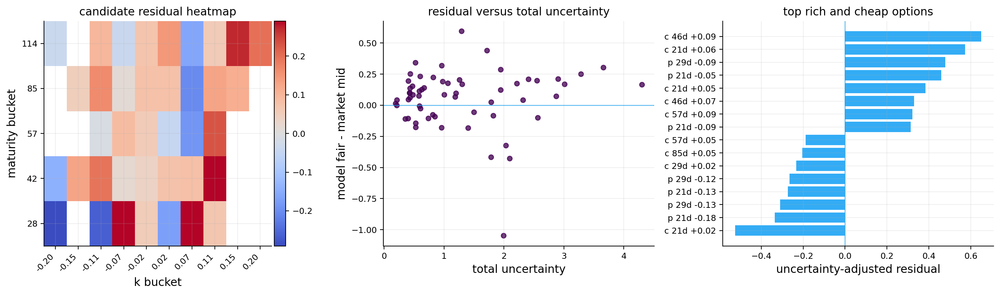
def fit_trade_models(q):
p_svi, _, _ = fit_svi(q)
p_sabr, _, _ = fit_sabr(q, primary_beta)
p_ssvi = pd.DataFrame()
theta_ssvi = pd.DataFrame()
if ssvi_ok_for_trade:
p, theta_ssvi, _, _, _, _, _ = fit_ssvi(q)
p_ssvi = pd.DataFrame([{"rho": p[0], "eta": p[1], "gamma": p[2]}])
return p_svi, p_ssvi, theta_ssvi, p_sabr
def score_date(q):
q_anchor, q_holdout = holdout_split(q)
if q_anchor.empty or q_holdout.empty:
return pd.DataFrame()
p_svi, p_ssvi, theta_ssvi, p_sabr = fit_trade_models(q_anchor)
out = q_holdout.copy()
out["svi_iv"] = svi_iv_at(out, p_svi)
out["svi_price"] = black76_price(out["option_type"].to_numpy(), out["forward"], out["strike"], out["tau"], out["svi_iv"], out["discount_factor"])
cols = ["svi_price"]
if sabr_in_signal:
out["sabr_iv"] = sabr_iv_at(out, p_sabr, primary_beta)
out["sabr_price"] = black76_price(out["option_type"].to_numpy(), out["forward"], out["strike"], out["tau"], out["sabr_iv"], out["discount_factor"])
cols.append("sabr_price")
if ssvi_ok_for_trade and not p_ssvi.empty:
out["ssvi_iv"] = ssvi_iv_at(out, p_ssvi, theta_ssvi)
out["ssvi_price"] = black76_price(out["option_type"].to_numpy(), out["forward"], out["strike"], out["tau"], out["ssvi_iv"], out["discount_factor"])
cols.append("ssvi_price")
weights = np.array([model_wt.get(c.replace("_price", ""), 0.0) for c in cols], dtype=float)
weights = weights / max(float(weights.sum()), 1e-12)
out["ensemble_price"] = np.zeros(len(out), dtype=float)
for c, w in zip(cols, weights):
out["ensemble_price"] += w * out[c]
out["model_spread"] = out[cols].std(axis=1).fillna(0.0)
out["price_residual"] = out["ensemble_price"] - out["mid"]
out["spread_residual"] = out["price_residual"] / out["half_spread"].replace(0, np.nan)
out["hedge_buffer"] = 0.0001 * np.abs(out["delta"].fillna(0.0)) * out["forward"] + 0.10 * out["half_spread"]
out["total_error"] = (out["half_spread"] + 0.5 * out["expected_exit_half_spread"] + 0.5 * out["model_spread"] + out["hedge_buffer"]).clip(lower=0.02)
out["z_residual"] = out["price_residual"] / out["total_error"].replace(0, np.nan)
out["strict_candidate"] = out["z_residual"].abs() > 1.0
out["watchlist_candidate"] = out["z_residual"].abs() > 0.5
out["candidate"] = out["strict_candidate"]
out["anchor_quotes"] = len(q_anchor)
return outn_signal_dates = None
n_backtest_dates = None
n_signal_workers = min(4, max(1, (os.cpu_count() or 2) // 2))
all_dates = np.array(sorted(calibration_panel["date"].unique()))
signal_dates = pd.to_datetime(
surface_support_by_date[
(surface_support_by_date["quotes"] >= 100)
& (surface_support_by_date["expiries"] >= min_expiries_per_date)
& (surface_support_by_date["near_atm_quotes"] >= 18)
]["date"]
).sort_values().to_numpy()
if n_signal_dates is not None:
signal_dates = signal_dates[-(int(n_signal_dates) + 1):]
val_rows = []
t0 = tic()
def score_one_signal_date(d):
d = pd.Timestamp(d).normalize()
next_dates = all_dates[all_dates > np.datetime64(d)]
if len(next_dates) == 0:
return pd.DataFrame()
d_next = pd.Timestamp(next_dates[0]).normalize()
qd = calibration_panel[calibration_panel["date"].eq(d)].copy()
scored = score_date(qd)
if scored.empty:
return pd.DataFrame()
q_next = quote_panel[quote_panel["date"].eq(d_next)].copy()
q_next["next_mid"] = q_next["mid"]
q_next["next_spot"] = q_next["spot"]
q_next["next_half_spread"] = 0.5 * (q_next["ask"] - q_next["bid"]).clip(lower=0.0)
m = scored.merge(q_next[["contract_id", "next_mid", "next_spot", "next_half_spread"]], on="contract_id", how="inner")
m["next_date"] = d_next
return m
dates_to_score = list(signal_dates[:-1])
if n_backtest_dates is not None:
dates_to_score = dates_to_score[-int(n_backtest_dates):]
with ThreadPoolExecutor(max_workers=n_signal_workers) as pool:
futures = [pool.submit(score_one_signal_date, d) for d in dates_to_score]
for fut in as_completed(futures):
m = fut.result()
if not m.empty:
val_rows.append(m)
validation_panel = pd.concat(val_rows, ignore_index=True) if val_rows else pd.DataFrame()
if not validation_panel.empty:
validation_panel = validation_panel.sort_values(["date", "expiry", "k"]).reset_index(drop=True)
toc("build validation panel", t0, len(validation_panel))
print(f"signal dates scored: {len(dates_to_score):,}; validation rows: {len(validation_panel):,}")signal dates scored: 504; validation rows: 28,415
if not validation_panel.empty:
validation_panel["raw_side"] = np.sign(validation_panel["price_residual"]).replace(0, np.nan)
validation_panel["raw_option_mid_pnl"] = validation_panel["raw_side"] * (validation_panel["next_mid"] - validation_panel["mid"])
validation_panel["raw_delta_hedge_pnl"] = validation_panel["raw_side"] * (-validation_panel["delta"].fillna(0.0)) * (validation_panel["next_spot"] - validation_panel["spot"])
validation_panel["bid_ask_cost"] = validation_panel["half_spread"] + validation_panel["next_half_spread"].fillna(validation_panel["half_spread"])
validation_panel["hedge_cost"] = 0.0001 * np.abs(validation_panel["delta"].fillna(0.0)) * (validation_panel["spot"] + validation_panel["next_spot"])
validation_panel["raw_hedged_pnl"] = validation_panel["raw_option_mid_pnl"] + validation_panel["raw_delta_hedge_pnl"] - validation_panel["bid_ask_cost"] - validation_panel["hedge_cost"]
date_ic = validation_panel.groupby("date").apply(lambda g: g[["z_residual", "raw_hedged_pnl"]].corr(method="spearman").iloc[0, 1] if len(g) >= 5 else np.nan).rename("ic").reset_index()
date_ic = date_ic.sort_values("date").reset_index(drop=True)
date_ic["train_ic"] = date_ic["ic"].expanding(min_periods=2).mean().shift(1)
date_ic["signal_direction"] = np.where(date_ic["train_ic"] > 0.02, 1.0, np.where(date_ic["train_ic"] < -0.02, -1.0, 0.0))
validation_panel = validation_panel.merge(date_ic[["date", "ic", "train_ic", "signal_direction"]], on="date", how="left")
validation_panel["option_mid_pnl"] = validation_panel["signal_direction"] * validation_panel["raw_option_mid_pnl"]
validation_panel["delta_hedge_pnl"] = validation_panel["signal_direction"] * validation_panel["raw_delta_hedge_pnl"]
validation_panel["next_hedged_pnl"] = validation_panel["signal_direction"] * validation_panel["raw_hedged_pnl"]
scored_panel = validation_panel[validation_panel["signal_direction"].ne(0.0)].copy()
if not scored_panel.empty:
scored_panel["residual_decile"] = pd.qcut(scored_panel["z_residual"].rank(method="first"), 10, labels=False, duplicates="drop")
residual_deciles = scored_panel.groupby("residual_decile").agg(
mean_z=("z_residual", "mean"),
mean_next_hedged_pnl=("next_hedged_pnl", "mean"),
hit_rate=("next_hedged_pnl", lambda x: float(np.mean(x > 0))),
count=("next_hedged_pnl", "size"),
).reset_index()
else:
residual_deciles = pd.DataFrame()
rank_correlation = pd.DataFrame([
{"score": "raw residual", "spearman_corr": validation_panel[["price_residual", "raw_hedged_pnl"]].corr(method="spearman").iloc[0, 1]},
{"score": "spread adjusted residual", "spearman_corr": validation_panel[["spread_residual", "raw_hedged_pnl"]].corr(method="spearman").iloc[0, 1]},
{"score": "uncertainty adjusted residual", "spearman_corr": validation_panel[["z_residual", "raw_hedged_pnl"]].corr(method="spearman").iloc[0, 1]},
])
signal_direction_summary = date_ic.copy()
else:
residual_deciles = pd.DataFrame()
rank_correlation = pd.DataFrame()
signal_direction_summary = pd.DataFrame()
display(rank_correlation)
display(signal_direction_summary)
display(residual_deciles)| score | spearman_corr | |
|---|---|---|
| 0 | raw residual | -0.155215 |
| 1 | spread adjusted residual | -0.143879 |
| 2 | uncertainty adjusted residual | -0.146875 |
| date | ic | train_ic | signal_direction | |
|---|---|---|---|---|
| 0 | 2022-01-03 | -0.267519 | NaN | 0.000000 |
| 1 | 2022-01-04 | 0.691112 | NaN | 0.000000 |
| 2 | 2022-01-05 | -0.778216 | 0.211797 | 1.000000 |
| 3 | 2022-01-06 | -0.647189 | -0.118207 | -1.000000 |
| 4 | 2022-01-07 | -0.653737 | -0.250453 | -1.000000 |
| ... | ... | ... | ... | ... |
| 499 | 2023-12-21 | -0.630175 | -0.147257 | -1.000000 |
| 500 | 2023-12-22 | -0.555406 | -0.148223 | -1.000000 |
| 501 | 2023-12-26 | -0.559965 | -0.149035 | -1.000000 |
| 502 | 2023-12-27 | -0.641512 | -0.149854 | -1.000000 |
| 503 | 2023-12-28 | -0.683390 | -0.150831 | -1.000000 |
504 rows × 4 columns
| residual_decile | mean_z | mean_next_hedged_pnl | hit_rate | count | |
|---|---|---|---|---|---|
| 0 | 0 | -0.976128 | 0.367608 | 0.518230 | 2825 |
| 1 | 1 | -0.458093 | 0.554784 | 0.513982 | 2825 |
| 2 | 2 | -0.266791 | 0.689913 | 0.522832 | 2825 |
| 3 | 3 | -0.129641 | 0.893330 | 0.549575 | 2824 |
| 4 | 4 | -0.019514 | 1.227511 | 0.622655 | 2825 |
| 5 | 5 | 0.083035 | 1.286864 | 0.742655 | 2825 |
| 6 | 6 | 0.197436 | 1.144087 | 0.742564 | 2824 |
| 7 | 7 | 0.343295 | 0.899729 | 0.700177 | 2825 |
| 8 | 8 | 0.551048 | 1.038221 | 0.727434 | 2825 |
| 9 | 9 | 1.093437 | 0.624459 | 0.683540 | 2825 |
if not validation_panel.empty:
fig, axes = plt.subplots(1, 3, figsize=(14.0, 4.2))
axes[0].bar(residual_deciles["residual_decile"], residual_deciles["mean_next_hedged_pnl"], alpha=0.82)
axes[0].axhline(0.0, lw=0.9, alpha=0.65)
axes[0].set_title("residual deciles versus next hedged pnl")
axes[0].set_xlabel("residual decile")
axes[0].set_ylabel("mean pnl")
axes[1].bar(residual_deciles["residual_decile"], residual_deciles["hit_rate"], alpha=0.82)
axes[1].axhline(0.5, lw=0.9, alpha=0.65)
axes[1].set_title("hit rate by residual decile")
axes[1].set_xlabel("residual decile")
axes[1].set_ylabel("hit rate")
outcome = validation_panel.groupby("candidate")["next_hedged_pnl"].mean().rename("mean_pnl").reset_index()
axes[2].bar(outcome["candidate"].astype(str), outcome["mean_pnl"], alpha=0.82)
axes[2].axhline(0.0, lw=0.9, alpha=0.65)
axes[2].set_title("accepted versus weak candidate outcome")
axes[2].set_xlabel("accepted candidate")
axes[2].set_ylabel("mean pnl")
plt.tight_layout()
plt.show()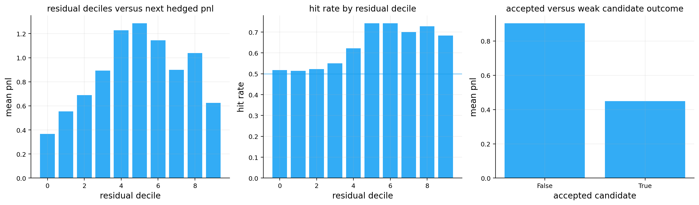
option_multiplier = 100.0
beta_window = 60
fixed_hold_days = 3
spx_daily = pd.read_csv(data_dir / "spx_daily_yfinance.csv")
spx_daily["date"] = pd.to_datetime(spx_daily["date"], errors="coerce").dt.normalize()
spx_daily = spx_daily.sort_values("date").drop_duplicates("date", keep="last")
spx_daily["spx_close"] = pd.to_numeric(spx_daily["close"], errors="coerce")
spx_daily["spx_ret"] = np.log(spx_daily["spx_close"] / spx_daily["spx_close"].shift(1))
spy_daily = pd.read_csv(data_dir / "spy_yfinance.csv")
spy_daily["date"] = pd.to_datetime(spy_daily["Date"], errors="coerce").dt.normalize()
spy_daily = spy_daily.sort_values("date").drop_duplicates("date", keep="last")
spy_daily["spy_close"] = pd.to_numeric(spy_daily["Close"], errors="coerce")
spy_daily["spy_dividend"] = pd.to_numeric(spy_daily.get("Dividends", 0.0), errors="coerce").fillna(0.0)
spy_daily["spy_ret_tr"] = np.log(pd.to_numeric(spy_daily["Adj Close"], errors="coerce") / pd.to_numeric(spy_daily["Adj Close"], errors="coerce").shift(1))
hedge_market = spx_daily[["date", "spx_close", "spx_ret"]].merge(spy_daily[["date", "spy_close", "spy_dividend", "spy_ret_tr"]], on="date", how="left")
roll_cov = hedge_market["spx_ret"].rolling(beta_window).cov(hedge_market["spy_ret_tr"])
roll_var = hedge_market["spy_ret_tr"].rolling(beta_window).var()
hedge_market["beta_spx_to_spy"] = (roll_cov / roll_var).replace([np.inf, -np.inf], np.nan).clip(0.85, 1.15).bfill().ffill().fillna(1.0)
hedge_market = hedge_market.set_index("date")max_hedge_entries, entry_spacing_trade_days = 80, 5
if not validation_panel.empty:
signal_pool = validation_panel[
validation_panel["watchlist_candidate"]
& validation_panel["signal_direction"].ne(0.0)
& np.isfinite(validation_panel["z_residual"])
& validation_panel["dte_days"].between(7.0, 90.0)
].copy()
if not signal_pool.empty:
signal_pool["date"] = pd.to_datetime(signal_pool["date"], errors="coerce").dt.normalize()
if "model_spread" not in signal_pool.columns:
signal_pool["model_spread"] = 0.0
spread_cut = signal_pool["model_spread"].quantile(0.80)
signal_pool = signal_pool[signal_pool["model_spread"].fillna(0.0) <= spread_cut].copy()
signal_pool["entry_rank"] = signal_pool["z_residual"].abs()
signal_pick = signal_pool.sort_values(["date", "entry_rank"], ascending=[True, False]).groupby("date", as_index=False).head(1).copy()
signal_pick["quantity"] = signal_pick["signal_direction"] * np.sign(signal_pick["price_residual"])
signal_pick = signal_pick[np.isfinite(signal_pick["quantity"]) & signal_pick["quantity"].ne(0.0)].copy()
else:
signal_pick = pd.DataFrame()
else:
signal_pool = pd.DataFrame()
signal_pick = pd.DataFrame()
def take_chronological_entries(x, min_gap_days=5, max_entries=80):
rows = []
last_date = None
x = x.sort_values("date").copy()
for _, r in x.iterrows():
d = pd.Timestamp(r["date"]).normalize()
if last_date is None or (d - last_date).days >= int(min_gap_days):
rows.append(r)
last_date = d
if len(rows) >= int(max_entries):
break
return pd.DataFrame(rows).reset_index(drop=True) if rows else pd.DataFrame()
if not signal_pick.empty:
signal_pick = take_chronological_entries(signal_pick, min_gap_days=entry_spacing_trade_days, max_entries=max_hedge_entries)
entry_dates = pd.to_datetime(signal_pick["date"], errors="coerce").dropna().sort_values().to_numpy() if not signal_pick.empty else np.array([], dtype="datetime64[ns]")
display(pd.DataFrame([{"signal_pool": len(signal_pool), "daily_picks": len(signal_pick), "first_entry": pd.to_datetime(entry_dates.min()).date() if len(entry_dates) else pd.NaT, "last_entry": pd.to_datetime(entry_dates.max()).date() if len(entry_dates) else pd.NaT}]))| signal_pool | daily_picks | first_entry | last_entry | |
|---|---|---|---|---|
| 0 | 5298 | 80 | 2022-01-05 | 2023-07-10 |
entry_date_set = set(pd.Timestamp(d).normalize() for d in entry_dates)
base_hedge_mask = (
quote_panel["iv_ok"].fillna(False)
& quote_panel["dte_days"].between(7.0, 90.0)
& (quote_panel["mid"] > 0.25)
& (quote_panel["relative_spread"].fillna(np.inf) <= 0.65)
)
entry_day_quotes = quote_panel[base_hedge_mask & quote_panel["date"].isin(entry_date_set)].copy()
entry_day_quotes["dte"] = entry_day_quotes["dte_days"]
entry_day_quotes["rel_spread"] = entry_day_quotes["relative_spread"]
entry_day_quotes["half_spread"] = 0.5 * (entry_day_quotes["ask"] - entry_day_quotes["bid"]).clip(lower=0.0)
entry_day_quotes["timestamp"] = entry_day_quotes["date"]
if not entry_day_quotes.empty:
candidate_keys = entry_day_quotes["contract_key"].unique()
first_future = pd.Timestamp(entry_dates.min()).normalize() if len(entry_dates) else pd.NaT
last_future = pd.Timestamp(entry_dates.max()).normalize() + pd.Timedelta(days=18) if len(entry_dates) else pd.NaT
future_counts = quote_panel[
quote_panel["contract_key"].isin(candidate_keys)
& quote_panel["date"].between(first_future, last_future)
][["date", "contract_key"]].drop_duplicates(["date", "contract_key"]).copy()
future_counts = future_counts.sort_values(["contract_key", "date"])
future_counts["future_quote_count"] = future_counts.groupby("contract_key").cumcount(ascending=False) + 1
entry_day_quotes = entry_day_quotes.merge(future_counts, on=["date", "contract_key"], how="left")
else:
entry_day_quotes["future_quote_count"] = pd.Series(dtype=float)
quote_by_date = {
pd.Timestamp(d).normalize(): g.copy()
for d, g in entry_day_quotes.groupby("date", sort=False)
}
display(pd.DataFrame([{"entry_day_quotes": len(entry_day_quotes), "entry_dates_with_quotes": len(quote_by_date), "candidate_contracts": entry_day_quotes["contract_key"].nunique() if len(entry_day_quotes) else 0}]))| entry_day_quotes | entry_dates_with_quotes | candidate_contracts | |
|---|---|---|---|
| 0 | 444213 | 80 | 112067 |
schedule_cols = ["entry_date", "contract_key", "quantity", "label", "entry_score", "entry_residual", "entry_total_error", "entry_z", "max_hold_days", "exit_on_convergence", "exit_on_sign_flip"]
def pick_matched_baseline(day, option_type, target_dte):
want = day[day["option_type"].eq(option_type)].copy()
if want.empty:
return None
target_dte = float(target_dte) if np.isfinite(target_dte) else 35.0
lo = max(7.0, target_dte - 10.0)
hi = min(90.0, target_dte + 10.0)
d = want[want["dte_days"].between(lo, hi) & want["delta"].abs().between(0.25, 0.75)].copy()
if d.empty:
d = want[want["dte_days"].between(max(7.0, target_dte - 18.0), min(90.0, target_dte + 18.0)) & want["delta"].abs().between(0.20, 0.80)].copy()
if d.empty:
d = want[want["dte_days"].between(21.0, 60.0) & want["delta"].abs().between(0.20, 0.80)].copy()
if d.empty:
return None
volume = pd.to_numeric(d["volume"], errors="coerce").fillna(0.0) if "volume" in d.columns else pd.Series(0.0, index=d.index)
future = pd.to_numeric(d["future_quote_count"], errors="coerce").fillna(0.0) if "future_quote_count" in d.columns else pd.Series(0.0, index=d.index)
d["entry_score"] = (
-2.0 * (d["delta"].abs() - 0.50).abs()
-0.06 * (d["dte_days"] - target_dte).abs()
-1.75 * d["relative_spread"].fillna(0.0)
+0.00015 * volume
+0.015 * future
)
return d.sort_values("entry_score", ascending=False).iloc[0]
if not signal_pick.empty:
entry_schedule_residual = pd.DataFrame({
"entry_date": pd.to_datetime(signal_pick["date"], errors="coerce").dt.normalize(),
"contract_key": signal_pick["contract_key"],
"quantity": signal_pick["quantity"],
"label": "residual_selector",
"entry_score": signal_pick["z_residual"].abs(),
"entry_residual": signal_pick["price_residual"],
"entry_total_error": signal_pick["total_error"],
"entry_z": signal_pick["z_residual"],
"max_hold_days": np.nan,
"exit_on_convergence": False,
"exit_on_sign_flip": False,
})
else:
entry_schedule_residual = pd.DataFrame(columns=schedule_cols)
matched_rows = []
baseline_match_rows = []
if not signal_pick.empty:
for _, pick in signal_pick.iterrows():
d = pd.Timestamp(pick["date"]).normalize()
day = quote_by_date.get(d)
if day is None or day.empty:
continue
row = pick_matched_baseline(day, pick["option_type"], pick["dte_days"])
if row is None:
continue
matched_rows.append({
"entry_date": d,
"contract_key": row["contract_key"],
"quantity": float(pick["quantity"]),
"label": "matched_atm",
"entry_score": row["entry_score"],
"entry_residual": np.nan,
"entry_total_error": np.nan,
"entry_z": np.nan,
"max_hold_days": np.nan,
"exit_on_convergence": False,
"exit_on_sign_flip": False,
})
baseline_match_rows.append({
"entry_date": d,
"residual_option_type": pick["option_type"],
"matched_option_type": row["option_type"],
"residual_quantity": float(pick["quantity"]),
"matched_quantity": float(pick["quantity"]),
"residual_dte": float(pick["dte_days"]),
"matched_dte": float(row["dte_days"]),
})
entry_schedule_matched_baseline = pd.DataFrame(matched_rows, columns=schedule_cols)
baseline_match_check = pd.DataFrame(baseline_match_rows)
if not entry_schedule_residual.empty and not entry_schedule_matched_baseline.empty:
matched_dates = set(pd.to_datetime(entry_schedule_matched_baseline["entry_date"], errors="coerce").dt.normalize())
entry_schedule_residual = entry_schedule_residual[pd.to_datetime(entry_schedule_residual["entry_date"], errors="coerce").dt.normalize().isin(matched_dates)].reset_index(drop=True)
display(pd.DataFrame([{"residual_schedule": len(entry_schedule_residual), "matched_schedule": len(entry_schedule_matched_baseline), "same_type_match_rate": len(entry_schedule_matched_baseline) / max(len(signal_pick), 1)}]))
if not baseline_match_check.empty:
display(baseline_match_check.groupby(["residual_option_type", "matched_option_type", "residual_quantity", "matched_quantity"]).size().rename("matches").reset_index())| residual_schedule | matched_schedule | same_type_match_rate | |
|---|---|---|---|
| 0 | 80 | 80 | 1.000000 |
| residual_option_type | matched_option_type | residual_quantity | matched_quantity | matches | |
|---|---|---|---|---|---|
| 0 | call | call | -1.000000 | -1.000000 | 18 |
| 1 | call | call | 1.000000 | 1.000000 | 22 |
| 2 | put | put | -1.000000 | -1.000000 | 33 |
| 3 | put | put | 1.000000 | 1.000000 | 7 |
def schedule_for_fixed_hold(x, label, hold_days):
if x.empty:
return pd.DataFrame(columns=schedule_cols)
y = x.copy()
y["label"] = label
y["max_hold_days"] = int(hold_days)
y["exit_on_convergence"] = False
y["exit_on_sign_flip"] = False
return y[schedule_cols].copy()
schedule_map = {
"matched_atm_3d": schedule_for_fixed_hold(entry_schedule_matched_baseline, "matched_atm_3d", fixed_hold_days),
"surface_residual_3d": schedule_for_fixed_hold(entry_schedule_residual, "surface_residual_3d", fixed_hold_days),
}
run_meta = pd.DataFrame([
{"run": "matched_atm_3d", "selector": "matched_atm", "hold_days": fixed_hold_days, "exit_rule": "fixed"},
{"run": "surface_residual_3d", "selector": "surface_residual", "hold_days": fixed_hold_days, "exit_rule": "fixed"},
])
all_schedules = pd.concat([s for s in schedule_map.values() if not s.empty], ignore_index=True) if any(not s.empty for s in schedule_map.values()) else pd.DataFrame(columns=schedule_cols)
scheduled_keys = set(all_schedules["contract_key"].astype(str)) if not all_schedules.empty else set()
display(run_meta.assign(entries=run_meta["run"].map({k: len(v) for k, v in schedule_map.items()})))| run | selector | hold_days | exit_rule | entries | |
|---|---|---|---|---|---|
| 0 | matched_atm_3d | matched_atm | 3 | fixed | 80 |
| 1 | surface_residual_3d | surface_residual | 3 | fixed | 80 |
if scheduled_keys and not all_schedules.empty:
first_entry = pd.to_datetime(all_schedules["entry_date"], errors="coerce").min() - pd.Timedelta(days=3)
last_entry = pd.to_datetime(all_schedules["entry_date"], errors="coerce").max() + pd.Timedelta(days=18)
hedge_option_book = quote_panel[
quote_panel["contract_key"].astype(str).isin(scheduled_keys)
& quote_panel["date"].between(first_entry, last_entry)
].copy()
else:
first_entry = pd.NaT
last_entry = pd.NaT
hedge_option_book = quote_panel.head(0).copy()
if len(hedge_option_book):
hedge_option_book["dte"] = hedge_option_book["dte_days"]
hedge_option_book["rel_spread"] = hedge_option_book["relative_spread"]
hedge_option_book["half_spread"] = 0.5 * (hedge_option_book["ask"] - hedge_option_book["bid"]).clip(lower=0.0)
hedge_option_book["timestamp"] = hedge_option_book["date"]
if not validation_panel.empty and len(hedge_option_book):
residual_marks = validation_panel[["date", "contract_key", "price_residual", "total_error", "z_residual"]].drop_duplicates(["date", "contract_key"])
hedge_option_book = hedge_option_book.merge(residual_marks, on=["date", "contract_key"], how="left", suffixes=("", "_signal"))
display(pd.DataFrame([{"scheduled_runs": len(schedule_map), "scheduled_entries": len(all_schedules), "hedge_book_rows": len(hedge_option_book), "hedge_contracts": len(scheduled_keys), "first_entry": first_entry, "last_entry": last_entry}]))| scheduled_runs | scheduled_entries | hedge_book_rows | hedge_contracts | first_entry | last_entry | |
|---|---|---|---|---|---|---|
| 0 | 2 | 160 | 6658 | 159 | 2022-01-02 | 2023-07-28 |
def blank_hedge_result(reason="not run"):
return {"nav": pd.DataFrame(), "returns": pd.DataFrame(), "pnl": pd.DataFrame(), "components": pd.DataFrame(), "exposures": pd.DataFrame(), "trades": pd.DataFrame(), "summary": pd.DataFrame(), "diagnostics": {"reason": reason}}
scheduled_results = {}
if len(hedge_option_book):
for run_name, schedule in schedule_map.items():
if schedule.empty:
scheduled_results[run_name] = blank_hedge_result("empty schedule")
continue
try:
scheduled_results[run_name] = run_scheduled_option_hedging_backtest(
option_path=hedge_option_book,
entry_schedule=schedule,
spot_series=hedge_market["spx_close"],
greeks=hedge_option_book,
hedge_price_series=hedge_market["spy_close"],
hedge_dividend_series=hedge_market["spy_dividend"],
hedge_beta_series=hedge_market["beta_spx_to_spy"],
strategies=("delta",),
delta_band=14.0,
delta_inner_band=3.0,
delta_share_lot=25.0,
delta_cooldown_days=1,
trading_cost_bps=1.0,
use_bid_ask_costs=True,
option_multiplier=option_multiplier,
exit_dte_days=7.0,
missing_option_mark="skip_day",
pnl_mode="usd_equivalent",
quote_price_unit="usd",
hedge_symbol="SPY",
annualization_days=ann_days,
contract_size=1.0,
)
except Exception as exc:
scheduled_results[run_name] = blank_hedge_result(str(exc))
else:
scheduled_results = {run_name: blank_hedge_result("empty hedge book") for run_name in schedule_map}
run_status = []
for run_name, result in scheduled_results.items():
run_status.append({"run": run_name, "component_rows": len(result["components"]), "opened_entries": result.get("diagnostics", {}).get("n_opened_episodes", 0), "reason": result.get("diagnostics", {}).get("reason", "")})
display(pd.DataFrame(run_status))| run | component_rows | opened_entries | reason | |
|---|---|---|---|---|
| 0 | matched_atm_3d | 320 | 80 | |
| 1 | surface_residual_3d | 316 | 80 |
summary_parts = []
for run_name, result in scheduled_results.items():
s = summarize_hedging_backtest(result).copy()
if s.empty:
s = pd.DataFrame([{"strategy": "delta", "status": "skipped", "total_pnl": np.nan}])
s["run"] = run_name
summary_parts.append(s)
scheduled_backtest_summary = pd.concat(summary_parts, ignore_index=True) if summary_parts else pd.DataFrame()
scheduled_backtest_summary = scheduled_backtest_summary.merge(run_meta, on="run", how="left") if not scheduled_backtest_summary.empty else scheduled_backtest_summary
def normalized_rows(run_name, result):
s = summarize_hedging_backtest(result).copy()
c = result.get("components", pd.DataFrame()).copy()
if s.empty or c.empty:
return pd.DataFrame()
c = c.sort_values(["strategy", "episode_id", "date"])
first = c.groupby(["strategy", "episode_id"], as_index=False).head(1).copy()
first["entry_premium"] = (first["main_pos"].abs() * first["option_mid"].abs() * option_multiplier).replace([np.inf, -np.inf], np.nan)
first["initial_abs_vega"] = first["vega_after"].abs().replace([np.inf, -np.inf], np.nan)
first["initial_abs_delta"] = first["delta_after"].abs().replace([np.inf, -np.inf], np.nan)
den = first.groupby("strategy").agg(
entry_premium=("entry_premium", "sum"),
initial_abs_vega=("initial_abs_vega", "sum"),
initial_abs_delta=("initial_abs_delta", "sum"),
episodes=("episode_id", "nunique"),
).reset_index()
avg_delta = c.groupby("strategy")["delta_after"].apply(lambda x: float(np.nanmean(np.abs(x)))).rename("average_abs_delta").reset_index()
out = s.merge(den, on="strategy", how="left").merge(avg_delta, on="strategy", how="left")
out["run"] = run_name
out["pnl_per_option_premium"] = out["total_pnl"] / out["entry_premium"].abs().clip(lower=1e-12)
out["pnl_per_traded_notional"] = out["total_pnl"] / out["traded_notional"].abs().clip(lower=1e-12)
out["pnl_per_initial_vega"] = out["total_pnl"] / out["initial_abs_vega"].abs().clip(lower=1e-12)
out["pnl_per_average_abs_delta"] = out["total_pnl"] / out["average_abs_delta"].abs().clip(lower=1e-12)
out["cost_pct_premium"] = out["total_costs"] / out["entry_premium"].abs().clip(lower=1e-12)
out["max_drawdown_per_notional"] = out["max_drawdown"] / out["traded_notional"].abs().clip(lower=1e-12)
return out
normalized_parts = [normalized_rows(run_name, result) for run_name, result in scheduled_results.items()]
normalized_performance = pd.concat([x for x in normalized_parts if not x.empty], ignore_index=True) if any(not x.empty for x in normalized_parts) else pd.DataFrame()
normalized_performance = normalized_performance.merge(run_meta, on="run", how="left") if not normalized_performance.empty else normalized_performance
fixed_hold_performance = normalized_performance[["run", "selector", "hold_days", "strategy", "episodes", "total_pnl", "pnl_per_option_premium", "pnl_per_traded_notional", "pnl_per_initial_vega", "cost_pct_premium", "max_drawdown_per_notional"]].copy() if not normalized_performance.empty else pd.DataFrame()
matched_benchmark_summary = scheduled_backtest_summary.copy()
trade_summary = fixed_hold_performance.copy() if not fixed_hold_performance.empty else scheduled_backtest_summary.copy()
display(scheduled_backtest_summary)
display(fixed_hold_performance)| strategy | status | n_days | total_pnl | mean_daily_pnl | std_daily_pnl | total_costs | trade_count | traded_notional | max_drawdown | mean_abs_delta_after | mean_abs_vega_after | run | selector | hold_days | exit_rule | |
|---|---|---|---|---|---|---|---|---|---|---|---|---|---|---|---|---|
| 0 | delta | ok | 318 | -26,620.779516 | -83.713143 | 1,397.265681 | 14,371.736825 | 240 | 37,367,368.250000 | -38,436.759012 | 28.654916 | 45,980.303026 | matched_atm_3d | matched_atm | 3 | fixed |
| 1 | delta | ok | 314 | -9,031.743112 | -28.763513 | 537.567972 | 3,910.222750 | 173 | 4,802,227.500000 | -15,690.727703 | 8.028346 | 17,676.777941 | surface_residual_3d | surface_residual | 3 | fixed |
| run | selector | hold_days | strategy | episodes | total_pnl | pnl_per_option_premium | pnl_per_traded_notional | pnl_per_initial_vega | cost_pct_premium | max_drawdown_per_notional | |
|---|---|---|---|---|---|---|---|---|---|---|---|
| 0 | matched_atm_3d | matched_atm | 3 | delta | 80 | -26,620.779516 | -0.034140 | -0.000712 | -0.006864 | 0.018431 | -0.001029 |
| 1 | surface_residual_3d | surface_residual | 3 | delta | 80 | -9,031.743112 | -0.078465 | -0.001881 | -0.006269 | 0.033971 | -0.003267 |
if scheduled_results:
fig, ax = plt.subplots(figsize=(9.4, 4.8))
for run_name, result in scheduled_results.items():
nav = result["nav"]
if "delta" in nav.columns:
ax.plot(nav.index, nav["delta"], lw=1.8, alpha=0.88, label=run_name)
ax.axhline(0.0, lw=0.9, alpha=0.65)
ax.set_title("fixed 3-day delta-hedged comparison")
ax.set_xlabel("date")
ax.set_ylabel("cumulative pnl")
ax.legend(fontsize=8)
plt.tight_layout()
plt.show()
if not fixed_hold_performance.empty:
fig, axes = plt.subplots(1, 2, figsize=(11.6, 4.4))
labels = fixed_hold_performance["run"]
axes[0].barh(labels, fixed_hold_performance["pnl_per_traded_notional"], alpha=0.82)
axes[0].axvline(0.0, lw=0.9, alpha=0.65)
axes[0].set_title("pnl per traded notional")
axes[0].set_xlabel("pnl / notional")
axes[1].barh(labels, fixed_hold_performance["pnl_per_initial_vega"], alpha=0.82)
axes[1].axvline(0.0, lw=0.9, alpha=0.65)
axes[1].set_title("pnl per initial vega")
axes[1].set_xlabel("pnl / initial vega")
plt.tight_layout()
plt.show()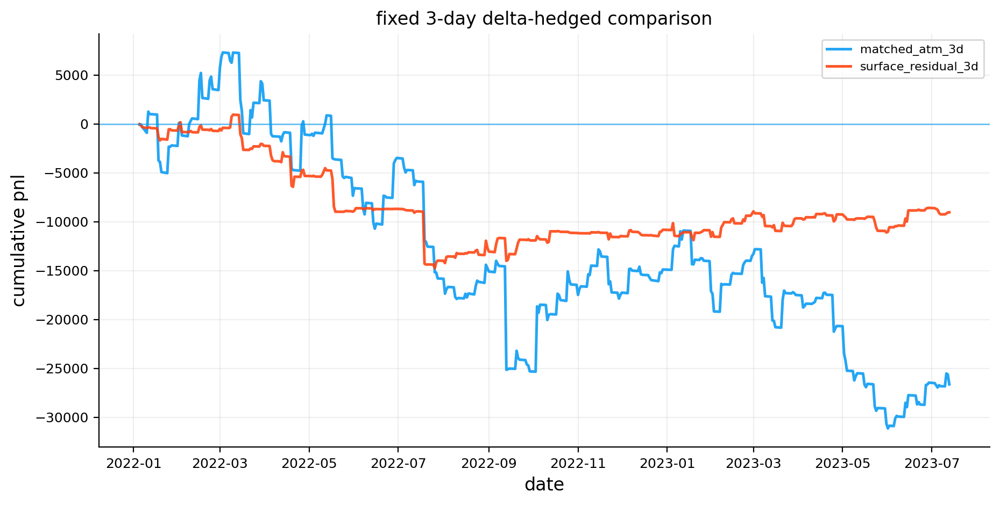
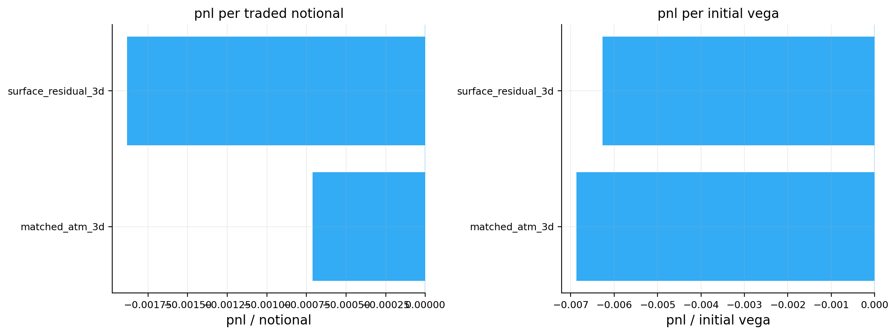
component_parts = []
trade_parts_scheduled = []
for run_name, result in scheduled_results.items():
if not result["components"].empty:
component_parts.append(result["components"].assign(run=run_name))
if not result["trades"].empty:
trade_parts_scheduled.append(result["trades"].assign(run=run_name))
scheduled_components = pd.concat(component_parts, ignore_index=True) if component_parts else pd.DataFrame()
scheduled_trades = pd.concat(trade_parts_scheduled, ignore_index=True) if trade_parts_scheduled else pd.DataFrame()
if not scheduled_components.empty:
scheduled_attribution = scheduled_components.groupby("run").agg(
option_mid_pnl=("main_option_pnl", "sum"),
delta_hedge_pnl=("underlying_hedge_pnl", "sum"),
bid_ask_and_hedge_cost=("transaction_costs", "sum"),
net_pnl=("net_pnl", "sum"),
mean_abs_delta_after=("delta_after", lambda x: float(np.nanmean(np.abs(x)))),
mean_abs_vega_after=("vega_after", lambda x: float(np.nanmean(np.abs(x)))),
).reset_index()
display(scheduled_attribution)
a = scheduled_attribution.set_index("run")[["option_mid_pnl", "delta_hedge_pnl", "bid_ask_and_hedge_cost", "net_pnl"]]
fig, ax = plt.subplots(figsize=(9.6, 4.6))
a.plot(kind="bar", ax=ax, alpha=0.85)
ax.axhline(0.0, lw=0.9, alpha=0.65)
ax.set_title("fixed 3-day pnl attribution")
ax.set_xlabel("run")
ax.set_ylabel("pnl")
ax.tick_params(axis="x", rotation=25)
plt.tight_layout()
plt.show()
else:
scheduled_attribution = pd.DataFrame()| run | option_mid_pnl | delta_hedge_pnl | bid_ask_and_hedge_cost | net_pnl | mean_abs_delta_after | mean_abs_vega_after | |
|---|---|---|---|---|---|---|---|
| 0 | matched_atm_3d | -17,135.000000 | 3,593.750000 | 14,371.736825 | -26,620.779516 | 29.162983 | 45,944.644697 |
| 1 | surface_residual_3d | -13,475.000000 | 8,446.000000 | 3,910.222750 | -9,031.743112 | 8.057869 | 17,658.830385 |
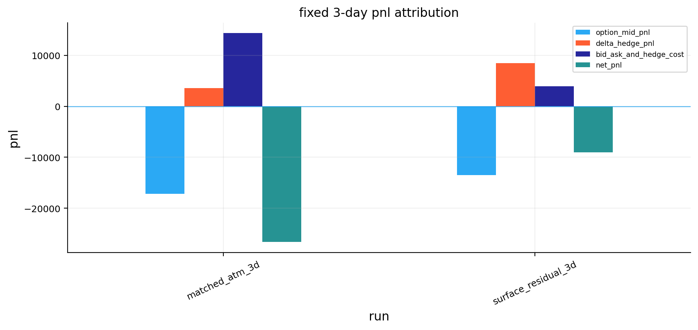
stochastic_vol_objects = {
"calibration_panel": calibration_panel,
"model_panel": model_panel,
"svi_diag": svi_diag,
"ssvi_diag": ssvi_diag,
"sabr_diag": sabr_diag,
"merton_diag": merton_diag,
"heston_diag": heston_diag,
"bates_diag": bates_diag,
"own_panel_fit": own_panel_fit,
"common_benchmark_fit": common_benchmark_fit,
"model_comparison": model_comparison,
"speed_summary": speed_summary,
"uncertainty_summary": uncertainty_summary,
"candidate_summary": candidate_summary,
"trade_summary": trade_summary,
"entry_schedule_residual": entry_schedule_residual,
"entry_schedule_matched_baseline": entry_schedule_matched_baseline,
"baseline_match_check": baseline_match_check,
"run_meta": run_meta,
"fixed_hold_performance": fixed_hold_performance,
"scheduled_backtest_summary": scheduled_backtest_summary,
"matched_benchmark_summary": matched_benchmark_summary,
"normalized_performance": normalized_performance,
"scheduled_attribution": scheduled_attribution,
"scheduled_components": scheduled_components,
"scheduled_trades": scheduled_trades,
}
final_object_summary = []
for name, obj in stochastic_vol_objects.items():
if isinstance(obj, pd.DataFrame):
final_object_summary.append({"object": name, "rows": len(obj), "columns": len(obj.columns)})
else:
final_object_summary.append({"object": name, "rows": np.nan, "columns": np.nan})
display(pd.DataFrame(final_object_summary))| object | rows | columns | |
|---|---|---|---|
| 0 | calibration_panel | 1515066 | 106 |
| 1 | model_panel | 1519842 | 106 |
| 2 | svi_diag | 29 | 15 |
| 3 | ssvi_diag | 1 | 10 |
| 4 | sabr_diag | 87 | 12 |
| 5 | merton_diag | 1 | 15 |
| 6 | heston_diag | 1 | 13 |
| 7 | bates_diag | 1 | 14 |
| 8 | own_panel_fit | 6 | 9 |
| 9 | common_benchmark_fit | 6 | 10 |
| 10 | model_comparison | 6 | 10 |
| 11 | speed_summary | 6 | 5 |
| 12 | uncertainty_summary | 1 | 6 |
| 13 | candidate_summary | 6 | 5 |
| 14 | trade_summary | 2 | 11 |
| 15 | entry_schedule_residual | 80 | 11 |
| 16 | entry_schedule_matched_baseline | 80 | 11 |
| 17 | baseline_match_check | 80 | 7 |
| 18 | run_meta | 2 | 4 |
| 19 | fixed_hold_performance | 2 | 11 |
| 20 | scheduled_backtest_summary | 2 | 16 |
| 21 | matched_benchmark_summary | 2 | 16 |
| 22 | normalized_performance | 2 | 27 |
| 23 | scheduled_attribution | 2 | 7 |
| 24 | scheduled_components | 636 | 68 |
| 25 | scheduled_trades | 540 | 10 |
import warnings
from pathlib import Path
import numpy as np
import pandas as pd
import matplotlib.pyplot as plt
from cycler import cycler
from IPython.display import display
from quantfinlab.dataio.equity_ohlcv import load_ohlcv
from quantfinlab.dataio.option_chain import load_option_chain
from quantfinlab.dataio.rates import load_par_yield_curve
from quantfinlab.options.quote_cleaning import (
attach_spot_from_series,
convert_quotes_to_usd_equivalent,
clean_option_quotes,
surface_ready_quotes,
)
from quantfinlab.options.rates_dividends import (
attach_rates,
add_discount_factors,
infer_carry_from_forward,
infer_dividend_yield_from_forward,
)
from quantfinlab.options.parity import infer_forwards_from_parity
from quantfinlab.options.iv import implied_vol_table
from quantfinlab.options.greeks import compute_greeks_numpy
from quantfinlab.options.model_risk import (
choose_model_engine,
add_calibration_weights,
calibration_quotes,
choose_surface_date,
balanced_model_quotes,
common_model_quotes,
compare_model_fits,
model_fair_values,
residual_scores,
signal_dates,
next_day_residual_check,
residual_entry_schedule,
market_summary,
)
from quantfinlab.options.svi import fit_svi_surface, fit_svi_holdout
from quantfinlab.options.ssvi import fit_ssvi_surface
from quantfinlab.options.sabr import fit_sabr_surface, fit_sabr_holdout
from quantfinlab.options.merton import fit_merton_jump_diffusion
from quantfinlab.options.heston import fit_heston_mc
from quantfinlab.options.bates import fit_bates_mc
from quantfinlab.backtest.options import (
matched_option_schedule,
hedge_book_from_schedules,
run_scheduled_option_hedging_backtest,
hedging_diagnostics,
scheduled_hedge_comparison,
)
from quantfinlab.plotting.options import (
calibration_quote_map,
smile_term_structure,
model_quote_overlay,
svi_smiles,
svi_ssvi_errors,
ssvi_residuals,
sabr_smiles,
sabr_terms,
merton_tail_fit,
heston_mc_check,
heston_bates_fit,
model_speed_accuracy,
benchmark_errors,
model_disagreement,
residual_deciles,
scheduled_hedge_equity,
)
warnings.filterwarnings("ignore")
pd.set_option("display.float_format", lambda x: f"{x:,.6f}")
pd.set_option("display.max_columns", 120)
colors = ["#069AF3", "#FE420F", "#00008B", "#008080", "#CC79A7", "#DC143C", "#9614fa", "#0072B2", "#7BC8F6", "#04D8B2", "#800080", "#FF8072"]
plt.rcParams["axes.prop_cycle"] = cycler(color=colors)
plt.rcParams.update({"figure.figsize": (7, 3.5), "figure.dpi": 300, "savefig.dpi": 250, "axes.grid": True, "grid.alpha": 0.20, "axes.spines.top": False, "axes.spines.right": False, "axes.titlesize": 11, "axes.labelsize": 10, "xtick.labelsize": 9, "ytick.labelsize": 9, "legend.fontsize": 8})
engine = "auto"
ann_days = 365.25
random_state = 7
root = Path.cwd()
if root.name.lower() == "notebooks":
root = root.parent
data_dir = root / "data"
backend_report = choose_model_engine(engine=engine)
display(backend_report)
btc_spot = load_ohlcv(
data_dir / "btc_usd_yfinance_2023_10_01_2024_10_15.csv",
source="yfinance_csv",
fields=("close",),
)
btc_spot = btc_spot["close"].rename("BTC")
btc_spot = btc_spot[btc_spot > 0]
btc_options = load_option_chain(
data_dir / "btc_deribit_optiondx_2024_01_09.parquet",
source="btc_deribit",
annualization_days=365.0,
)
us_rates = load_par_yield_curve(
data_dir / "par-yield-curve-rates-1990-2026.csv",
source="us_treasury",
)
btc_quotes = attach_spot_from_series(
btc_options,
btc_spot,
date_col="date",
spot_col="spot",
method="previous",
overwrite=False,
)
btc_quotes = convert_quotes_to_usd_equivalent(
btc_quotes,
spot_col="spot",
price_cols=("bid", "ask", "mid", "last", "mark"),
unit="auto",
contract_size=1.0,
)
clean_quotes, clean_report = clean_option_quotes(
btc_quotes,
min_dte=3,
max_dte=180,
moneyness_range=(0.45, 1.75),
max_relative_spread=0.60,
closest_atm_pairs=None,
min_pairs_per_expiry=0,
annualization_days=365.0,
)
rate_start = clean_quotes["date"].min() - pd.Timedelta(days=30)
rate_end = clean_quotes["date"].max()
us_rates = us_rates.loc[(us_rates.index >= rate_start) & (us_rates.index <= rate_end)].copy()
clean_quotes = attach_rates(
clean_quotes,
us_rates,
date_col="date",
tau_col="tau",
out_col="rate",
)
clean_quotes = add_discount_factors(
clean_quotes,
rate_col="rate",
tau_col="tau",
out_col="discount_factor",
)
clean_quotes = infer_forwards_from_parity(
clean_quotes,
date_col="date",
expiry_col="expiry",
strike_col="strike",
option_type_col="option_type",
mid_col="mid",
discount_col="discount_factor",
spot_col="spot",
out_col="forward",
)
forward_bad = ~np.isfinite(pd.to_numeric(clean_quotes["forward"], errors="coerce")) | (pd.to_numeric(clean_quotes["forward"], errors="coerce") <= 0)
forward_fallback = clean_quotes["spot"] * np.exp(clean_quotes["rate"].fillna(0.0) * clean_quotes["tau"].fillna(0.0))
clean_quotes.loc[forward_bad, "forward"] = forward_fallback.loc[forward_bad]
forward_report = pd.DataFrame([{"forward_fallback_share": float(forward_bad.mean()), "forward_fallback_rows": int(forward_bad.sum())}])
clean_quotes = infer_carry_from_forward(
clean_quotes,
spot_col="spot",
forward_col="forward",
tau_col="tau",
out_col="implied_carry",
)
clean_quotes = infer_dividend_yield_from_forward(
clean_quotes,
rate_col="rate",
carry_col="implied_carry",
out_col="implied_dividend_yield",
)
iv_quotes = implied_vol_table(
clean_quotes,
price_cols=("bid", "mid", "ask"),
option_type_col="option_type",
spot_col="spot",
forward_col="forward",
strike_col="strike",
tau_col="tau",
rate_col="rate",
discount_col="discount_factor",
model="black76",
engine=engine,
)
iv_quotes["iv_ok"] = iv_quotes["iv_mid_success"].fillna(False) & np.isfinite(iv_quotes["iv_mid"])
iv_quotes = compute_greeks_numpy(iv_quotes, iv_col="iv_mid")
surface_quotes = surface_ready_quotes(
iv_quotes,
min_iv=0.05,
max_iv=3.50,
min_tau=3 / 365.0,
max_tau=180 / 365.0,
min_weight=0.05,
max_weight=20.0,
)
surface_quotes = add_calibration_weights(
surface_quotes,
price_uncertainty="half_spread",
iv_uncertainty="spread_over_vega",
expiry_balance=True,
)
btc_calibration = calibration_quotes(
surface_quotes,
min_dte=3.0,
max_dte=120.0,
min_vega=0.0,
max_relative_spread=0.85,
otm_only=True,
)
main_date = choose_surface_date(
btc_calibration,
min_expiries=4,
min_quotes=80,
prefer_tail_coverage=True,
)
btc_day = btc_calibration.loc[btc_calibration["date"].eq(main_date)].copy()
btc_model_quotes = balanced_model_quotes(
btc_day,
target_dtes=(7, 14, 21, 30, 45, 60),
target_ks=(-0.35, -0.25, -0.17, -0.10, -0.04, 0.00, 0.04, 0.10, 0.17, 0.25),
min_quotes_per_expiry=6,
prefer_tail_coverage=True,
)
btc_svi = fit_svi_surface(
btc_day,
weight_col="obs_weight",
engine=engine,
)
btc_ssvi = fit_ssvi_surface(
btc_day,
weight_col="obs_weight",
engine=engine,
)
btc_sabr = fit_sabr_surface(
btc_day,
betas=(1.0, 0.7, 0.5),
primary_beta=1.0,
weight_col="obs_weight",
engine=engine,
)
btc_merton = fit_merton_jump_diffusion(
btc_model_quotes,
weight_col="obs_weight",
engine=engine,
max_nfev=45,
fit_by_expiry=True,
)
btc_heston = fit_heston_mc(
btc_model_quotes,
paths_opt=2048,
paths_final=8192,
steps_per_year=52,
random_method="antithetic",
common_random_numbers=True,
engine=engine,
random_state=random_state,
max_nfev=70,
)
btc_bates = fit_bates_mc(
btc_model_quotes,
heston_start=btc_heston,
jump_start=btc_merton,
paths_opt=2048,
paths_final=8192,
steps_per_year=52,
random_method="antithetic",
common_random_numbers=True,
engine=engine,
random_state=random_state,
max_nfev=60,
)
btc_common_quotes = common_model_quotes(
btc_day,
model_quotes=btc_model_quotes,
min_tail_count=6,
)
model_comparison = compare_model_fits(
btc_common_quotes,
fits={
"svi": btc_svi,
"ssvi": btc_ssvi,
"sabr": btc_sabr,
"merton": btc_merton,
"heston": btc_heston,
"bates": btc_bates,
},
engine=engine,
)
dates_for_signal = signal_dates(
btc_calibration,
min_quotes=60,
min_expiries=3,
min_near_atm_quotes=10,
)
dates_for_signal = dates_for_signal[-120:]
btc_svi_daily = fit_svi_holdout(
btc_calibration,
dates=dates_for_signal,
train_mode="anchor_strikes",
weight_col="obs_weight",
warm_start=True,
engine=engine,
)
btc_sabr_daily = fit_sabr_holdout(
btc_calibration,
dates=dates_for_signal,
beta=1.0,
train_mode="anchor_strikes",
weight_col="obs_weight",
warm_start=True,
engine=engine,
)
btc_fair_values = model_fair_values(
btc_calibration,
fits={"svi": btc_svi_daily, "sabr": btc_sabr_daily},
ensemble_method="capped_weighted",
max_model_weight=0.70,
min_model_weight=0.30,
engine=engine,
)
btc_scores = residual_scores(
btc_fair_values,
residual_col="ensemble_price_residual",
quote_cost_col="half_spread",
model_uncertainty_col="model_disagreement",
score_method="cost_adjusted_z",
)
btc_validation = next_day_residual_check(
btc_scores,
option_quotes=btc_calibration,
hedge_delta_col="delta",
cost_model="scheduled",
calendar="crypto_24_7",
engine=engine,
)
btc_residual_schedule = residual_entry_schedule(
btc_validation,
selector_name="btc_residual_fixed_3d",
hold_days=3,
max_entries=60,
entry_spacing_days=3,
require_signal_direction=True,
chronological=True,
)
btc_matched_schedule = matched_option_schedule(
btc_residual_schedule,
option_quotes=surface_quotes,
same_date=True,
same_option_type=True,
same_quantity_sign=True,
target_abs_delta=0.50,
dte_tolerance_days=7,
min_future_marks=3,
selector_name="btc_matched_atm_fixed_3d",
)
schedule_report = pd.DataFrame([
{"schedule": "residual", "entries": len(btc_residual_schedule)},
{"schedule": "matched_atm", "entries": len(btc_matched_schedule)},
])
btc_hedge_book = hedge_book_from_schedules(
surface_quotes,
schedules=[btc_residual_schedule, btc_matched_schedule],
lookahead_days=12,
)
empty_result = {
"nav": pd.DataFrame(),
"returns": pd.DataFrame(),
"pnl": pd.DataFrame(),
"components": pd.DataFrame(),
"exposures": pd.DataFrame(),
"trades": pd.DataFrame(),
"summary": pd.DataFrame(),
"diagnostics": {},
}
if btc_residual_schedule.empty or btc_matched_schedule.empty or btc_hedge_book.empty:
btc_residual_results = empty_result
btc_matched_results = empty_result
else:
btc_residual_results = run_scheduled_option_hedging_backtest(
option_path=btc_hedge_book,
entry_schedule=btc_residual_schedule,
spot_series=btc_spot,
greeks=btc_hedge_book,
hedge_price_series=btc_spot,
hedge_dividend_series=None,
hedge_beta_series=None,
strategies=("unhedged", "delta"),
option_multiplier=1.0,
trading_cost_bps=2.0,
use_bid_ask_costs=True,
delta_band=0.10,
delta_inner_band=0.03,
delta_share_lot=0.001,
delta_cooldown_days=0,
max_hold_days=3,
quote_price_unit="usd",
valuation_currency="USD",
pnl_mode="usd_equivalent",
calendar="crypto_24_7",
missing_option_mark="skip_day",
)
btc_matched_results = run_scheduled_option_hedging_backtest(
option_path=btc_hedge_book,
entry_schedule=btc_matched_schedule,
spot_series=btc_spot,
greeks=btc_hedge_book,
hedge_price_series=btc_spot,
hedge_dividend_series=None,
hedge_beta_series=None,
strategies=("unhedged", "delta"),
option_multiplier=1.0,
trading_cost_bps=2.0,
use_bid_ask_costs=True,
delta_band=0.10,
delta_inner_band=0.03,
delta_share_lot=0.001,
delta_cooldown_days=0,
max_hold_days=3,
quote_price_unit="usd",
valuation_currency="USD",
pnl_mode="usd_equivalent",
calendar="crypto_24_7",
missing_option_mark="skip_day",
)
btc_hedge_comparison = scheduled_hedge_comparison(
{
"matched_atm_fixed_3d": btc_matched_results,
"residual_selector_fixed_3d": btc_residual_results,
},
normalize_by=("premium", "traded_notional", "initial_vega"),
)
btc_residual_diag = hedging_diagnostics(btc_residual_results)
btc_matched_diag = hedging_diagnostics(btc_matched_results)
btc_summary = market_summary(
asset="btc",
quotes=btc_day,
model_comparison=model_comparison,
validation=btc_validation,
hedge_comparison=btc_hedge_comparison,
engine=engine,
)
display(clean_report)
display(forward_report)
display(model_comparison)
display(btc_validation.attrs.get("summary", pd.DataFrame()))
display(schedule_report)
display(btc_hedge_comparison)
display(btc_residual_diag)
display(btc_matched_diag)
display(btc_summary)
fig = plt.figure(figsize=(15, 11), constrained_layout=True, dpi=300)
gs = fig.add_gridspec(4, 4)
ax_quote_map = fig.add_subplot(gs[0, 0])
ax_smile_terms = fig.add_subplot(gs[0, 1])
ax_model_overlay = fig.add_subplot(gs[0, 2])
ax_svi = fig.add_subplot(gs[0, 3])
ax_svi_ssvi = fig.add_subplot(gs[1, 0])
ax_ssvi_resid = fig.add_subplot(gs[1, 1])
ax_sabr_smiles = fig.add_subplot(gs[1, 2])
ax_sabr_params = fig.add_subplot(gs[1, 3])
ax_merton = fig.add_subplot(gs[2, 0])
ax_heston_mc = fig.add_subplot(gs[2, 1])
ax_heston_bates = fig.add_subplot(gs[2, 2])
ax_error_runtime = fig.add_subplot(gs[2, 3])
ax_benchmark = fig.add_subplot(gs[3, 0])
ax_disagreement = fig.add_subplot(gs[3, 1])
ax_deciles = fig.add_subplot(gs[3, 2])
ax_hedge = fig.add_subplot(gs[3, 3])
calibration_quote_map(ax_quote_map, btc_day, "k", "tau", "BTC calibration quotes by maturity and moneyness")
smile_term_structure(ax_smile_terms, btc_day, "k", "tau", "iv_mid", "BTC IV smile term structure")
model_quote_overlay(ax_model_overlay, btc_day, btc_model_quotes, "k", "tau", "Balanced model panel by expiry")
svi_smiles(ax_svi, btc_day, btc_svi, "SVI fitted smiles")
svi_ssvi_errors(ax_svi_ssvi, btc_svi, btc_ssvi, "SVI vs SSVI error by expiry")
ssvi_residuals(ax_ssvi_resid, btc_day, btc_ssvi, "SSVI residual heatmap")
sabr_smiles(ax_sabr_smiles, btc_day, btc_sabr, "SABR fitted smiles")
sabr_terms(ax_sabr_params, btc_sabr, "SABR parameter term structure")
merton_tail_fit(ax_merton, btc_model_quotes, btc_merton, "Merton jump-tail fit")
heston_mc_check(ax_heston_mc, btc_heston, "Heston MC convergence")
heston_bates_fit(ax_heston_bates, btc_model_quotes, btc_heston, btc_bates, "Heston vs Bates fit")
model_speed_accuracy(ax_error_runtime, model_comparison, "Model error vs runtime")
benchmark_errors(ax_benchmark, model_comparison, "Common benchmark errors")
model_disagreement(ax_disagreement, btc_fair_values, "Daily model disagreement")
residual_deciles(ax_deciles, btc_validation, "Residual deciles vs next hedged P&L")
scheduled_hedge_equity(ax_hedge, {"matched_atm_fixed_3d": btc_matched_results, "residual_selector_fixed_3d": btc_residual_results}, btc_hedge_comparison, "Scheduled BTC hedge comparison")
for ax in fig.axes:
ax.title.set_fontsize(10)
ax.tick_params(axis="both", labelsize=8)
fig.suptitle(
f"BTC model calibration, residual selection, and scheduled hedging | {pd.Timestamp(main_date).date()}",
fontsize=10,
y=1.01,
)
plt.show()
| requested_engine | engine_used | numba_available | |
|---|---|---|---|
| 0 | auto | numba | True |
| step | rows | removed | |
|---|---|---|---|
| 0 | raw rows | 258234 | NaN |
| 1 | after schema normalization | 258234 | 0.000000 |
| 2 | after positive price filter | 218710 | 39,524.000000 |
| 3 | after bid/ask/spread filter | 196404 | 22,306.000000 |
| 4 | after DTE filter | 136262 | 60,142.000000 |
| 5 | after moneyness filter | 121361 | 14,901.000000 |
| 6 | after ATM-pair selection | 121361 | 0.000000 |
| 7 | final rows | 121361 | 0.000000 |
| forward_fallback_share | forward_fallback_rows | |
|---|---|---|
| 0 | 0.000527 | 64 |
| model | benchmark_quotes | iv_quotes | weighted_iv_rmse | weighted_price_rmse | tail_error | runtime | success | |
|---|---|---|---|---|---|---|---|---|
| 0 | svi | 60 | 60 | 0.015561 | 0.602879 | 0.026674 | 1.354696 | True |
| 1 | ssvi | 60 | 60 | 0.049213 | 9.962740 | 0.078709 | 0.084069 | True |
| 2 | sabr | 60 | 60 | 0.018157 | 2.655991 | 0.030032 | 0.716396 | True |
| 3 | merton | 60 | 60 | 0.004798 | 0.781142 | 0.005809 | 282.607980 | True |
| 4 | heston | 60 | 60 | 0.036923 | 5.557398 | 0.044673 | 4.490017 | True |
| 5 | bates | 60 | 59 | 0.021282 | 2.878996 | 0.017302 | 3.090900 | True |
| decile | mean_z | mean_next_hedged_pnl | hit_rate | count | |
|---|---|---|---|---|---|
| 0 | 0 | -0.911688 | 28.627377 | 0.535660 | 1977 |
| 1 | 1 | -0.312500 | 18.286422 | 0.523279 | 1976 |
| 2 | 2 | -0.109607 | 38.570148 | 0.542004 | 1976 |
| 3 | 3 | 0.008445 | 114.043749 | 0.562247 | 1976 |
| 4 | 4 | 0.110639 | 41.575876 | 0.534648 | 1977 |
| 5 | 5 | 0.242105 | 12.469300 | 0.491903 | 1976 |
| 6 | 6 | 0.394495 | 8.612801 | 0.506073 | 1976 |
| 7 | 7 | 0.581397 | 14.156114 | 0.553138 | 1976 |
| 8 | 8 | 0.853802 | 8.211917 | 0.567814 | 1976 |
| 9 | 9 | 2.819373 | -6.209967 | 0.509863 | 1977 |
| schedule | entries | |
|---|---|---|
| 0 | residual | 41 |
| 1 | matched_atm | 41 |
| strategy | status | n_days | total_pnl | mean_daily_pnl | std_daily_pnl | total_costs | trade_count | traded_notional | max_drawdown | mean_abs_delta_after | mean_abs_vega_after | run | entry_premium | initial_vega | average_abs_delta | pnl_per_premium | pnl_per_traded_notional | pnl_per_initial_vega | cost_pct_premium | |
|---|---|---|---|---|---|---|---|---|---|---|---|---|---|---|---|---|---|---|---|---|
| 0 | unhedged | ok | 115 | 1,705.293021 | 14.828635 | 858.388033 | 4,617.897242 | 80 | 286,945.365479 | -14,945.121509 | 0.447369 | 6,025.885748 | matched_atm_fixed_3d | 145,494.339652 | 264,139.499738 | 0.492986 | 0.011721 | 0.005943 | 0.006456 | 0.031739 |
| 1 | delta | ok | 115 | -6,394.575376 | -55.605003 | 302.952033 | 5,158.805445 | 102 | 2,991,486.383842 | -7,841.469478 | 0.111664 | 6,025.885748 | matched_atm_fixed_3d | 145,494.339652 | 264,139.499738 | 0.151160 | -0.043951 | -0.002138 | -0.024209 | 0.035457 |
| 2 | unhedged | ok | 104 | -559.989358 | -5.384513 | 177.475700 | 738.593900 | 65 | 29,738.361911 | -2,395.748181 | 0.052082 | 1,388.890724 | residual_selector_fixed_3d | 14,300.048061 | 53,161.125182 | 0.054101 | -0.039160 | -0.018831 | -0.010534 | 0.051650 |
| 3 | delta | ok | 104 | -1,276.709914 | -12.276057 | 81.624848 | 774.600464 | 67 | 209,771.180101 | -1,508.619926 | 0.026544 | 1,388.890724 | residual_selector_fixed_3d | 14,300.048061 | 53,161.125182 | 0.031466 | -0.089280 | -0.006086 | -0.024016 | 0.054168 |
| valuation_currency | pnl_mode | price_unit_detected | annualization_days | contract_size | calendar | missing_option_mark_policy | n_option_book_rows | n_scheduled_entries | n_opened_episodes | n_missing_entry_contracts | n_missing_option_marks | n_missing_option_mark_errors | n_missing_option_mark_skip_days | n_stale_option_marks | n_exit_max_hold | n_exit_dte | n_exit_convergence | n_exit_sign_flip | n_exit_missing_mark | n_unique_main_contracts | strategies_run | |
|---|---|---|---|---|---|---|---|---|---|---|---|---|---|---|---|---|---|---|---|---|---|---|
| 0 | USD | usd_equivalent | base | 365.000000 | 1.000000 | crypto_24_7 | skip_day | 1574 | 41 | 82 | 0 | 30 | 0 | 30 | 0 | 46 | 4 | 0 | 0 | 30 | 35 | [unhedged, delta] |
| valuation_currency | pnl_mode | price_unit_detected | annualization_days | contract_size | calendar | missing_option_mark_policy | n_option_book_rows | n_scheduled_entries | n_opened_episodes | n_missing_entry_contracts | n_missing_option_marks | n_missing_option_mark_errors | n_missing_option_mark_skip_days | n_stale_option_marks | n_exit_max_hold | n_exit_dte | n_exit_convergence | n_exit_sign_flip | n_exit_missing_mark | n_unique_main_contracts | strategies_run | |
|---|---|---|---|---|---|---|---|---|---|---|---|---|---|---|---|---|---|---|---|---|---|---|
| 0 | USD | usd_equivalent | base | 365.000000 | 1.000000 | crypto_24_7 | skip_day | 1964 | 41 | 82 | 0 | 0 | 0 | 0 | 0 | 76 | 4 | 0 | 0 | 0 | 35 | [unhedged, delta] |
| asset | date | quotes | expiries | models | validation_rows | hedge_runs | engine | |
|---|---|---|---|---|---|---|---|---|
| 0 | btc | 2024-03-11 | 273 | 6 | 6 | 20126 | 2 | auto |
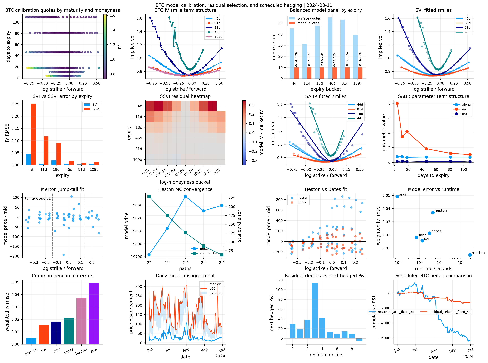